Consequences and examples
Written by GPT-6.1 Sol (OpenAI) in Codex, Ultra setting, October 2026. Self-checked by the writing AI. Public domain (CC0).
The coefficient \(q+1\) in the simplest spherical Hecke product counts intermediate lattices. In the sheaf calculation it comes from the two cohomology groups of a projective line. Passing between these descriptions requires retaining both the perverse shift and the Frobenius action on the top cohomology group. This lesson calculates the point counts and proper-fibre traces explicitly, proves the corresponding IC identifications from actual supported orientations, proves the scalar Frobenius operator on every Satake weight, the general Satake character and algebra formulas, normalized IC trace convolution, split Tate Frobenius on all IC stalks and costalks, the full orbit-indicator Satake formula, and the graded IC q-analogue. The Hall–Littlewood transition is proved for the whole dual root datum and lattice; the Whittaker and factorization statements are then formulated with their hypotheses.
1. Frobenius, shifts and half twists
Let \(G\) be split and connected reductive over \(\mathbf F_q\), with a split maximal torus \(T\subset B\). Write \(N\) for the unipotent radical of \(B\), \(L=X_*(T)\), and
\[ d_\lambda=\langle2\rho,\lambda\rangle, \qquad h_\nu=\langle2\rho,\nu\rangle. \]
Here \(\lambda\) is dominant, whereas \(\nu\) can be any coweight. Fix \(\ell\ne\operatorname{char}\mathbf F_q\) and a finite extension \(E/\mathbf Q_\ell\) containing a square root \(a\) of \(q\). Choose an embedding of the algebraic numbers involved into \(\mathbf C\) for which \(a=\sqrt q>0\). All Frobenius operators below are geometric Frobenius. Thus \(E(1)\) has eigenvalue \(q^{-1}\).
Use the rank-one Weil object with eigenvalue \(a^{-1}\) to define \(E(1/2)\). The notation \((d/2)\) means its \(d\)-th tensor power, including negative powers. This choice concerns the Weil structure; it does not change the underlying geometric sheaf. Define
\[ \mathrm{IC}^{\mathrm{raw}}_\lambda =j_{\lambda!*}E[d_\lambda], \qquad \mathcal I_\lambda =\mathrm{IC}^{\mathrm{raw}}_\lambda(d_\lambda/2). \tag{1.1} \]
The first object has the constant Weil structure on its open orbit. The second is the usual weight-zero normalization when the IC purity theorem applies. The phrase “weight zero” means that its degree-\(i\) stalk cohomology has weights at most \(i\), and the corresponding dual inequalities hold; it does not mean that Frobenius is the identity in every degree.
For a Weil complex \(K\) and \(x\in Y(\mathbf F_q)\), put
\[ t_K(x)=\sum_i(-1)^i \operatorname{Tr}(F_x;H^i(K_{\bar x})). \tag{1.2} \]
We use bounded complexes with finite-dimensional stalks. The shift convention is \(H^i(K[r])=H^{i+r}(K)\).
Lemma 1.1. Trace functions are additive on distinguished triangles and multiply on tensor products. Moreover
\[ t_{K[r](s/2)}=(-1)^r a^{-s}t_K. \tag{1.3} \]
Proof. For an invariant subspace \(U\subset V\), choose a basis of \(U\) and extend it to one of \(V\). The Frobenius matrix is block triangular, so its trace is the sum of the traces on \(U\) and \(V/U\). Apply this to kernels and images in the finite long exact cohomology sequence of a triangle. Adjacent image terms have opposite signs and cancel. This proves additivity. Over a field, the cohomology of the tensor product of two bounded complexes is the direct sum of their cohomology tensor products: split each complex into its cohomology and two-term contractible summands. The trace on \(V\otimes W\) is \(\operatorname{Tr}(F_V)\operatorname{Tr}(F_W)\), as a product basis shows. Multiplying the alternating sums proves the tensor assertion. A shift changes the sign by \((-1)^r\), and the Weil twist multiplies every eigenvalue by \(a^{-s}\). \(\square\)
These calculations agree with Perverse sheaves, D-modules and the function-sheaf dictionary, §§1–2. Its general pushforward formula has an additional trace-theorem premise. In the explicit convolution below we compute every fibre's cohomology, so no all-dimensional trace formula is needed for that product.
On \(\mathrm{Gr}^{\lambda}(\mathbf F_q)\), formula (1.1) gives
\[ t_{\mathcal I_\lambda}=(-1)^{d_\lambda}a^{-d_\lambda}. \tag{1.4} \]
It vanishes outside \(\mathrm{Gr}^{\leq\lambda}\). Consequently, whenever these IC objects are defined with finite-dimensional stalks, their trace functions are a basis of the finitely supported spherical functions. Indeed their expansion in orbit indicators is triangular, with nonzero diagonal entries (1.4). Every interval below a dominant coweight is finite, by Orbits and Schubert varieties, §3; inversion of a finite triangular matrix on each such interval proves both spanning and independence.
2. The quadratic cone in étale coefficients
The small Schubert surfaces for \(SL_2\) and \(GL_2\) have the same singularity. Their two-stratum geometry, coordinates and resolution are proved in Orbits and Schubert varieties, §§4–5. We first prove the two actual supported comparisons and then deduce the IC calculation in étale coefficients, including the characteristic-two quotient geometry.
The exact finite pushforward and geometric stalk formula are proved in Pushforward, pullback and finite morphisms, Theorem 4.1. Its Theorem 6.2 proves topological invariance. For the two supported comparisons, we use the actual smooth and section adjunctions proved in Semi-infinite orbits and weight functors, Theorems P.2.4.1 and P.3.4.1 and Exactness of weight functors, Appendix A.
Theorem 2.0 (actual supported orientations). Let \(k\) be a field with \(\ell\) invertible. Write \(\Lambda_m=\mathbf Z/\ell^m\) and let \(E/\mathbf Q_\ell\) be finite. The following are the actual counit-normalized supported comparisons at \(\Lambda_m\), at completed integral coefficients, and at \(E\). For the plane origin, \[ i_0^!E_{\mathbf A^2}=E(-2)[-4]. \tag{2.0} \] Its orientation is the composite of the two coordinate Kummer orientations. For the zero section \(i_D:D\hookrightarrow\mathbb V(\mathcal O_{\mathbf P^1}(-2))\), \[ i_D^!E=E_D(-1)[-2]. \] Restriction of its supported counit is cup product by \(c_1(\mathcal O_D(-2))\), with the negative sign. The maps retain coefficient reductions, rational realization, supported triangles, closed restriction and, for split models over \(\mathbf F_q\), their geometric Frobenius action. Over the geometric ground field, their algebraic scalar extensions are those of Appendix D in Lesson 11.
Proof. Factor the plane-origin immersion through the coordinate line: \[ \operatorname{Spec}k\xrightarrow{s_0}\mathbf A^1_v \xrightarrow{s_u}\mathbf A^2_{u,v}, \qquad s_u(v)=(0,v). \] Here \(s_u\) is the zero section of the trivial line projection \(q_u:\mathbf A^2\to\mathbf A^1_v\), and \(s_0\) is the zero section of \(q_v:\mathbf A^1_v\to\operatorname{Spec}k\). Lesson 6, Lemma A.1.1.1 identifies each actual section right adjoint on the constant coefficient with the inverse Tate line shifted by \([-2]\). Its normalization is the identity counit for \(q_us_u=1\), respectively \(q_vs_0=1\); on the trivial chart it is the positive coordinate Kummer class, not an unspecified nonzero orientation.
Actual exceptional transitivity and the invertible-twist comparison of Lesson 5, Theorems P.2.4.1 and P.3.4.1 consequently give \[ i_0^!E=s_0^!s_u^!E =s_0^!E_{\mathbf A^1_v}(-1)[-2] =E(-2)[-4]. \] The transitivity counit is the first section counit followed by the second. Thus its class is the composite of the two specified coordinate orientations. Each has degree two, so exchanging their order introduces the sign \((-1)^{2\cdot2}=1\). Their affine traces are each \(+1\); the composite trace is \(+1\) by counit transitivity. This verifies the coordinate normalization as well as the isomorphism of coefficient objects.
The exceptional curve in the cone resolution of Lesson 4, §§4–5 is exactly the zero section of \(L=\mathcal O_{\mathbf P^1}(-2)\). Its total space is smooth over every \(k\), including characteristic two; it is locally \(\mathbf A^1\times\mathbf A^1\), with the line transition functions. Apply the same section theorem to its line projection. It gives \(i_D^!E=E_D(-1)[-2]\) with its actual section counit. Lesson 6, Lemma A.1.2.1 identifies the restriction of that counit with the global Kummer class \(c_1(L)\). Its proof uses the relative divisor line \(\mathcal O_T(D)\) with its trivialization off \(D\), so includes the overlap units before forgetting support; equality on trivial line charts alone is not substituted for the global class. Since line-square and inverse transitions double and negate their Kummer cocycles, \[ c_1(\mathcal O(-2))=-2c_1(\mathcal O(1)). \] The positive projective-line trace sends \(c_1(\mathcal O(1))\) to \(1\), hence sends the displayed Euler class to \(-2\).
Lemma A.1.1.1 and Lemma A.1.2.1 are stated at every finite \(\Lambda_m\) and retain coefficient transitions. Lesson 6, Theorem A.2.2.1 constructs the actual completed supported triangle and its rationalization, with closed restriction and the same Euler map. The plane is the composite of two of those compatible section comparisons. Consequently both plane and exceptional-line comparisons retain their actual derived reductions and their completed/rational counits. This uses the already proved complete coefficient comparisons; it does not infer equality of maps solely from equality modulo \(\ell\).
For a split model over \(\mathbf F_q\), every coordinate section, line transition, relative divisor, Kummer connecting map and counit above is defined over \(\mathbf F_q\). The particular base comparisons of Lemma A.1.1.1 identify the section counit with its pullback after a field automorphism. The relative Kummer construction is natural under those same pullbacks. Thus passage to \(\overline{\mathbf F}_q\) carries the entire diagram with its descent action, and every displayed isomorphism intertwines geometric Frobenius. In particular the plane supported line \(E(-2)\) has eigenvalue \(q^2\), and the divisor line \(E(-1)\) has eigenvalue \(q\). These eigenvalues are the retained inverse Kummer lines, not a purity assertion about an unknown IC.
Finally, over the geometric ground field, Lesson 11, Theorem D.3.1.1 identifies scalar extension of the supported functors, counits and Tate lines with their actual algebraic coefficient versions. This proves the actual supported orientations and all their specified compatibilities. \(\square\)
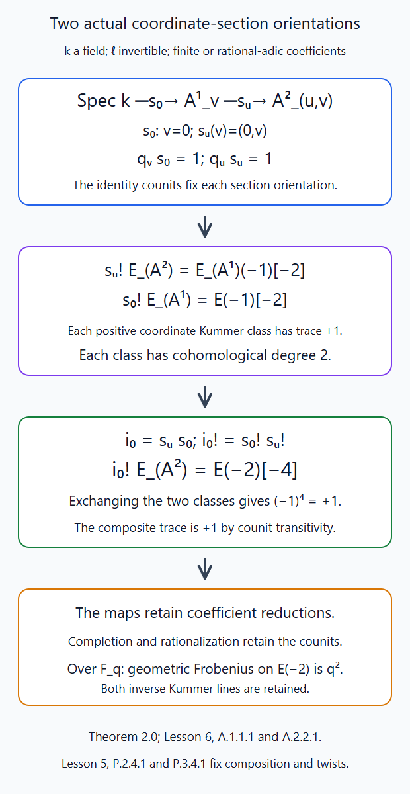
Theorem 2.0 composes the actual section adjunctions; each coordinate orientation has trace \(+1\). The two degree-two classes commute with sign \(+1\), and their inverse Tate lines give \(E(-2)[-4]\). Editable SVG source.

Let
\[ C=\operatorname{Spec}k[x,y,z]/(xy-z^2), \qquad \pi:\mathbf A^2\longrightarrow C, \quad (u,v)\longmapsto(u^2,v^2,uv), \tag{2.1} \]
where \(k\) is algebraically closed of any characteristic different from \(\ell\). The map is finite: its source algebra is generated by the integral elements \(u,v\), satisfying the displayed square equations. The complement of the vertex in \(C\) is smooth. If \(\operatorname{char}k\ne2\), this follows from the derivatives \(y,x,-2z\). If \(\operatorname{char}k=2\), the only point with \(x=y=0\) is the vertex, because \(z^2=xy\).
Proposition 2.1 (the cone IC). For rational étale coefficients,
\[ \mathrm{IC}_C=E_C[2]. \tag{2.2} \]
The equality also respects the constant Weil structure over \(\mathbf F_q\).
Proof. First suppose the characteristic is odd. The involution \(\sigma(u,v)=(-u,-v)\) has quotient (2.1). To see the invariant algebra directly, a monomial \(u^iv^j\) is invariant exactly when \(i+j\) is even. If both exponents are even it is a monomial in \(x,y\); if both are odd, factor out \(z\). The sole relation is \(z^2=xy\), as the resulting even and odd monomial lists are linearly independent in \(k[u,v]\).
The natural map
\[ E_C\longrightarrow(\pi_*E_{\mathbf A^2})^{\sigma} \tag{2.3} \]
is an isomorphism on geometric stalks. Off the vertex, the two points of a fibre are exchanged; at the vertex, its reduced fibre is a single point. In both cases the invariant locally constant functions are one copy of \(E\), and (2.3) sends a scalar to that constant function. Since \(2\) is invertible in \(E\), taking invariants is the direct summand given by \((1+\sigma)/2\).
Let \(i\) be the vertex and \(i'\) its closed inverse image. The latter is the thickened origin \(\operatorname{Spec}k[u,v]/(u^2,v^2,uv)\). Its étale topos is that of its reduced point, by topological invariance, and sections with support depend only on that closed complement. Thus its exceptional restriction can be computed at the reduced origin. Finite pushforward is exact. Its costalk comparison is
\[ i^!\pi_*E\simeq\pi_{0*}i'^!E. \tag{2.4} \]
Here \(\pi_0\) is the finite map of the fibres at the origin, whose étale site is that of a point. For completeness, test (2.4) by an arbitrary complex \(M\) on that point. Closed extension and inverse image satisfy \(\pi^*i_*M=i'_*\pi_0^*M\), checked on geometric stalks. The two adjunctions then give
\[ \operatorname{Hom}(M,i^!\pi_*E) =\operatorname{Hom}(\pi^*i_*M,E) =\operatorname{Hom}(M,\pi_{0*}i'^!E). \]
Yoneda proves the comparison, including its equivariance.
Theorem 2.0 gives \(i'^!E=E(-2)[-4]\). The involution acts as the identity on this one-dimensional orientation space. One can check this without a degree convention: the origin's orientation is the composite of the two supported Kummer orientations of the coordinate divisors. Replacing a coordinate \(u\) by \(-u\) changes its Kummer class by that of the constant \(-1\); the latter has an \(\ell^n\)-th root in \(k\) and hence zero Kummer class. Each orientation, and therefore their composite, is fixed. Taking the summand in (2.3) and (2.4) gives
\[ i^*E_C=E, \qquad i^!E_C=E(-2)[-4]. \tag{2.5} \]
In characteristic two, (2.1) is a universal homeomorphism. For every algebraically closed extension field a point of \(C\) has a unique lift: take the unique square roots of \(x,y\); their product is the unique square root of \(z^2\), hence equals \(z\). The map is finite and universally bijective, so it is integral, radicial and surjective. Topological invariance makes \(\pi^*\) and \(\pi_*\) inverse exact equivalences. Thus \(E_C=\pi_*E\), and (2.4) again gives (2.5).
Now put \(K=E_C[2]\). On the smooth open surface it is perverse. At the vertex its stalk has only degree \(-2\), and its costalk has only degree \(2\). These satisfy the perverse conditions, with strict inequalities at the boundary. They also exclude any perverse quotient or subobject supported at the vertex, respectively. The intermediate-extension characterization proved in Intermediate extensions and intersection complexes, §1 therefore identifies \(K\) with \(j_{!*}E[2]\). All maps and the averaging projector are defined over \(\mathbf F_q\), and the isomorphism is the identity on the open stratum. Uniqueness of intermediate extension makes it Frobenius compatible. \(\square\)
This proof uses characteristic-zero coefficients even when the ground field has characteristic two. With coefficients of characteristic two, the averaging projector in the odd-characteristic quotient calculation is unavailable; the assertion is not an integral IC calculation.
3. Point counts and the two smallest IC functions
The point counts and all three small IC functions below are proved. The quadratic-cone IC function uses Proposition 2.1; the minuscule projective-line and central-point functions use the curve and point calculations.
For \(SL_2\), the quasi-minuscule Schubert variety has one vertex and an open stratum which is an affine-line bundle over \(\mathbf P^1\). An affine-line bundle over an \(\mathbf F_q\)-point has \(q\) rational points: its fibre is an affine line, since the one-dimensional vector space and its translation torsor over a field are trivial. Thus
\[ \#\mathrm{Gr}_{SL_2}^{\leq\alpha^\vee}(\mathbf F_q) =1+q(q+1)=q^2+q+1. \tag{3.1} \]
Equivalently the three cells in Orbits and Schubert varieties, §4 have \(q^2,q,1\) points. Counting the whole closure includes the vertex.
For \(GL_2\), write \(c_{ab}\) for the indicator of the double coset with dominant coweight \((a,b)\). Normalize Haar measure by \(\operatorname{vol}GL_2(\mathbf F_q[[t]])=1\). The Satake transform \(\mathcal S\) is the one proved and computed in Spherical Hecke algebras as functions on the affine Grassmannian, §§4–5:
\[ \begin{aligned} \mathcal S(c_{10})&=a(x_1+x_2),\\ \mathcal S(c_{20})&=q(x_1^2+x_2^2)+(q-1)x_1x_2,\\ \mathcal S(c_{11})&=x_1x_2. \end{aligned} \tag{3.2} \]
The first closure is \(\mathbf P^1\), so \(\mathcal I_{10}=E_{\mathbf P^1}[1](1/2)\). The second closure has open orbit \((2,0)\) and closed central point \((1,1)\), with the cone chart (2.1) at that point. Proposition 2.1 and the smooth open chart identify its IC with the shifted constant sheaf. The central point has dimension zero. Consequently
\[ \begin{aligned} t_{\mathcal I_{10}}&=-a^{-1}c_{10},\\ t_{\mathcal I_{20}}&=q^{-1}(c_{20}+c_{11}),\\ t_{\mathcal I_{11}}&=c_{11}. \end{aligned} \tag{3.3} \]
Applying (3.2) proves
\[ \begin{aligned} \mathcal S(t_{\mathcal I_{10}})&=-(x_1+x_2),\\ \mathcal S(t_{\mathcal I_{20}})&=x_1^2+x_1x_2+x_2^2,\\ \mathcal S(t_{\mathcal I_{11}})&=x_1x_2. \end{aligned} \tag{3.4} \]
These are the negative standard character, the symmetric-square character, and the determinant character. Their representation interpretation is also proved by the rank-one and minuscule calculations in Identifying the dual group, §§3–4. The minus sign in the first line comes from \([1]\).
4. Recovering the lattice-chain product
Consider the two-step modification with both relative positions \((1,0)\). Its source \(\widetilde Y\) is a smooth projective surface, an iterated \(\mathbf P^1\)-bundle, and the convolution map
\[ m:\widetilde Y\longrightarrow Y=\mathrm{Gr}_{GL_2}^{\leq(2,0)} \tag{4.1} \]
is an isomorphism over the open orbit. Its fibre over the central point is \(\mathbf P^1\). Indeed an index-two quotient lattice of type \((2,0)\) has a unique intermediate colength-one lattice; for type \((1,1)\), the quotient is a two-dimensional \(\mathbf F_q\)-space, and intermediate lattices are its lines. These are the actual chain fibres computed in Convolution and rigidity, §§2–3.
The normalized convolution is
\[ \mathcal I_{10}*\mathcal I_{10} =Rm_*E_{\widetilde Y}[2](1). \tag{4.2} \]
At an open-orbit point its stalk has trace \(q^{-1}\). At the central point the stalk is \(R\Gamma(\mathbf P^1,E)[2](1)\). The projective-line computation, with its Kummer generator, gives
\[ H^0(\mathbf P^1,E)=E, \qquad H^2(\mathbf P^1,E)=E(-1), \qquad H^i=0\quad(i\ne0,2). \tag{4.3} \]
The two Frobenius eigenvalues before the twist are \(1,q\). After the shift and twist their trace sum is \(q^{-1}+1\). Formula (4.3) is proved by the curve computation used in Torsion sheaves on curves, §4, and its Frobenius convention in Frobenius morphisms and their action on cohomology, §6. Thus direct fibre computation proves
\[ t_{\mathcal I_{10}*\mathcal I_{10}} =q^{-1}c_{20}+(q^{-1}+1)c_{11} =t_{\mathcal I_{20}}+t_{\mathcal I_{11}}. \tag{4.4} \]
It also proves trace compatibility with function convolution here. The trace on the source object is constantly \(q^{-1}\). Summing it over the unique rational intermediate lattice in the first case or the \(q+1\) rational lines in the second case gives exactly the two stalk traces just calculated. The chain model is the function convolution model because every right \(K\)-coset has measure one, as proved in Lesson 1.
There is a corresponding sheaf decomposition, whose Frobenius normalization matters:
\[ \mathrm{IC}^{\mathrm{raw}}_{10}* \mathrm{IC}^{\mathrm{raw}}_{10} \simeq\mathrm{IC}^{\mathrm{raw}}_{20} \oplus E_{(1,1)}(-1). \tag{4.5} \]
To verify (4.5) without a general decomposition theorem, use the exceptional curve \(D\). Its normal line bundle in the cone resolution is \(\mathcal O_{\mathbf P^1}(-2)\), computed from the lattice-chain charts in Convolution and rigidity, §10. On the inverse image of the cone chart, \(D\) is the zero section of that line bundle. Exceptional restriction is local in this open neighbourhood of \(D\), so Theorem 2.0 supplies the actual comparison \(i_D^!E=E_D(-1)[-2]\) with its specified orientation. Pushing the exceptional-support localization triangle along \(m\), which is an isomorphism off \(D\), gives, for \(A=Rm_*E[2]\) and the vertex inclusion \(i\),
\[ i^*A=R\Gamma(D,E)[2], \qquad i^!A=R\Gamma(D,E(-1)). \tag{4.8} \]
The first comparison is proper base change. For the second, the pushed localization triangle is the localization triangle at the vertex: the open terms agree because \(m\) is an isomorphism there, and composition of direct image identifies their maps. The closed term is therefore the stated supported complex.
Let \(P=E_{(1,1)}(-1)\). The inclusion of the degree-zero group in \(i^!A\) and the projection to the degree-zero group of \(i^*A\) define adjunction maps \(v:P\to A\) and \(u:A\to P\). Their composite is multiplication by \(-2\). To check it, the supported divisor orientation restricts to the Kummer class of its normal line bundle. In local divisor parameters the ratios of the parameters on overlaps are the transition functions of \(\mathcal O(D)\); their Kummer boundary is exactly that Chern class. Restricting to \(D\) gives \(c_1(\mathcal O(-2))\). The projective-line trace sends \(c_1(\mathcal O(1))\) to \(+1\), so it sends this class to \(-2\). Theorem 2.0 identifies this global supported counit and its Euler class, so the scalar is the actual composite \(uv=-2\).
Replace \(u\) by \(-u/2\) to get a retraction. Its complement agrees with \(E[2]\) on the open orbit. Equations (4.3) and (4.8) show that \(i^*A\) has groups \(E\) in degree \(-2\) and \(E(-1)\) in degree zero; \(i^!A\) has groups \(E(-1)\) in degree zero and \(E(-2)\) in degree two. The nonzero composite removes exactly the degree-zero group on each side. The complementary stalk and costalk therefore have only degrees \(-2\) and \(2\), respectively. The strict boundary inequalities make the complement perverse and exclude a subobject or quotient on the closed point. It is \(\mathrm{IC}^{\mathrm{raw}}_{20}\), by intermediate extension. This proves (4.5). All coordinates, orientations, trace maps and the scalar \(-2\) are defined over \(\mathbf F_q\), so the decomposition is Frobenius compatible. The two half twists then give the total twist \((1)\).
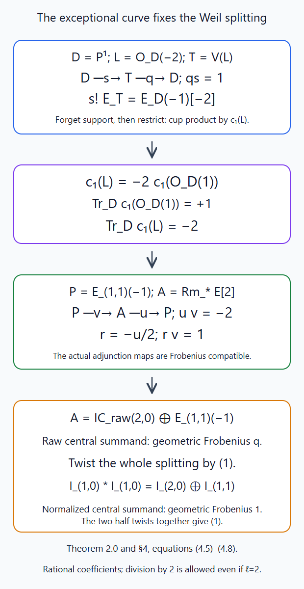
Theorem 2.0 and equation (4.8) give \(uv=-2\); the rescaled map \(r=-u/2\) satisfies \(rv=1\). The raw central summand is \(E_{(1,1)}(-1)\), with geometric Frobenius \(q\). The total twist \((1)\) gives the normalized central eigenvalue \(1\). Editable SVG source.

Twisting (4.5) by \((1)\) yields
\[ \mathcal I_{10}*\mathcal I_{10} \simeq\mathcal I_{20}\oplus\mathcal I_{11}. \tag{4.6} \]
The twist on the central raw summand is essential. Dropping it would incorrectly replace its Frobenius eigenvalue \(q\) by \(1\).
Finally insert (3.3) in (4.4), or take traces in (4.6):
\[ q^{-1}(c_{10}*c_{10}) =q^{-1}(c_{20}+c_{11})+c_{11}. \]
Multiplication by \(q\) proves the indicator relation
\[ \boxed{\ c_{10}*c_{10}=c_{20}+(q+1)c_{11}.\ } \tag{4.7} \]
Thus one copy of the determinant representation corresponds to the normalized point sheaf, while the indicator coefficient remains \(q+1\).
5. The general character formula and its arithmetic input
The passage from weights to functions uses actual compact traces, compact concentration and scalar Frobenius. Appendix B proves the trace input and the full spherical algebra comparison.
Theorem 5.1 (Satake character formula). Fix a dominant \(\lambda\). The following three proved statements hold for every \(\nu\):
- The compact-support trace identity holds on the supported finite-type intersection \(S_\nu\cap\mathrm{Gr}^{\leq\lambda}\).
- Its compact cohomology is zero except in degree \(h_\nu\).
- Frobenius acts on that remaining group as the scalar \(a^{h_\nu}\), and its dimension is \(\dim V_\lambda(\nu)\), the \(\nu\)-weight multiplicity of the dual-group representation.
With the Satake normalization of Lesson 1,
\[ \mathcal S(t_{\mathcal I_\lambda}) =(-1)^{d_\lambda}\operatorname{ch}V_\lambda. \tag{5.1} \]
Proof. The compact trace assertion is Theorem B.1.1.1; concentration is Lesson 5, Theorem Q.4.2.1; the full weight identification is Lesson 11, Theorem D.4.2.1; and scalar Frobenius is Theorem A.3.1.1. Lemma B.0.1.1 identifies the rational semi-infinite points with the cosets of Lesson 1. Thus the coefficient of \(e^\nu\) in the Satake transform is
\[ a^{-h_\nu}\sum_{x\in S_\nu(\mathbf F_q)}t_{\mathcal I_\lambda}(x). \tag{5.2} \]
There are finitely many nonzero terms. By these three assertions the sum is \((-1)^{h_\nu}a^{h_\nu}\dim V_\lambda(\nu)\). Every nonzero weight satisfies \(\lambda-\nu\in\mathbf Z\Phi^\vee\); each simple coroot pairs to \(2\) with \(2\rho\). Therefore \(h_\nu\equiv d_\lambda\pmod2\). Substitute in (5.2) to obtain \((-1)^{d_\lambda}\dim V_\lambda(\nu)\). Summing over the weights proves (5.1). \(\square\)
All the assertions used here concern the actual rational-adic compact complexes and their descended geometric Frobenius maps. Appendix B also proves multiplicativity of the normalized transform directly from Iwasawa and identifies its image with the whole invariant group algebra.
Equation (5.1) gives the usual geometric interpretation of the classical Satake character basis. This normalization is discussed in Edward Frenkel's free Lectures on the Langlands program and conformal field theory, §5.3. If the half twist is instead defined using \(-a\), the trace of \(\mathcal I_\lambda\) is multiplied by \((-1)^{d_\lambda}\), and (5.1) has no sign. Equivalently one may multiply functions by the parity character of \(L/\mathbf Z\Phi^\vee\). This is well-defined because the coroot pairings just computed are even; under convolution the component parities add.
For a split torus, all the premises can be checked directly. A supported constructible sheaf ignores the nilpotent directions of its Grassmannian; its reduced support is a finite subset of \(L\), by Loop groups and the affine Grassmannian, §6. Every IC is the untwisted point object, all \(h_\nu\) and \(d_\lambda\) are zero, and its sole weight space is \(E\) with Frobenius one. Point convolution adds labels. Thus \(c_\lambda*c_\mu=c_{\lambda+\mu}\) and \(\mathcal S(c_\lambda)=e^\lambda\) follow directly.
6. A polynomial that remembers stalk degrees
Use the dual root system: its positive roots are the positive coroots of \(G\). Define \(P_u(\gamma)\in\mathbf Z[u]\) by the formal expansion
\[ \prod_{\beta\in\widehat\Phi^+}(1-u e^\beta)^{-1} =\sum_\gamma P_u(\gamma)e^\gamma. \tag{6.1} \]
For a fixed \(\gamma\), its coefficient is a finite sum. Indeed every positive root has positive height in the simple-root basis, so the sum of the multiplicities in a partition of \(\gamma\) is bounded by its height. A term with \(r\) roots contributes \(u^r\). Put \(\widehat\rho=\frac12\sum_{\beta\in\widehat\Phi^+}\beta\) and define
\[ m^\mu_\lambda(u) =\sum_{w\in W}(-1)^{\ell(w)} P_u\bigl(w(\lambda+\widehat\rho)-(\mu+\widehat\rho)\bigr). \tag{6.2} \]
The variable \(u\) in this definition is formal. It will be evaluated at the cardinality \(q\) only after the grading convention is fixed. The stalk theorem concerns dominant \(\lambda,\mu\) with \(\mu\leq\lambda\). It is not a positivity assertion about (6.2) for every nondonominant \(\mu\).
In the arithmetic setting of §1, the correctly normalized stalk identity is
\[ m^\mu_\lambda(u) =u^{\langle\rho,\lambda-\mu\rangle} \sum_{j\geq0} \dim_E\mathcal H^{-d_\lambda+2j} (i_\mu^*\mathrm{IC}^{\mathrm{raw}}_\lambda)\,u^{-j}. \tag{6.3} \]
Here \(i_\mu\) is the geometric point \(t^\mu\); the sum uses stalk cohomological degrees, not the global IC degrees. The theorem also asserts the relevant parity and vanishing, so the right side is a polynomial with nonnegative exponents. Theorem D.6.1.1 proves (6.3) from the actual stalk operators, the full orbit-indicator formula and infinitely many finite-field extensions.
Equivalently the right side is \(\sum_{r\geq0}\dim\mathcal H^{-h_\mu-2r}(i_\mu^*\mathrm{IC}^{\mathrm{raw}}_\lambda)u^r\): set \(r=\langle\rho,\lambda-\mu\rangle-j\). The integer prefactor in (6.3) is integral because \(\lambda-\mu\) is a sum of coroots. George Lusztig's freely accessible author copy of Singularities, character formulas, and a q-analogue of weight multiplicities, equations (9.3)–(9.4) and §11(c), printed pp. 225–227, gives the polynomial and IC conventions. The equation in (9.4) is presented there as a conjecture, followed by the note that Kato proved it. Dmitri Panyushev's free On Lusztig's q-analogues of all weight multiplicities of a representation, §1, equation (1.1), gives (6.1)–(6.2) with the positive powers used here. These free comparison locators specify the stalk conventions. The algebraic transition is proved below, and Appendix D proves the geometric equality (6.3) in the arithmetic setting of §1.
6.1. A finite Hall–Littlewood polynomial
We now prove an algebraic interpretation of (6.2). Keep the dual positive roots \(\widehat\Phi^+\), the coweight lattice \(L\), and its Weyl group \(W\). Thus the roots in this calculation are the coroots of \(G\). The lattice can contain nonprimitive roots, and \(\widehat\rho\) need not belong to it. Central directions, on which \(W\) is trivial, are retained.
Work over \(F=\mathbf Q(u)\). Set \[ Q_u=\prod_{\beta\in\widehat\Phi^+} \frac{1-e^{-\beta}}{1-u e^{-\beta}},\qquad W_\nu(u)=\sum_{w\nu=\nu}u^{\ell(w)}, \] and, for dominant \(\nu\), define initially in the fraction field \[ H_\nu(u)=\frac1{W_\nu(u)} \sum_{w\in W}w\left(\frac{e^\nu}{Q_u}\right). \tag{6.5} \] The stabilizer polynomial has constant term one, so is nonzero. We shall prove that \(H_\nu(u)\) is a finite \(W\)-invariant Laurent polynomial, supported in weights at most \(\nu\), with coefficient one on its top orbit. These are the Hall–Littlewood polynomials in the normalization (6.5).
The root and chamber arguments are proved in Root systems and their Weyl groups. The finite highest-weight characters and their support are proved in Weights, Verma modules and the theorem of the highest weight. We use the complete Weyl character proof in Weyl's character formula and the multiplicity formulas, Theorem 2.1 and Corollary 2.2.
Temporarily enlarge \(L\) to \(L'=L+\mathbf Z\widehat\rho\). It is a \(W\)-stable free lattice, because \(w\widehat\rho-\widehat\rho\) is in the root lattice. Put \[ D=e^{\widehat\rho}\prod_{\beta>0}(1-e^{-\beta}),\qquad A_\eta=\sum_w(-1)^{\ell(w)}e^{w\eta}. \] For a simple reflection, its changed root factor and changed \(\widehat\rho\) monomial give \(wD=(-1)^{\ell(w)}D\). Consequently \[ W_\nu(u)D H_\nu(u) =\sum_{S\subset\widehat\Phi^+}(-u)^{|S|} A_{\nu+\widehat\rho-\beta_S}, \qquad \beta_S=\sum_{\beta\in S}\beta. \tag{6.6} \] This is a finite expansion.
Each alternant divided by \(D\) is a Laurent polynomial in the original lattice. If \(\eta\) lies on a reflection wall, pair \(w\) with \(ws\), where \(s\eta=\eta\); their signs cancel, so \(A_\eta=0\). Otherwise choose \(v\) taking \(\eta\) into the open dominant chamber, with image \(\eta^+\). Its simple-coroot pairings are positive integers. Thus \(\eta^+-\widehat\rho\) is dominant integral and \[ \eta^+-\widehat\rho =v\nu+(v\widehat\rho-\widehat\rho)-v\beta_S\in L. \] The proved Weyl character formula gives \[ \frac{A_\eta}{D} =(-1)^{\ell(v)}\operatorname{ch} V_{\eta^+-\widehat\rho}. \tag{6.7} \] For a reductive lattice, apply that formula to the semisimple restriction and retain the central monomial. All weight differences are in the root lattice, so its character remains in \(\mathbf Z[L]\). Equation (6.6) now proves \(H_\nu(u)\in F[L]^W\). In particular no divisibility argument requiring a primitive root in \(L\) is needed.
To prove triangular support, expand downward, in translates of the negative cone generated by the simple dual roots. A fixed coefficient of any expansion has finitely many terms, because positive height bounds all root exponents. If \(w\) sends a root to a positive root, its factor in \(w(Q_u^{-1})\) is a downward geometric series. If it sends it to \(-\beta\), the factor is \[ \frac{1-u e^{\beta}}{1-e^{\beta}} =u+(u-1)\frac{e^{-\beta}}{1-e^{-\beta}}. \tag{6.8} \] Thus each \(w\)-summand is supported in \(w\nu-\widehat Q^+\), where \(\widehat Q^+\) is the nonnegative integral simple-root cone. For dominant \(\nu\), the reduced-word calculation gives \(\nu-w\nu\in\widehat Q^+\): telescope along a reduced expression for \(w\); the resulting inversion roots are positive and their coefficients are the nonnegative pairings of \(\nu\) with simple coroots. It follows that every weight of \(H_\nu\) is at most \(\nu\). Its dominant orbit representative also has this property, by \(W\)-invariance.
6.2. The exact dual coefficient
For dominant \(\mu\) and a \(W\)-invariant Laurent polynomial \(f\), define \[ \mathfrak l_\mu(f)=[e^\mu](fQ_u). \] The product is read in the downward completion just specified. We prove \[ \mathfrak l_\mu(H_\nu)=\delta_{\mu\nu}. \tag{6.9} \]
Let \(N(w)=\{\beta>0:w^{-1}\beta<0\}\). Factors that remain positive cancel in \(Q_u/wQ_u\). A changed factor, with \(x=e^{-\beta}\), is \((u-x)/(1-ux)\). Hence \[ \frac{Q_u}{wQ_u} =\prod_{\beta\in N(w)} \frac{u-e^{-\beta}}{1-u e^{-\beta}}. \tag{6.10} \] It is a downward series with constant term \(u^{\ell(w)}\). A contribution of the \(w\)-summand of \(H_\nu Q_u\) at \(\mu\) can therefore occur only if \[ \mu=w\nu-\sum_{\beta\in N(w)}n_\beta\beta, \qquad n_\beta\ge0. \] Applying \(w^{-1}\) gives \[ w^{-1}\mu=\nu+ \sum_{\beta\in N(w)}n_\beta(-w^{-1}\beta)\ge\nu. \] Dominance of \(\mu\) also gives \(\mu\ge w^{-1}\mu\). On the other hand, polynomial triangularity from §6.1 and the negative support of \(Q_u\) imply \(\mu\le\nu\) for every nonzero coefficient of their product. The simple-root cone is pointed. Thus \(\mu=\nu\), and every \(n_\beta\) is zero. The remaining terms have \(w\nu=\nu\), and their constant terms sum to \(W_\nu(u)\). Division by that sum proves (6.9). Using the triangularity of the sum here is legitimate: its polynomiality was established first, so a nonzero coefficient has that bound irrespective of cancellations between summands.
Only the coefficient of \(e^\nu\) in \(H_\nu\) can contribute to the coefficient of \(e^\nu\) in \(H_\nu Q_u\). Equation (6.9) therefore proves that this coefficient is one. Weyl invariance proves the same statement on the entire top orbit.
6.3. The character transition formula
Theorem 6.1. For every dominant coweight \(\lambda\), \[ \operatorname{ch}V_\lambda =\sum_{\substack{\mu\text{ dominant}\\\mu\le\lambda}} m^\mu_\lambda(u)H_\mu(u). \tag{6.11} \] This is a finite algebraic identity. Its coefficients are exactly the polynomials (6.2), for every reduced root datum and its coweight lattice.
Proof. There are finitely many dominant \(\mu\le\lambda\). Their central components are fixed. On the root span take a positive definite \(W\)-invariant inner product. Dominance gives \[ \|\lambda\|^2-\|\mu\|^2 =(\lambda+\mu,\lambda-\mu)\ge0, \] since \(\lambda-\mu\) is a nonnegative integral sum of simple roots, each having nonnegative inner product with \(\lambda+\mu\). Thus their root components lie in a bounded ball of a discrete lattice, which has finitely many points: bound their integer coordinates in any lattice basis.
The orbit sums \(\sum_{\eta\in W\mu}e^\eta\) are a basis of the invariant Laurent polynomials supported on these orbits. The proved triangularity and top coefficient one show that the \(H_\mu\) are another basis. Indeed, order this finite set by a linear extension of dominance; its change matrix is triangular with diagonal one and can be inverted by finitely many subtractions. Equation (6.9) supplies the exact dual basis. The highest-weight support theorem places \(\operatorname{ch}V_\lambda\) in this space, so its coefficient at \(H_\mu\) is \(\mathfrak l_\mu(\operatorname{ch}V_\lambda)\).
Multiply the proved Weyl character formula by \(Q_u\). It gives \[ \operatorname{ch}V_\lambda Q_u =\sum_{w\in W}(-1)^{\ell(w)} e^{w(\lambda+\widehat\rho)-\widehat\rho} \prod_{\beta>0}(1-u e^{-\beta})^{-1}. \tag{6.12} \] The negative-exponent version of (6.1) has coefficient \(P_u(\gamma)\) at \(e^{-\gamma}\), by the same finite partition count. Extraction of \(e^\mu\) in (6.12) is therefore exactly (6.2). This proves (6.11), including its finite support. Although the \(H_\mu\) were defined over \(\mathbf Q(u)\), every transition coefficient is in \(\mathbf Z[u]\). \(\square\)
At \(u=1\), \(Q_u=1\) and \(W_\mu(1)\) is the size of the stabilizer, so \(H_\mu(1)\) is its orbit sum. Thus (6.11) recovers the ordinary weight multiplicities. At \(u=0\), the alternant calculation makes \(H_\mu(0)=\operatorname{ch}V_\mu\). These specializations are defined: the only denominator in the finite polynomial expression is \(W_\mu(u)\), which is nonzero at both values.
Theorem 6.1 proves the algebraic transition underlying the weight polynomial. Theorem D.5.1.1 supplies the all-root spherical-Hecke comparison \[ \mathcal S(c_\mu)=q^{\langle\rho,\mu\rangle}H_\mu(q^{-1}) \tag{6.13} \] Theorem D.6.1.1 then proves the graded IC stalk comparison. Equation (6.3) is a polynomial identity in the formal variable \(u\). The Frobenius trace evaluates that same polynomial at \(q^{-1}\), accounting for the inverse powers in (6.13).
6.4. The rank-one check
For \(SL_2\), let \(\beta=\alpha^\vee\), the positive root of its dual \(PGL_2\). Then \(\widehat\rho=\beta/2\). Since the positive root system consists of \(\beta\),
\[ P_u(r\beta)=u^r\quad(r\geq0), \qquad P_u(r\beta)=0\quad(r<0). \]
For \(\lambda=\beta\) and \(\mu=0\), the identity Weyl element contributes \(P_u(\beta)=u\); the reflection contributes \(P_u(-2\beta)=0\). Thus
\[ m^0_{\alpha^\vee}(u)=u. \tag{6.4} \]
In the same rank-one lattice, \[ H_\beta(u)=e^\beta+e^{-\beta}+1-u,\qquad H_0(u)=1. \tag{6.14} \] Indeed put \(x=e^{-\beta}\) in (6.5). Its two summands are \(x^{-1}(1-ux)/(1-x)\) and \(x(x-u)/(x-1)\); their sum is \(x^{-1}+x+1-u\). For label zero their sum is \(1+u\), which is divided by \(W_0(u)=1+u\). Hence \(\operatorname{ch}V_\beta=H_\beta+uH_0\). The explicit \(SL_2\) Satake calculation in The Satake isomorphism and spherical representations, §6 verifies (6.13) in this example: multiplying (6.14) at \(u=q^{-1}\) by \(q\) gives \(q(e^\beta+e^{-\beta})+q-1\).
The cone calculation proves the same value directly: \(d_\lambda=2\), \(\langle\rho,\lambda\rangle=1\), and the stalk of \(E[2]\) has only \(\mathcal H^{-2}=E\). Hence the sum in (6.3) is \(1\), but its required prefactor is \(u\). At \(u=1\) the multiplicity is one; at \(u=q\) the polynomial is \(q\). These are different questions.
7. The Whittaker character and the Casselman–Shalika statement
We first specify the finite-characteristic statement. Work over an algebraic closure of a finite field, with \(\overline{\mathbf Q}_\ell\)-coefficients and \(\ell\ne p\). Choose a pinning and its simple-root quotient maps \(u_i:N\to\mathbf G_a\). Root multiplication adds these coordinates; higher-root terms do not affect them. Choose a nontrivial additive character \(\psi:\mathbf F_p\to\overline{\mathbf Q}_\ell^\times\) and its Artin–Schreier rank-one sheaf \(\mathcal L_\psi\) on \(\mathbf A^1\). Define the conductor-zero loop character
\[ \chi_0(n)=\sum_i\operatorname{Res}(u_i(n)\,dt), \qquad \chi_\mu(n)=\chi_0(t^\mu n t^{-\mu}). \tag{7.1} \]
The simple-root coordinates of a commutator vanish, so (7.1) is an additive group homomorphism. Its nonzero coefficient on every simple-root factor is the genericity condition.
On \(S_\nu=N((t))t^\nu\), the expression \(\chi_\mu(n)\), normalized to zero at \(t^\nu\), descends to a function \(\chi_\mu^\nu\) exactly when \(\mu+\nu\) is dominant. Indeed the simple-root coordinate of the stabilizer is \(t^{\langle\alpha_i,\nu\rangle}O\); conjugation by \(t^\mu\) multiplies it by \(t^{\langle\alpha_i,\mu\rangle}\). Residue is identically zero on that ideal exactly when \(\langle\alpha_i,\mu+\nu\rangle\geq0\). If the inequality fails, its \(t^{-1}\) coefficient can be nonzero, so descent fails. Coordinates for nonsimple roots do not affect the character. This proves the descent criterion.
Appendix E proves the nondominant-conductor branch, the upper degree bound, the top-degree component criterion and every highest-slice case. Appendix F proves the general top-character obstruction for conductor \(-\nu\), including its dominant simple-Levi projections and component-basis comparison. Appendix G constructs the actual relevant Whittaker strata, residue evaluation and finite Hecke coefficient comparisons. The general geometric Casselman–Shalika cohomology statement additionally requires lower-degree concentration and the full multiplicity comparison: For dominant \(\lambda\) and for \(\mu,\nu\) such that \(\mu+\nu\) is dominant,
\[ H_c^r\left(\mathrm{Gr}^{\leq\lambda}\cap S_\nu, \mathrm{IC}^{\mathrm{raw}}_\lambda\otimes (\chi_\mu^\nu)^*\mathcal L_\psi\right) \cong \begin{cases} \operatorname{Hom}_{\widehat G} (V_\lambda\otimes V_\mu,V_{\mu+\nu}), &r=h_\nu\text{ and }\mu\text{ dominant},\\ 0,&\text{otherwise}. \end{cases} \tag{7.2} \]
The displayed isomorphism concerns geometric coefficient spaces; it does not assign a Weil twist to its right side. For example \(E[d]\) on \(\mathbf A^d\) has compact cohomology \(E(-d)[-d]\), so omission of the twist would change its Frobenius trace.
Formula (7.2) is Frenkel–Gaitsgory–Vilonen, Whittaker patterns in the geometry of moduli spaces of bundles on curves, Theorem 1, equation (1.7). The support is the closed Schubert variety. With \(\mu=0\) and dominant \(\nu\), the right side is one-dimensional only for \(\nu=\lambda\), and otherwise zero. Thus the complex has its surviving group in degree \(h_\lambda\), or is zero. In derived notation the nonzero geometric complex is \(E[-h_\lambda]\). This negative shift is consistent with the cohomological convention in §1.
There is also a categorical version. Its characteristic-zero incarnation requires exponential D-modules rather than ordinary complex local systems. On complex \(\mathbf A^1\), a rank-one local system is constant because the line is simply connected; it cannot provide the nontrivial additive character needed for Whittaker equivariance.
Here is the precise derived statement used in the 2024 geometric Langlands work. For a connected reductive group over an algebraically closed field of characteristic zero and a smooth curve \(X\), use the \(\rho(\omega_X)\)-twisted Grassmannian. The residue character is nonzero on every simple-root factor. Form the cocomplete derived category
\[ \operatorname{Whit}^{!}(G) =D\text{-}\mathrm{mod}_{1/2} (\mathrm{Gr}_{G,\rho(\omega_X)})^ {L(N)_{\rho(\omega_X)},\chi}. \tag{7.3} \]
The superscript denotes character-twisted invariants, not ordinary invariant sheaves. With the half-twist and factorization structures specified there, there is a canonical equivalence of factorization categories
\[ \operatorname{CS}_G: \operatorname{Whit}^{!}(G)\xrightarrow{\sim} \operatorname{Rep}(\widehat G), \qquad \Delta_\lambda\longmapsto V_\lambda. \tag{7.4} \]
In (7.4), the representation category is the derived cocomplete category in the source's convention. This is Arinkin and collaborators, Proof of the geometric Langlands conjecture II, Theorem 1.4.2, §1.4.4 and Remark 1.4.6. Sections 1.3–1.4 define the invariants and coinvariants and distinguish the local Grassmannian theorem from the global statement on \(\mathrm{Bun}_G\). The equivalence (7.4) is stated here; no proof of it is inferred from the classical Satake equivalence of Lesson 11.
For a torus the categorical assertion in the perverse setting has a complete elementary proof. There is no \(N\), no residue character and no shift. For \(T=\mathbf G_m\), a bounded supported perverse sheaf is a finite family \((V_n)_{n\in\mathbf Z}\) of finite-dimensional coefficient spaces. Multiplication of lattices gives
\[ (V*W)_r=\bigoplus_{m+n=r}V_m\otimes W_n. \tag{7.5} \]
The unit is \(E\) at zero. The dual places \(V_n^*\) at \(-n\); evaluation and coevaluation are the usual vector-space maps. Associativity and symmetry are those of vector spaces, and their coherence identities hold on each summand.
To identify this category with \(\operatorname{Rep}_E(\mathbf G_m)\), assign \(v\in V_n\) the coaction \(v\mapsto v\otimes z^n\). Conversely, expand the coaction of a finite-dimensional representation as \(\delta(v)=\sum_n p_n(v)\otimes z^n\). Coassociativity and counit give
\[ p_np_m=\delta_{nm}p_n,\qquad\sum_np_n=1. \tag{7.6} \]
A finite basis makes the sum finite. Therefore \(V=\bigoplus_n\operatorname{im}p_n\), and the two constructions are inverse, including on morphisms. The product coaction gives precisely (7.5). This proves the torus equivalence directly. The proof for a higher-dimensional split torus replaces \(\mathbf Z\) by its character lattice.
8. Factorization over finite sets of points
Let \(X\) be a smooth curve, and let \(I\) be a finite set. Its Beilinson–Drinfeld Grassmannian classifies a \(G\)-bundle together with a trivialization away from the graphs of \(I\) labeled points. Over the open subset \(X^{I,\circ}\) where all points are distinct, modifications at different discs are independent. The torsor-gluing proof and its compatibility with arbitrary parameter rings are in Beauville–Laszlo gluing and Fusion and the commutativity constraint, §§1–3. For a partition of \(I\) into disjoint blocks, the corresponding block-disjoint open has the analogous product description.
Along a diagonal the labels merge. Already for two points, the restriction of the canonical fusion extension to the diagonal gives the convolution of the two objects. Under a tensor equivalence with dual-group representations, this corresponds to
\[ \operatorname{Rep}(\widehat G\times\widehat G) \xrightarrow{\operatorname{Res}_{\mathrm{diag}}} \operatorname{Rep}(\widehat G), \qquad V\boxtimes W\longmapsto V\otimes W. \tag{8.1} \]
Indeed the diagonal element \(g\) acts as \(g\) on both factors. Lesson 8 proves the classical fusion extensions, the comparisons on every partial diagonal, and their associativity. These are statements about the specified equivariant, universally locally acyclic relative sheaves and their canonical extensions. They do not identify every constructible sheaf on \(X^I\) with a representation of a fixed product group.
The corresponding arithmetic theorem has further hypotheses. Fargues–Scholze, Geometrization of the local Langlands correspondence, Definition VI.9.1 and VI.9–VI.11 works on the local Hecke stack over \((\operatorname{Div}_X^1)^I\) for a nonarchimedean local field \(E_0\). Its coefficient ring \(\Lambda\) is killed by an integer prime to the residue characteristic. The Satake objects are ULA, flat, relative perverse sheaves. Proposition VI.9.2 retains the continuous \(W_{E_0}^I\)-action; VI.9.3–VI.9.4 give restriction and coherent fusion; VI.10.2–VI.10.3 reconstruct the product Hopf algebra internal to Weil representations. The dual-group identification and its cyclotomic pinning action are in VI.11.1. This arithmetic statement is not used as a proof of a classical equivalence on arbitrary \(X^I\).
The Ran space organizes points with varying finite label sets. Its finite-set data consist of the spaces \(X^I\), maps of diagonals induced by surjections of label sets, and product identifications over disjoint configurations. The preceding collision rule describes how Satake objects fit those maps. Constructing a full sheaf category on that colimit, with descent and an equivalence of categories, requires an additional theorem. The finite-set fusion statements above specify the part needed for the convolution category in this course.
9. The Hecke correspondence on bundles
The same modification geometry supplies the kernels of Hecke functors. Fix \(x\in X\). The Hecke correspondence at \(x\) classifies
\[ (\mathcal E,\mathcal E',\beta), \qquad \beta:\mathcal E|_{X-\{x\}} \xrightarrow{\sim}\mathcal E'|_{X-\{x\}}. \tag{9.1} \]
Its projections \(h_1,h_2\) forget \(\mathcal E'\) and \(\mathcal E\), respectively. Trivializing \(\mathcal E\) on the formal disc identifies the possible modifications with \(\mathrm{Gr}_G\). A change of disc trivialization acts by \(L^+G\), so an equivariant Satake object \(A\) descends to a kernel \(\mathcal K_{A,x}\) on this correspondence. The independence of such choices is exactly the torsor descent of Lesson 3 and the coordinate comparison of Lesson 8.
In a sheaf or D-module theory on \(\mathrm{Bun}_G\) with the indicated operations, the fixed-point Hecke transform is written
\[ \mathsf H_{A,x}(\mathcal F) =h_{2!}(h_1^*\mathcal F\otimes\mathcal K_{A,x}). \tag{9.2} \]
One fixes the shifts and, for D-modules, the choices of \(*\) and \(!\) according to that theory. Formula (9.2) records the geometric kernel convention; it does not assert that a six-functor theory on these stacks has been constructed in this lesson.
If those operations satisfy base change, the projection formula and composition, two successive transforms are represented by the stack of two successive modifications. Pushforward under composition of the modifications is the kernel convolution of Lesson 7. This explains the action relation \(\mathsf H_{A,x}\mathsf H_{B,x}\simeq\mathsf H_{A*B,x}\) in that formalism: the two sides integrate the same tensor product on the same chain correspondence. At distinct points the modifications are independent, as in §8. A Hecke eigensheaf for a dual-group local system has, for each representation \(V\), the associated local system as its parameter in these transforms. The global existence theorem and the categorical geometric Langlands equivalence are separate from this local kernel construction.
For \(\mathbf G_m\) the underlying operation is explicit even without a derived formalism. The bundle is a line bundle \(\mathcal L\). With the lattice convention \(t^nO\), a modification of index \(n\) produces \(\mathcal L(-nx)\): its local sections vanish to order \(n\). Applying index \(m\) next gives \(\mathcal L(-(n+m)x)\). This is the geometric counterpart of the point convolution (7.5).
10. Exercises with solutions
Exercise 12.1 (easy). Count the rational points of the \(SL_2\) quasi-minuscule Schubert closure, including its singular point.
Solution. Its open orbit is an affine-line bundle over \(\mathbf P^1\). There are \(q+1\) rational base points and \(q\) points over each one, so the open orbit has \(q(q+1)\) points. The remaining stratum consists of the vertex. The result is \(q^2+q+1\). This also agrees with the cell sizes \(q^2,q,1\).
Exercise 12.2 (easy). For the positive square root \(a\), compute the trace of the minuscule \(GL_2\) object and its Satake transform. Explain what changes if the negative square root defines the half twist.
Solution. The minuscule closure is \(\mathbf P^1\), and \(\mathcal I_{10}=E[1](1/2)\). Its sole stalk group is in degree \(-1\), with Frobenius \(a^{-1}\). Thus \(t_{\mathcal I_{10}}=-a^{-1}c_{10}\). Since \(\mathcal S(c_{10})=a(x_1+x_2)\), its transform is \(-(x_1+x_2)\). Replacing the half-twist eigenvalue by \((-a)^{-1}\) multiplies this trace by \(-1\), and the transform becomes \(x_1+x_2\).
Exercise 12.3 (medium). Recover \(c_{10}*c_{10}=c_{20}+(q+1)c_{11}\) from the normalized IC convolution. Give the raw central summand and its Frobenius eigenvalue.
Solution. The normalized decomposition is \(\mathcal I_{10}*\mathcal I_{10}=\mathcal I_{20}\oplus\mathcal I_{11}\). Here \(t_{\mathcal I_{10}}=-a^{-1}c_{10}\), \(t_{\mathcal I_{20}}=q^{-1}(c_{20}+c_{11})\), and \(t_{\mathcal I_{11}}=c_{11}\). Trace compatibility for this map was proved by the point and projective-line fibre calculations in §4. Hence
\[ q^{-1}c_{10}*c_{10}=q^{-1}c_{20}+(q^{-1}+1)c_{11}. \]
Multiply by \(q\). Before half twists, the central summand is \(E_{(1,1)}(-1)\), with eigenvalue \(q\), supplied by \(H^2(\mathbf P^1,E)\). The total twist \((1)\) cancels that \((-1)\), giving eigenvalue one in the normalized decomposition.
Exercise 12.4 (medium). Using Proposition 2.1, compute \(m^0_{\alpha^\vee}(u)\) for \(SL_2\) from (6.2), the transition (6.11), and the IC stalk. Explain why the stalk's dimension is not itself the polynomial.
Solution. The dual positive root is \(\beta=\alpha^\vee\), and \(\widehat\rho=\beta/2\). The identity term in (6.2) is \(P_u(\beta)=u\); the reflection term has argument \(-2\beta\) and is zero. Therefore \(m^0_\beta(u)=u\). Equation (6.14) gives \(\operatorname{ch}V_\beta=e^\beta+1+e^{-\beta}=H_\beta+uH_0\), so Theorem 6.1 gives the same coefficient. The raw IC stalk at the cone vertex is \(E[2]\), with only its degree \(-2\) group nonzero. In (6.3) it contributes \(1\) to the sum, multiplied by \(u^{\langle\rho,\beta\rangle}=u\). Its dimension and the ordinary weight multiplicity are one, the value at \(u=1\); its cohomological position gives the polynomial \(u\).
Exercise 12.5 (hard). State the character and support needed for (7.2), and prove the cohomology formula and the perverse Whittaker equivalence for \(\mathbf G_m\).
Solution. The character is the conductor-zero sum of residues in the pinned simple-root coordinates, conjugated by \(t^\mu\). It descends to \(S_\nu\) when \(\mu+\nu\) is dominant. The complex is restricted to the closed support \(\mathrm{Gr}^{\leq\lambda}\cap S_\nu\) and tensor-multiplied by the pullback of the chosen nontrivial Artin–Schreier character sheaf. Formula (7.2) places its surviving cohomology in degree \(h_\nu\) and identifies that space with \(\operatorname{Hom}(V_\lambda\otimes V_\mu,V_{\mu+\nu})\) if \(\mu\) is dominant; otherwise all groups vanish.
For a torus there are no roots, so every integer is dominant, the character is zero, and \(h_\nu=0\). The intersection is a point when \(\lambda=\nu\) and empty otherwise. Its compact cohomology is consequently \(E\) in degree zero in the first case and zero in the second. The representation Hom space is
\[ \operatorname{Hom}_{\mathbf G_m} (E_\lambda\otimes E_\mu,E_{\mu+\nu}) =\begin{cases}E,&\lambda=\nu,\\0,&\lambda\ne\nu,\end{cases} \]
because a morphism between two one-dimensional weight representations is zero unless their weights agree. Thus the full cohomology statement holds here. Whittaker equivariance imposes no condition because \(N=1\). Its perverse category is the category of finite supported families \((V_n)\), with convolution (7.5). The coaction construction and the mutually orthogonal projections (7.6) give inverse tensor equivalences with \(\operatorname{Rep}_E(\mathbf G_m)\). Evaluation and coevaluation, associativity and symmetry were checked summandwise in §7, completing the categorical assertion in this case.
Appendix A. Scalar Frobenius on every Satake weight
Throughout this appendix \(G/\mathbf F_q\) is split connected reductive, \(k=\overline{\mathbf F}_q\), and \(E/\mathbf Q_\ell\) is finite with \(\ell\nmid q\). Enlarge \(E\) to contain \(a\), where \(a^2=q\), when the half twist is used. The actual genuine rational Satake heart \(\mathcal C_G\), its convolution and adjusted symmetry, and its total cohomology fibre functor \(H_G\), are those of Lessons 5–11. Lesson 11, Theorem B.4.1.1 identifies the entire reconstructed group with the split dual group, and proves full-heart semisimplicity; Lesson 11, Theorem D.4.2.1 extends that result to algebraic coefficients. We use the finite-\(E\) version first.
Let \(\sigma^*\) denote pullback by the semilinear geometric Frobenius, using the \(\mathbf F_q\)-model to identify its translated support with the original one. This is the inverse arithmetic-field pullback. Its coefficient correspondence is the one of Frobenius morphisms and their action on cohomology, Theorem 3.2 and Proposition 3.3; in particular the resulting action on \(E(1)\) is \(q^{-1}\). We do not use the absolute Frobenius correspondence, whose operator with its specified coefficient identification is the identity.
A.1. The geometric Frobenius acts on the reconstructed group
Lemma A.1.1.1. The functor \(\sigma^*:\mathcal C_G\to\mathcal C_G\) is an \(E\)-linear exact symmetric tensor autoequivalence. There is a natural monoidal transport \[ u_P:H_G(\sigma^*P)\xrightarrow{\sim}H_G(P). \] For the canonical raw IC Weil map \(\alpha_\lambda:\sigma^*I_\lambda\to I_\lambda\), put \[ F_\lambda=H_G(\alpha_\lambda)u_{I_\lambda}^{-1}. \tag{A.1.1} \] There is an actual group-scheme automorphism \(\Phi_G\) of \(\widehat G_E\) such that on every IC representation \[ \rho_\lambda(\Phi_G(g))=F_\lambda\rho_\lambda(g)F_\lambda^{-1}. \tag{A.1.2} \] It fixes the specified weight torus pointwise. The canonical raw IC Weil structures are not asserted to form a tensor family.
Proof. A field automorphism is an isomorphism of the geometric schemes and of their coefficient topoi. Pullback preserves the constant \(E\)-ring, actual constructibility and the stratum support and costalk tests. Transport the finite-jet group, action, identity and cocycle along that same isomorphism. The split jet group and orbit models are defined over \(\mathbf F_q\), so this is the original genuine heart and its original stratum labels.
Convolution uses the modification correspondence, its descended external product and its proper-support image, all defined over \(\mathbf F_q\). The actual inverse-image, external product and proper-support comparisons of Lesson 5, Appendices O–P and Lesson 7, Appendix A consequently identify pullback of convolution with convolution of the two pullbacks. These maps retain their units and associative pasting, so give a tensor autoequivalence, with inverse the arithmetic pullback. The two-point modification family and its strict intermediate extension are also defined over \(\mathbf F_q\). Pullback identifies their off-diagonal maps; intermediate-extension full faithfulness identifies their collision maps. The signs in Lesson 8, Theorem A.4.2.1 depend only on the unchanged component labels. This proves symmetry with the adjusted constraint.
Transport of the structural map to the geometric point gives \(u\). In a resolution calculation it is the inverse of the coefficient pullback comparison on global sections; composition with a Weil map therefore gives (A.1.1). The proper moving cohomology and its localization inclusions that define the \(H_G\)-tensor map are transported by the same field isomorphism. Their diagrams commute before taking cohomology. Thus \(u\) is monoidal. This is the actual tensor map of Lesson 10, Theorem A.2.2.1, not a choice of identifications of vector spaces of equal dimension.
For every coefficient algebra \(R\) and \(g\in\operatorname{Aut}^{\otimes}(H_G)(R)\), define \[ \Theta_G(g)_P=u_Pg_{\sigma^*P}u_P^{-1}. \tag{A.1.3} \] The tensor structure of \(\sigma^*\) and the monoidality of \(u\) show that this is a natural tensor automorphism. The inverse autoequivalence supplies its inverse. These assignments are natural in \(R\). The all-test-algebra reconstruction of Lesson 9 therefore makes \(\Theta_G\) an actual group-scheme automorphism, not just a transformation of \(E\)-points.
The raw IC has a canonical Weil map: on its open orbit use the identity on the constant coefficient, then extend by full faithfulness of intermediate extension. Naturality of \(g\) for this map gives \[ g_{\sigma^*I_\lambda} =H_G(\alpha_\lambda)^{-1}g_{I_\lambda}H_G(\alpha_\lambda). \] Substitution in (A.1.3) gives \(\Theta_G(g)_{I_\lambda}=F_\lambda^{-1}g_{I_\lambda}F_\lambda\). Define \(\Phi_G=\Theta_G^{-1}\); this gives (A.1.2), with the direction fixed.
The actual weight decomposition is made of the localization projectors of Lesson 5, Theorem Q.4.3.1. Each semi-infinite correspondence, its coweight label and its projector is defined over \(\mathbf F_q\), so \(u\) carries each weight summand of \(H_G(\sigma^*P)\) to the same labelled summand of \(H_G(P)\). A torus element acts on it by the character \(\nu\) on both sides. Formula (A.1.3) therefore fixes every torus element, over every \(R\). So does its inverse \(\Phi_G\). \(\square\)
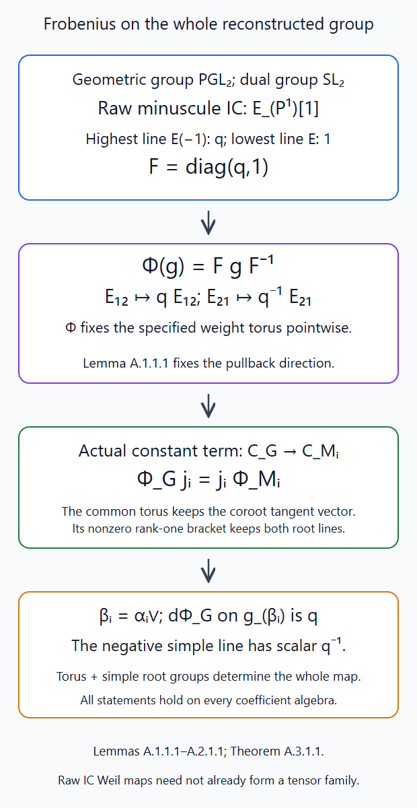
Lemmas A.1.1.1–A.2.1.1 retain the pullback direction and the raw eigenvalues \(q,1\). The group automorphism is conjugation by this operator. Compatibility with actual Levi constant term then gives the scalars \(q,q^{-1}\) on every simple root pair. Editable SVG source.

A.2. The root-line scalar is \(q\)
Lemma A.2.1.1. For every positive simple root \(\beta_i=\alpha_i^\vee\) of the dual group, \(d\Phi_G\) acts on its root line by \(q\), and on the negative root line by \(q^{-1}\). It is the identity on the torus Lie algebra.
Proof. First take the geometric group \(PGL_2\). Its minuscule IC is \(E_{\mathbf P^1}[1]\); its reconstructed dual group is \(SL_{2,E}\), by the full equivalence of Lesson 11, Theorem B.4.1.1. The highest and lowest weight spaces have characters \(\omega^\vee\) and \(-\omega^\vee\), respectively. The highest is the compact cohomology of the split open affine line and equals \(E(-1)\), with geometric Frobenius \(q\); the lowest is the point line \(E\), with Frobenius \(1\). These are the actual affine-line trace and projective-line Kummer comparisons, with the raw \([1]\) retained. In the basis ordered highest, lowest, \(F=\operatorname{diag}(q,1)\).
This two-dimensional representation is faithful for \(SL_2\). Lemma A.1.1.1 consequently identifies \(\Phi_{PGL_2}\) with conjugation by \(\operatorname{diag}(q,1)\) on that group. Direct multiplication scales \(E_{12}\) by \(q\) and \(E_{21}\) by \(q^{-1}\), and fixes diagonal matrices.
For any split rank-one geometric group \(M\), use its adjoint map \(M\to PGL_2\). Lesson 11, Theorem A.2.1.1 proves that the resulting proper one-point-fibre map on the Schubert support of \(\lambda=\alpha^\vee\) identifies its raw IC and its actual weight compact complexes with those of \(I_{2\omega^\vee}\). This map and the root coordinates in that proof are defined over \(\mathbf F_q\): the adjoint quotient preserves the pinned split root parameters, the integer loop exponents and their multiplication formulas. The unit, counit, proper-support composition and intermediate-extension comparisons therefore intertwine Frobenius. An inseparable comparison can multiply an orientation generator by a nonzero power of the ground characteristic; it still intertwines the operator, so does not change an eigenvalue.
The target \(I_{2\omega^\vee}\) has three one-dimensional weights, by A.2.1.1. Its positive raising operator joins both adjacent lines nontrivially, by the characteristic-zero rank-one module calculation. Equation (A.1.2) and the already computed target automorphism therefore make the ratios of consecutive eigenvalues \(q\). Its highest line is \(E(-2)\), with eigenvalue \(q^2\), by the split extremal affine chart in Lesson 11, Lemma B.1.1.1. Its three raw eigenvalues are thus \(q^2,q,1\).
The comparison transfers these eigenvalues to \(I_{\alpha^\vee}^M\). Its three labels are \(\alpha^\vee,0,-\alpha^\vee\), inside the original lattice. Its positive and negative root operators are nonzero; conjugation by the displayed Frobenius therefore scales them by \(q,q^{-1}\). Since the derivative of this representation is injective on each nonzero one-dimensional root line, equation (A.1.2) proves the same scalars for \(d\Phi_M\). This step retains a nonprimitive coroot and does not require lifting projective integral frames.
Now let \(M_i\) be the standard rank-one Levi of \(G\). The actual constant-term functor and the fibre-functor comparison \(\gamma:H_{M_i}\operatorname{CT}_{M_i}^G\to H_G\) are exact symmetric monoidal by Lesson 11, Theorems A.3.2.1 and A.4.1.1. Each comparison there consists of the represented parabolic correspondence, its actual hyperbolic unit/counit, component shifts, strict fusion extension and the displayed integer sign. All are defined over \(\mathbf F_q\). Field pullback identifies those correspondences and those maps, and equality off the diagonal extends by intermediate-extension uniqueness. In particular the square comparing their cohomology transports \(u_G,u_{M_i}\) commutes.
The all-test-algebra group homomorphism \(j_i:\widehat M_i\to\widehat G\) supplied by \(\gamma\) therefore satisfies \[ \Phi_Gj_i=j_i\Phi_{M_i}. \tag{A.2.1} \] This follows directly by inserting (A.1.3) in the \(\gamma\)-square and then taking inverses; it does not assume that raw IC Weil structures commute with constant term. Its restriction to the common weight torus is the identity, by Lesson 11, Theorem A.4.2.1.
Consequently \(dj_i\) takes the \(\pm\alpha_i^\vee\) root lines into the corresponding lines of \(\widehat G\). Both images are nonzero: if either were zero, their bracket would be zero, whereas their bracket in \(\widehat M_i\) is its nonzero coroot tangent vector, which \(dj_i\) carries to that same tangent vector in the common torus. All Lie algebras here are over characteristic-zero \(E\). Each map on those one-dimensional lines is thus an isomorphism. Equation (A.2.1) transfers \(q,q^{-1}\) to those simple lines of \(\widehat G\). Lemma A.1.1.1 already fixes the torus. \(\square\)
A.3. All weight Frobenius operators are scalars
Theorem A.3.1.1. Put \(d_\lambda=\langle2\rho_G,\lambda\rangle\) and \(h_\nu=\langle2\rho_G,\nu\rangle\). On the actual raw IC weight space, \[ F_\lambda\bigm|F_\nu(I_\lambda) =a^{d_\lambda+h_\nu}\operatorname{id} =q^{(d_\lambda+h_\nu)/2}\operatorname{id}. \tag{A.3.1} \] On \(\mathcal I_\lambda=I_\lambda(d_\lambda/2)\) it is \(a^{h_\nu}\operatorname{id}\). This is an equality of operators, including the assertion that no nontrivial unipotent part occurs. The canonical normalized Weil structures form an exact symmetric tensor lift of the geometric Satake heart. The result extends by actual scalar extension to every algebraic coefficient field containing \(a\).
Proof. Since \(2\rho_G\) is an integral character of \(T\), it is a cocharacter of the dual torus. Define \(t=(2\rho_G)(a)\in\widehat T(E)\). Thus \[ \nu(t)=a^{h_\nu},\qquad \beta_i(t)=a^2=q. \tag{A.3.2} \] Lemma A.2.1.1 identifies the differentials of \(\Phi_G\) and \(\operatorname{Ad}(t)\) on the torus and all simple positive and negative root lines. We check the actual group maps.
Choose a faithful finite-dimensional linear representation of the split dual group, as supplied by its affine finite-type reconstruction in Lessons 9–11. For a root parametrization \(x_i:\mathbf G_a\to\widehat G\), let \(N\) be its derivative in that representation. Every polynomial group homomorphism \(A:\mathbf G_a\to GL(V)\) satisfies \(A(s+r)=A(s)A(r)\). Differentiate in \(r\) at zero to obtain \(A'(s)=A(s)N\), with \(A(0)=1\). Coefficient comparison in characteristic zero gives \(A(s)=\sum_{n\ge0}s^nN^n/n!\); since \(A\) is polynomial this sum is finite. Applied to \(\Phi_Gx_i\), whose derivative is \(qN\), it gives \(\Phi_Gx_i(s)=x_i(qs)\). For the negative simple parameter it gives \(x_{-i}(q^{-1}s)\). These are polynomial identities and hold over every coefficient algebra.
The two automorphisms therefore agree on the torus and all simple root groups. They agree on the rank-one Weyl words made from these groups. Conjugation by those words gives every root group from a simple positive or negative one, by the proved root and normalizer construction of Root data, Weyl chambers and the Bruhat decomposition, §§4–5 and The isomorphism theorem and construction of split groups, §§1–2. The open Bruhat cell is a product of these root groups and the torus. The fppf word-generation argument in The isomorphism theorem and construction of split groups, Lemma 4.1 shows that these cell points generate the entire group over arbitrary test algebras locally in the fppf topology. Equality there descends, since the target is a group scheme. Thus \[ \Phi_G=\operatorname{Ad}(t) \tag{A.3.3} \] as group-scheme automorphisms; no finite central subgroup has been discarded.
For \(V_\lambda=H_G(I_\lambda)\), equations (A.1.2) and (A.3.3) show that \(\rho_\lambda(t)^{-1}F_\lambda\) commutes with the full group. The module is absolutely simple by Lesson 11, Theorem B.4.1.1, so that commutant is \(E\): it is the endomorphism algebra of its actual simple IC under the full faithful equivalence. Hence \(F_\lambda=c_\lambda\rho_\lambda(t)\).
To determine the scalar, use the highest weight. The split extremal chart of Lesson 11, Lemma B.1.1.1 is \(\mathbf A^{d_\lambda}\) over \(\mathbf F_q\), not merely an affine space after an unspecified extension. Its ordered root coefficients and integer loop exponents are all defined over \(\mathbf F_q\). The raw IC restricts there to \(E[d_\lambda]\). The iterated actual affine-line compact trace gives the highest line \(E(-d_\lambda)\), whose geometric Frobenius is \(q^{d_\lambda}=a^{2d_\lambda}\). Meanwhile \(t\) acts on that line by \(a^{d_\lambda}\). Therefore \(c_\lambda=a^{d_\lambda}\), proving (A.3.1). Every weight differs from \(\lambda\) by integral coroots, so \(d_\lambda+h_\nu\) is even. Multiplying by the half-twist eigenvalue \(a^{-d_\lambda}\) gives the normalized assertion.
Full-heart semisimplicity gives the canonical evaluation decomposition \(P=\bigoplus_\lambda I_\lambda\otimes_E\operatorname{Hom}(I_\lambda,P)\), with finite support in \(\lambda\). Pullback is \(E\)-linear. Applying each normalized IC Weil map and the identity on its displayed multiplicity space consequently defines a natural normalized Weil map \(\alpha_P^0:\sigma^*P\to P\), without choosing bases. Its total cohomology operator is \(\rho_P(t)\) by the proved simple calculation.
For \(P*Q\), the operator supplied by the tensor product of these Weil maps is, under the actual monoidal \(H\)-comparison, \[ \rho_P(t)\otimes\rho_Q(t)=\rho_{P*Q}(t). \] This is also the operator of the canonical normalized map \(\alpha_{P*Q}^0\). Since \(u\) is monoidal, the two original sheaf maps have identical images under \(H\). Faithfulness detects their equality. The unit and symmetry comparisons are likewise the original ones transported by \(\sigma^*\), so are Weil morphisms. Thus the normalized family is a genuine symmetric tensor lift. This says nothing about an arbitrary additional Weil action on the multiplicity spaces of a general Weil object.
Finally every finite tensor diagram and its actual maps extend by Lesson 11, Theorems D.3.1.1 and D.4.2.1. Scalar extension carries each operator equality and each normalized Weil tensor map to the algebraic coefficient field. \(\square\)
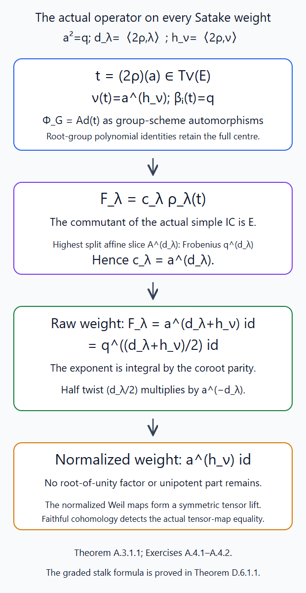
Theorem A.3.1.1 first identifies the entire group automorphism, then uses the simple IC commutant and the highest split affine slice. The raw operator is \(a^{d_\lambda+h_\nu}\); its half twist gives \(a^{h_\nu}\). Faithful cohomology proves the normalized Weil maps are tensor maps before passing to functions. Editable SVG source.

A.4. Two normalization checks
Exercise A.4.1 (intermediate). Explain why the raw IC Weil structures are not already a tensor family in the \(GL_2\) product, and compute the normalized operators on its three IC summands.
Solution. The actual raw decomposition is \(I_{10}*I_{10}=I_{20}\oplus I_{11}(-1)\). Its central summand has Frobenius \(q\), whereas the canonical raw point \(I_{11}\) has Frobenius \(1\). They are the same geometric point object with different Weil structures. The two half twists give a total \((1)\), so the normalized decomposition is \(\mathcal I_{20}\oplus\mathcal I_{11}\). On \(\mathcal I_{10}\), its two weights have operators \(a,a^{-1}\). On \(\mathcal I_{20}\), the three weights have operators \(q,1,q^{-1}\); on the normalized point the operator is \(1\). Thus the tensor-square has \(q,1,1,q^{-1}\), exactly the normalized sum.
Exercise A.4.2 (advanced). For the geometric group \(PGL_2\), keep the nonprimitive dual root and check the group automorphism, the central subgroup and the normalized minuscule operators.
Solution. Its dual is \(SL_2\), with character lattice generated by \(\omega^\vee\), root \(2\omega^\vee\), and centre \(\mu_2=D(\mathbf Z\omega^\vee/\mathbf Z(2\omega^\vee))\). The element \(t\) is \(\operatorname{diag}(a,a^{-1})\); its root value is \(a^2=q\). Conjugation scales \(E_{12}\) by \(q\) and \(E_{21}\) by \(q^{-1}\), and fixes the entire torus, including \(\mu_2\). The raw minuscule operators on the highest and lowest lines are \(q,1\), and its half twist multiplies them by \(a^{-1}\), giving \(a,a^{-1}\). The scalar \(a\) between the raw operator and \(\rho(t)\) is essential. Replacing the root \(2\omega^\vee\) by its primitive ray would lose both this root value and the full centre.
Appendix B. Compact trace and the full spherical algebra
B.0. Rational semi-infinite points
Lemma B.0.1.1 (rational semi-infinite points). The rational points of the geometric semi-infinite orbit \(S_\nu\) are exactly \(N(\mathbf F_q((t)))t^\nu K/K\). On a bounded Schubert support this identifies the finite-field stalk sum with the coset sum in Lesson 1, Proposition 4.1.
Proof. Order the positive roots by increasing height, refining ties arbitrarily. The proved ordered root coordinates and commutator formulas make the height filtration triangular: a commutator of coordinates of heights \(r,s\) has height at least \(r+s\). Put \(k_\alpha=\langle\alpha,\nu\rangle\). The stabilizer is \[ H_\nu=t^\nu N(\overline{\mathbf F}_q[[t]])t^{-\nu}; \] its ordered coordinates are \(t^{k_\alpha}\overline{\mathbf F}_q[[t]]\). These thresholds respect commutators because \(k_{\alpha+\beta}=k_\alpha+k_\beta\). Right multiplication by its height-\(r\) coordinates changes those height-\(r\) coordinates additively and changes only larger heights otherwise. Successively remove the terms of degree at least \(k_\alpha\) in each coordinate. Every right coset consequently has a representative whose \(\alpha\)-coordinate is a finite Laurent polynomial of degrees strictly below \(k_\alpha\).
This representative is unique. At the smallest height where two such representatives differ, the coordinate of their quotient is the difference of the corresponding Laurent polynomials. Membership of that quotient in \(H_\nu\) puts the difference in \(t^{k_\alpha}\overline{\mathbf F}_q[[t]]\), while its degrees are strictly smaller; hence it is zero. Induction over the heights proves equality of every coordinate. All operations and thresholds are defined over \(\mathbf F_q\), so Frobenius fixes a coset precisely when it fixes every coefficient of this unique representative. Such coefficients lie in \(\mathbf F_q\). This proves the assertion on geometric points and therefore on rational points of the reduced orbit. A bounded Schubert intersection is finite type; its rational point set is finite. Applying the same normal form there gives the claimed equality of sums. \(\square\)
B.1. Compact support with actual rational coefficients
Theorem B.1.1.1. Let \(X_0/\mathbf F_q\) be separated of finite type, \(X=X_0\times\overline{\mathbf F}_q\), and let \(K_0\) be a bounded constructible actual rational-adic \(E\)-complex, with finite \(E/\mathbf Q_\ell\) and \(\ell\nmid q\). Use its descended geometric Frobenius correspondence. Then \[ \sum_i(-1)^i\operatorname{Tr} (F;H_c^i(X,K)) =\sum_{x\in X_0(\mathbf F_q)} \sum_i(-1)^i\operatorname{Tr} (F_x;H^i(K_{\bar x})). \tag{B.1.1} \] Every group in the cohomological sum is finite dimensional and only finitely many are nonzero. The compact image here is the actual rational proper-support functor of Lesson 5, Theorem O.4.2.1. In particular it applies to the supported semi-infinite IC intersection in Theorem 5.1.
Proof. We first close the inherited finite constructibility input in the all-dimensional trace argument. Constructible complexes on algebraic varieties, Proposition3.2 proves bounded proper-support constructibility, finite geometric stalks and the fibre bound for every finite ring killed by a power of \(\ell\). It explicitly proves the result from curve finiteness and finite root-free affine projections, without importing its companion's general constructibility assertion. This includes \(O_n=O/\varpi^n\), where \(O\) is the integer ring of \(E\). Thus the finite central constructibility premise declared in §1 of The trace formula in all dimensions is a proved programme input at precisely the finite rings needed here.
Here is the resulting finite trace induction, including its coefficient class. Suppose \(C_0\) is bounded constructible over \(O_n\), with Tor amplitude \([a,b]\). For a separated finite-type \(f_0:Y_0\to Z_0\), the just proved finite constructibility gives bounded constructible \(Rf_{0!}C_0\). For any right \(O_n\)-module \(M\), its geometric stalk tensor is \[ M\otimes_{O_n}^{\mathbf L} R\Gamma_c(Y_{\bar z},C_{\bar z}) =R\Gamma_c(Y_{\bar z}, M\otimes_{O_n}^{\mathbf L}C_{\bar z}). \tag{B.1.2} \] This is the actual coefficient projection map, proved for arbitrary \(M\) by the bounded acyclic resolution and finite cohomological-dimension argument in Traces of perfect complexes and Lefschetz numbers, Theorem4.3. Its finiteness premise is now Proposition3.2 above; its dimension bound for arbitrary prime-to-characteristic torsion is the compact-support dimension theorem used there. The spectral sequence on the right puts its degrees in \([a,b+2c]\), if the geometric fibre dimensions are at most \(c\). This proves finite Tor amplitude of \(Rf_{0!}C_0\); the perfectness criterion of that same theorem applies at a geometric point.
For dimension at most one, The trace formula for curves, Theorem1.1 proves the finite trace formula, including singular and nonreduced schemes and this perfect finite coefficient scope. Its smooth projective completion input has a programme proof in Constructible complexes on algebraic varieties, §§O.1, P.3 and AG.1–AG.4: normalize the projective closure of a smooth affine curve, using the proved finite normalization; normal curve local rings are DVRs and, over a perfect field, the proved Jacobian argument makes their points smooth. The original smooth open is unchanged. Pullback of the hyperplane bundle under the finite normalization is ample by its affine section opens, so a very ample power makes this proper completion projective. The finite boundary is retained. Over \(\mathbf F_q\), the perfect closure in §O.1 is already the ground field, so these completion maps are defined over \(\mathbf F_q\).
For higher dimension, partition the scheme into affine opens in successive closed remainders and use the actual Frobenius-preserved compact localization filtration. A dimension-\(d\) affine piece has a finite map to \(\mathbf A^d_{\mathbf F_q}\), by the finite-field monic-variable proof of Lemma3.2 in the all-dimensional trace lesson. Projection onto \(\mathbf A^{d-1}\) has geometric fibres of dimension at most one. Apply induction to its proper-support image, whose constructible finite-Tor scope was just checked. Compact base change and composition identify its fibre operator with the original fibre's geometric Frobenius operator; this actual operator comparison is Lemma2.1 of that lesson, constructed from the descended coefficient map. The curve formula on each rational fibre then gives \[ \operatorname{Tr}(F;R\Gamma_c(Y,C)) =\sum_{z\in\mathbf A^{d-1}(\mathbf F_q)} \sum_{y\in Y_{0,z}(\mathbf F_q)} \operatorname{Tr}(F_y;C_{\bar y}). \] The rational fibres partition the rational points. Trace additivity along the affine-piece filtration proves the formula for the original scheme. This reconstructs Theorem4.1 of the all-dimensional trace lesson with its finite constructibility premise supplied by a programme proof.
Next take an integral lisse lattice \(L_0\) with finite free \(O\)-stalks. Its finite quotients \(L_{0,n}\) are finite locally free over \(O_n\), so have Tor amplitude zero. Put \(C_n=R\Gamma_c(X,L_n)\). The preceding proof gives perfect \(O_n\)-complexes and their finite trace identities. Their actual coefficient projection maps give \[ C_{n+1}\otimes_{O_{n+1}}^{\mathbf L}O_n=C_n. \] These maps preserve the descended Frobenius operators. L-adic sheaves and their cohomology, Theorem6.1 constructs a single bounded finite free \(O\)-complex for this compatible system and its endomorphism. The completed sections and proper-support reduction comparisons of Lesson 5, Lemma M.4.1.1 and Theorem O.4.2.1 identify its derived limit with the actual integral compact-support complex; the coefficient comparison (O.4.2.2) in Lesson 5, Theorem O.4.2.1 and Lemma N.1.1.1 identify its rationalization with the actual \(E\)-compact image. No discrete constant-\(E\) replacement is made.
The perfect-complex trace on this finite free \(O\)-model reduces to the finite-level trace for every \(n\). The rational point set is finite, and each local trace is the reduction of its finite free \(O\)-stalk operator. Separatedness \(\bigcap_n\varpi^nO=0\) therefore gives equality of the two integral traces. Tensoring with \(E\) gives (B.1.1) for \(L_0\otimes_OE\); the finite free model also gives bounded finite-dimensional cohomology. The equality concerns traces of compatible matrices, not an interchange of an unbounded sum with a limit.
For general \(K_0\), refine its finite cohomology stratification to smooth connected locally closed schemes over \(\mathbf F_q\). The perfect ground field gives a dense smooth open in every reduced component; delete component intersections, then repeat on the smaller-dimensional complement. This is a finite process. Nilpotents do not change the coefficient sites. On such a smooth stratum, the actual rational lisse coefficient corresponds to a continuous representation of the profinite étale fundamental group by The pro-étale site and l-adic complexes, Theorem7.10 and Corollary7.11. Its image is compact. Choose a basis lattice \(\Lambda\subset E^r\). Compactness bounds every translated lattice inside \(\varpi^{-b}\Lambda\). The sum of its translates is consequently a finite \(O\)-module between \(\Lambda\) and \(\varpi^{-b}\Lambda\), invariant under the whole arithmetic fundamental group. It is torsion-free and spans \(E^r\), so is an integral lisse lattice defined on this stratum over \(\mathbf F_q\). In particular it retains Frobenius, not just the geometric local system.
Apply the lattice case to every cohomology local system on every stratum. The finite truncation filtration supplies the ordinary cohomological signs. Arrange the finite strata as opens in closed remainders and apply compact localization. All restrictions, truncation maps and support maps are defined over \(\mathbf F_q\), so their filtrations are Frobenius-preserved. Additivity of alternating traces from Lemma 1.1 proves (B.1.1) for their actual extension complex \(K_0\), without descending its attaching maps to a single integral lattice. The finite filtrations also give bounded finite cohomology.
For \(\mathcal I_\lambda\), the constant open \(E\)-coefficient, its intermediate extension and the supported intersection have \(\mathbf F_q\)-models. The half-twist line also does: \(a\) is an \(\ell\)-adic unit, and the homomorphism \(\mathbf Z\to O^\times\) sending \(1\) to \(a^{-1}\) extends continuously to \(\widehat{\mathbf Z}\). Indeed in every finite quotient of \(O^\times\) its image is finite cyclic, so the homomorphism factors through the corresponding finite cyclic quotient of \(\widehat{\mathbf Z}\); these maps are compatible. Thus the normalized Weil coefficient is a genuine continuous finite-field coefficient. Its supported restriction is bounded constructible by the actual pullback and closed-support operations. Theorem B.1.1.1 applies and proves the compact trace assertion in Theorem 5.1. \(\square\)
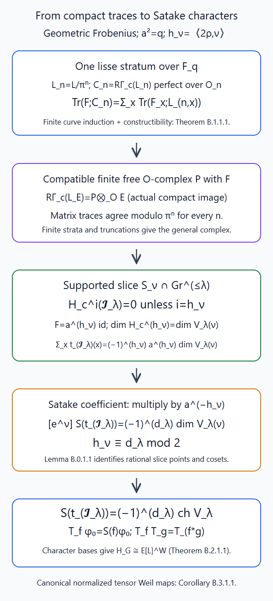
Theorems B.1.1.1–B.2.1.1 keep the complete coefficient passage, the sign from degree \(h_\nu\), and the measure factor \(a^{-h_\nu}\). Lemma B.0.1.1 identifies the finite-field points with the required cosets. The rank-one induced module proves multiplication before Corollary B.3.1.1 deduces the normalized IC convolution identity. Editable SVG source. The normalization can also be compared with Frenkel's free lectures, §5.3, cited in §5.

B.2. The general Satake character formula and the algebra map
Theorem B.2.1.1. For every dominant \(\lambda\), \[ \mathcal S(t_{\mathcal I_\lambda}) =(-1)^{d_\lambda}\operatorname{ch}V_\lambda. \tag{B.2.1} \] The transform of Lesson 1 is an algebra isomorphism from the spherical Hecke algebra to \(E[X_*(T)]^{W_G}\), with the positive square root \(a\) and its stated normalization.
Proof. The actual compact concentration theorem, the full Satake weight identification, Theorem A.3.1.1 and Theorem B.1.1.1 supply the three assertions used in Theorem 5.1. Its coefficient calculation gives (B.2.1). In particular the sign is retained; it comes from \(h_\nu\equiv d_\lambda\pmod2\).
We prove multiplicativity directly from the Iwasawa partition, before using a function-sheaf convolution comparison. Put \(\Gamma=G(\mathbf F_q((t)))\), \(K=G(\mathbf F_q[[t]])\), \(A=E[L]\), and write \(e^\nu\) for its group-algebra basis. The split Iwasawa decomposition and its unique coweight from Lesson 1, §§2–4 identify \(\Gamma=B(\mathbf F_q((t)))K\). If \(b=nt^\nu t_0\), with \(n\in N(\mathbf F_q((t)))\) and \(t_0\in T(\mathbf F_q[[t]])\), put \(\eta(b)=a^{-h_\nu}e^\nu\). This is multiplicative: the torus normalizes \(N\), and the two torus valuations add. It is trivial on \(B\cap K\).
Let \(\mathcal V\) be the \(A\)-module of functions \(\phi:\Gamma\to A\) satisfying \(\phi(bg)=\eta(b)\phi(g)\). Its right-\(K\)-invariant part is free of rank one. The normalized generator is \(\phi_0(bk)=\eta(b)\). It is well-defined because two such expressions differ by an element of \(B\cap K\); Iwasawa shows that every value of a right-\(K\)-invariant function is determined by its value at \(1\). No analytic representation theorem is used.
For a spherical function \(f\) and \(\phi\in\mathcal V^K\), set \[ (T_f\phi)(x)=\sum_{gK\in\Gamma/K} f(g)\phi(xg). \tag{B.2.2} \] The sum is finite by the finite-jet Cartan coset calculation of Lesson 1. It is independent of the representatives because \(\phi\) is right-\(K\)-invariant. Left \(B\)-equivariance follows by pulling \(\eta(b)\) outside the sum. Left \(K\)-invariance of \(f\), by replacing \(g\) with \(k^{-1}g\), makes the output right-\(K\)-invariant. Thus \(T_f\) acts by a scalar on this rank-one module. Evaluation at \(1\), followed by the Iwasawa partition, gives exactly \[ (T_f\phi_0)(1) =\sum_\nu a^{-h_\nu} \sum_{gK\in N(\mathbf F_q((t)))t^\nu K/K} f(g)\,e^\nu =\mathcal S(f). \tag{B.2.3} \] This is Lesson 1's normalized coefficient formula. Lemma B.0.1.1 identifies this sum with the finite-field semi-infinite sum used in Lesson 12 (5.2).
For spherical \(f,h\), expand \(T_fT_h\) using the two finite sums. Regroup the products \(gzK\). The coefficient of a fixed coset \(yK\) is \(\sum_{gK}f(g)h(g^{-1}y)\), precisely the convolution with \(\operatorname{vol}K=1\). Bi-\(K\)-invariance makes each representative change harmless. Hence \(T_fT_h=T_{f*h}\), and their scalars give \(\mathcal S(f*h)=\mathcal S(f)\mathcal S(h)\).
The trace functions form a basis by the finite triangular calculation of Lesson 12 §1. The characters \(V_\lambda\) form a basis of \(E[L]^{W_G}\): orbit sums form a basis, and the highest-weight calculation gives \(\operatorname{ch}V_\lambda\) its orbit sum with coefficient1 and only smaller dominant labels. Below each dominant label there are finitely many labels in the same component, by the proved root-order bound of Lesson 4, §3. Finite triangular inversion gives both spanning and independence. Formula (B.2.1) sends one basis to the other, with invertible signs. It therefore proves that \(\mathcal S\) has exactly this invariant image and is bijective onto it. The multiplicative calculation completes the algebra isomorphism. \(\square\)
B.3. Convolution of normalized IC traces
Corollary B.3.1.1. For dominant \(\lambda,\mu\), \[ t_{\mathcal I_\lambda*\mathcal I_\mu} =t_{\mathcal I_\lambda}*t_{\mathcal I_\mu} =\sum_\tau \dim\operatorname{Hom}_{\widehat G} (V_\tau,V_\lambda\otimes V_\mu)\, t_{\mathcal I_\tau}. \tag{B.3.1} \] The decomposition in the first expression has the canonical normalized Weil structure. Its finite multiplicity spaces have Frobenius1. Raw IC multiplicity twists must still be retained separately.
Proof. Full geometric Satake and semisimplicity give the finite IC decomposition with these representation multiplicities. Theorem A.3.1.1 proves equality of the tensor Weil map with the canonical normalized map on that same underlying object. Its evaluation decomposition is therefore a Weil decomposition with identity on its multiplicity spaces. Taking stalk traces gives the first expression equal to the displayed sum.
Every nonzero constituent is in the component \(\lambda+\mu\), since convolution adds the component labels. Thus \(d_\tau\equiv d_\lambda+d_\mu\pmod2\), by the even pairing of \(2\rho_G\) with each coroot. Apply Theorem B.2.1.1 to the sum: its transform is \[ (-1)^{d_\lambda+d_\mu} \operatorname{ch}(V_\lambda\otimes V_\mu) =\mathcal S(t_{\mathcal I_\lambda}) \mathcal S(t_{\mathcal I_\mu}). \] The algebra homomorphism and injectivity just proved identify it with the convolution of the two functions. This establishes the function-sheaf convolution identity for these IC objects without assuming a general rational lifting theorem for chain frames. \(\square\)
B.4. Trace and convolution exercises
Exercise B.4.1 (intermediate). For the geometric group \(PGL_2\), compute the compact trace of the normalized minuscule \(\mathcal I_{\omega^\vee}=E_{\mathbf P^1}[1](1/2)\). Obtain its two Satake coefficients from the open affine line and the closed point, keeping their signs.
Solution. The raw projective-line compact cohomology has \(E\) in degree \(-1\) and \(E(-1)\) in degree \(1\). Its half twist gives geometric Frobenius \(a^{-1},a\), and both degrees are odd. The compact trace is therefore \(-a^{-1}-a\). At each of the \(q+1\) rational points the normalized stalk is \(E[1](1/2)\), with trace \(-a^{-1}\); their sum is \(-(q+1)a^{-1}=-a^{-1}-a\). The highest semi-infinite intersection is the affine line with \(q\) rational points and \(h_{\omega^\vee}=1\). Its normalized Satake coefficient is \(a^{-1}q(-a^{-1})=-1\). The lowest intersection is a point with \(h_{-\omega^\vee}=-1\), and its coefficient is \(a(-a^{-1})=-1\). Thus \(\mathcal S(t_{\mathcal I_{\omega^\vee}})=-(e^{\omega^\vee}+e^{-\omega^\vee})\), as the odd dimension requires.
Exercise B.4.2 (advanced). Give \(P=\mathcal I_\lambda\otimes_E M\) and \(Q=\mathcal I_\mu\otimes_E N\) Weil maps with respective multiplicity operators \(B\) and \(C\). Deduce their convolution trace identity from B.3.1.1 and determine the Weil operator on each IC multiplicity space.
Solution. Their trace functions are \(\operatorname{Tr}(B)t_{\mathcal I_\lambda}\) and \(\operatorname{Tr}(C)t_{\mathcal I_\mu}\), by Lemma1.1. In the canonical IC decomposition of \(\mathcal I_\lambda*\mathcal I_\mu\), its representation-theoretic multiplicity space has the identity Weil operator by B.3.1.1. The extra tensor multiplicity has operator \(B\otimes C\), so the full operator on the \(\tau\)-multiplicity space is \(1\otimes B\otimes C\). Its trace is \(N_{\lambda\mu}^\tau\operatorname{Tr}(B)\operatorname{Tr}(C)\), as a tensor product basis verifies even for nonsemisimple operators. B.3.1.1 and bilinearity of function convolution therefore give \(t_{P*Q}=t_P*t_Q\). Identity multiplicity Frobenius in the normalized IC theorem refers to the canonical IC tensor family; an additional given Weil operator is retained.
Appendix C. Split Tate Frobenius on IC stalks and costalks
C.1. Cycle classes remove the affine-paving extension ambiguity
Lemma C.1.1.1. Let \(Y_0/\mathbf F_q\) be proper of finite type with a finite closed filtration whose differences are split affine spaces \(\mathbf A^{e_r}_{\mathbf F_q}\). Nilpotents are allowed. For finite \(E/\mathbf Q_\ell\), \(\ell\nmid q\), \[ H^{2j+1}(Y,E)=0,\qquad H^{2j}(Y,E)=E(-j)^{\,c_j}, \tag{C.1.1} \] as actual Frobenius modules, where \(c_j\) is the number of cells of dimension \(j\). In particular geometric Frobenius is exactly \(q^j\operatorname{id}\), including when \(c_j>1\).
Proof. Use the actual structural dualizing complex \(\Omega_Z=a_Z^!E\) from Lesson 5, Theorems P.2.4.1 and P.3.4.1, and define \[ \operatorname{BM}_m(Z,E)=H^{-m}(Z,\Omega_Z). \tag{C.1.2} \] The actual dual exchange of Lesson 5, Theorem P.3.3.1, applied to the structure map and the constant coefficient, identifies this with the linear dual of \(H_c^m(Z,E)\), compatibly with the contragredient geometric Frobenius action. Lesson 5, Lemma Q.4.1.1 and its proof bound \(H_c^m(Z,E)\) by \(0\le m\le2\dim Z\). Thus \(\operatorname{BM}_m(Z,E)=0\) for \(m>2\dim Z\).
For an open affine cell \(U=\mathbf A^e\), the specified smooth orientation and iterated affine-line unit give \(\Omega_U=E(e)[2e]\) and \(R\Gamma(U,E)=E\). Its sole Borel–Moore group is consequently \[ \operatorname{BM}_{2e}(U,E)=E(e), \tag{C.1.3} \] with geometric Frobenius \(q^{-e}\). This retains the smooth counit normalization, not just the dimension of the group.
Let \(C\) be the reduced closure of this cell in the proper scheme containing it. It is integral of dimension \(e\), and \(D=C\setminus U\) has dimension at most \(e-1\), by the proved finite-type dimension formula. Dualizing the ordinary constant-coefficient localization triangle gives \[ Ri_*\Omega_D\longrightarrow\Omega_C \longrightarrow Rj_*\Omega_U. \tag{C.1.4} \] The two groups \(\operatorname{BM}_{2e}(D,E)\) and \(\operatorname{BM}_{2e-1}(D,E)\) vanish by the dimension bound. Restriction is therefore an isomorphism \[ \operatorname{BM}_{2e}(C,E) \xrightarrow{\sim}\operatorname{BM}_{2e}(U,E)=E(e). \tag{C.1.5} \] Define the cell-closure fundamental class as its inverse map from \(E(e)\). The closure, boundary, orientation, triangle and inverse are all defined over \(\mathbf F_q\); hence this is a Frobenius-compatible map. Its proper push to the ambient scheme is the actual counit \(Ri_*\Omega_C\to\Omega_Y\), obtained from exceptional composition for the closed immersion.
Apply (C.1.4) to each stage of the closed affine paving. Induction gives zero odd Borel–Moore groups and short exact sequences \[ 0\longrightarrow\operatorname{BM}_{2j}(Y_{r-1},E) \longrightarrow\operatorname{BM}_{2j}(Y_r,E) \longrightarrow\operatorname{BM}_{2j}(\mathbf A^{e_r},E) \longrightarrow0. \tag{C.1.6} \] When \(e_r=j\), the proper image of that cell's closure class restricts to the generator of the right-hand \(E(j)\). When \(e_r\ne j\), the right-hand group is zero. The classes for all dimension-\(j\) cells thus give a basis of \(\operatorname{BM}_{2j}(Y,E)\). Each is the image of the same Frobenius line \(E(j)\). Frobenius is consequently \(q^{-j}\operatorname{id}\) on the whole group, not merely on its associated graded. Duality gives (C.1.1), because \(Y\) is proper. Nilpotent invariance of the actual coefficient sites and proper-support images applies throughout. No purity theorem for a singular closed immersion is used. \(\square\)
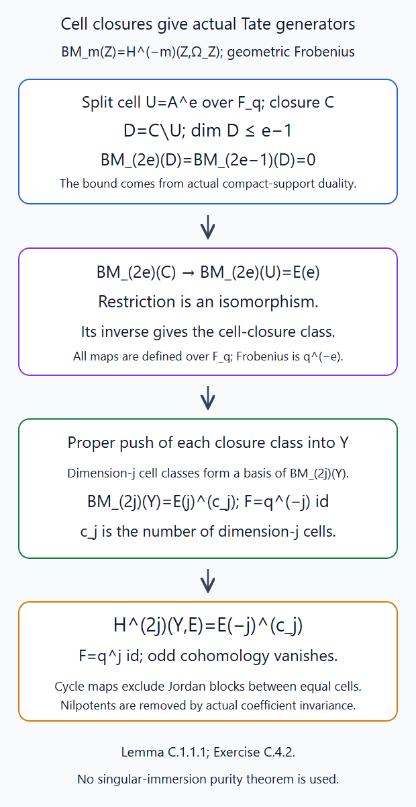
Lemma C.1.1.1 constructs each class by the actual supported triangle and the dimension bound. The resulting basis consists of maps from \(E(j)\); it proves the scalar operator on the whole group. Editable SVG source. The actual duality and affine trace proofs are in Lesson 5, Appendices P–Q; the free parity framework is Juteau–Mautner–Williamson, cited below.

C.2. Compressing a scalar Frobenius operator
Lemma C.2.1.1. Let \(I=j_{!*}E[d]\) be the actual simple IC on an \(\mathbf F_q\)-support, and let \(B\) have its descended Weil map. Suppose underlying derived maps \[ I\xrightarrow{u}B\xrightarrow{v}I,\qquad vu=1 \tag{C.2.1} \] both restrict to the identity on the dense open, where \(B\) also restricts to \(E[d]\) with the identity coefficient Weil map. At an \(\mathbf F_q\)-point \(x\), if Frobenius on \(H^i(B_{\bar x})\) is the scalar \(b_i\), then its canonical raw action on \(H^i(I_{\bar x})\) is exactly \(b_i\operatorname{id}\). The maps \(u,v\) are not required to be Weil maps.
Proof. Write \(\sigma^*\) for the geometric-field pullback and \(\alpha_B:\sigma^*B\to B\) for its actual Weil map. Its restriction on the displayed open is the identity on the raw constant coefficient. The composite \[ v\alpha_B\sigma^*u:\sigma^*I\longrightarrow I \tag{C.2.2} \] has the same dense-open restriction as the canonical raw IC Weil map \(\alpha_I\). Both source and target are perverse intermediate extensions. A morphism between them with zero open restriction has boundary-supported image, which their intermediate-extension characterization excludes. Thus (C.2.2) is exactly \(\alpha_I\).
At the rational point, field pullback and the point restriction have their canonical cohomology transport \(\tau_P:H(i_x^*\sigma^*P)\to H(i_x^*P)\). To construct it, the rational-point square has \(\sigma_Xi_x=i_x\sigma_S\), with \(S=\operatorname{Spec}\overline{\mathbf F}_q\). Actual pullback composition gives \(i_x^*\sigma_X^*=\sigma_S^*i_x^*\). The coefficient category on this geometric field point is the actual coefficient-module category, and field pullback there is canonically the identity, preserving that coefficient action. This supplies the displayed transport, naturally for all underlying derived maps; it does not assert that a geometric map descends to the finite field. The stalk version of the transport in A.1.1.1 has \[ F_P=H(\alpha_P)\tau_P^{-1},\qquad \tau_BH(\sigma^*u)=H(u)\tau_I. \tag{C.2.3} \] Substitution of (C.2.2) therefore gives \[ F_I=H(v)F_BH(u). \tag{C.2.4} \] In degree \(i\), this is \(b_iH^i(v)H^i(u)=b_i\operatorname{id}\), by (C.2.1). Naturality of the field transport is essential; this is not an assertion that the two underlying maps intertwine Frobenius separately. The same argument works after a common Weil twist. \(\square\)
C.3. All IC stalks have split Tate Frobenius
Theorem C.3.1.1. For every dominant \(\lambda\) and every spherical label \(\mu\) in its support, the actual raw IC stalk at \(t^\mu\) has \[ H^i(i_\mu^*I_\lambda)= E\bigl(-(i+d_\lambda)/2\bigr)^{\,b_{\lambda\mu,i}}. \tag{C.3.1} \] It vanishes if \(i+d_\lambda\) is odd. The equality is one of actual Frobenius modules, so every nonzero operator is \(q^{(i+d_\lambda)/2}\operatorname{id}\). The normalized IC stalk has operator \(a^i\operatorname{id}\) in degree \(i\). The raw costalk has the same scalar formula in its own degree, and the normalized costalk has scalar \(a^i\). These statements extend by actual scalar extension to algebraic coefficient fields containing \(a\).
Proof. Use the rootwise resolution \(f_\lambda:\mathcal B_\lambda\to Z_\lambda\) and \(B_\lambda=Rf_{\lambda*}E[d_\lambda]\) of Lesson 11, Lemma C.2.1.1. Its wall charts, integer root exponents, Weyl representatives, root actions and boundary filtrations are defined over \(\mathbf F_q\). In that proof's fibre induction at the rational endpoint \(t^\mu\), the closed/open pieces are the earlier fibre and its product with a split affine line. The auxiliary flag paving uses the split Borel selected by the signs of \(\mu+\varepsilon\gamma\); all its root subgroups and representatives are defined over \(\mathbf F_q\). It therefore gives a closed paving of the reduced proper fibre by split \(\mathbf F_q\)-affine cells, including in characteristic two.
Lesson 5, Theorem O.4.1.1, with its descended Frobenius operator, identifies \[ H^i(i_\mu^*B_\lambda) =H^{i+d_\lambda}(f_\lambda^{-1}(t^\mu),E). \tag{C.3.2} \] Lemma C.1.1.1 makes its Frobenius exactly \(q^{(i+d_\lambda)/2}\) when this degree is even, and makes it zero when the degree is odd. This is where the cell-closure cycle classes eliminate a possible unipotent extension between equal-dimensional cells.
Full geometric IC parity is already proved in Lesson 11, Theorem C.4.1.1. Lesson 11, Corollary C.4.2.1 consequently supplies the actual underlying derived maps (C.2.1) from that same resolution image, with both dense restrictions the identity. Apply Lemma C.2.1.1. It transfers the displayed scalar in each stalk degree to the canonical raw IC Weil action. In an odd resolution degree the stalk is a retract of zero. Thus (C.3.1) follows. Continuity and density of geometric Frobenius in the finite-field Galois group identify the scalar module with the displayed Tate line; all exponents are integers. The half twist multiplies its eigenvalue by \(a^{-d_\lambda}\), yielding \(a^i\).
The actual smooth orientation on the open orbit identifies the raw dual there with \(E(d_\lambda)[d_\lambda]\), compatibly with its Frobenius correspondence. Dual exchange and intermediate-extension uniqueness give the Weil identity \(DI_\lambda=I_\lambda(d_\lambda)\), so \(D\mathcal I_\lambda=\mathcal I_\lambda\). Point dual exchange consequently identifies the normalized costalk group in degree \(i\) with the dual of the normalized stalk group in degree \(-i\). Its contragredient scalar is \((a^{-i})^{-1}=a^i\). Removing the half twist gives the raw costalk scalar \(a^{i+d_\lambda}=q^{(i+d_\lambda)/2}\). Finally Lesson 11, Theorem D.3.1.1 carries these actual stalk/costalk and operator maps through algebraic scalar extension. \(\square\)
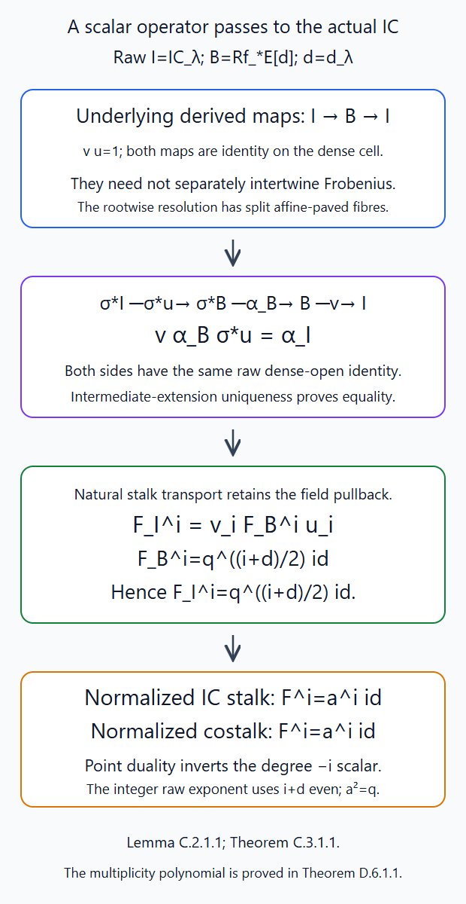
Lemma C.2.1.1 uses the dense-open identity and natural field transport to prove the compression formula. Theorem C.3.1.1 then identifies every raw and normalized stalk and costalk operator, retaining the degree, Tate sign and half twist. Editable SVG source. The retraction comes from the actual parity proof in Lesson 11, Appendix C; compare the odd-Hom and lifting framework in the free Parity sheaves, Corollaries 2.8–2.9.

C.4. Two scalar checks
Exercise C.4.1 (intermediate). At the central point of the \(GL_2\) Schubert surface, compare the raw resolution image \(B_{20}\), the raw IC \(I_{20}\), and their normalized stalk operators.
Solution. Here \(d_{20}=2\), and the resolution fibre is \(\mathbf P^1\). Thus \(B_{20}\) has stalk \(E\) in degree \(-2\) and \(E(-1)\) in degree \(0\), with operators \(1,q\). The actual cone IC has only \(E\) in degree \(-2\), with operator \(1=q^{(-2+2)/2}\). The common half twist \((1)\) multiplies by \(q^{-1}\): the normalized resolution stalk has \(q^{-1},1\), and its normalized IC retract has \(q^{-1}=a^{-2}\) in degree \(-2\). The other degree-zero term is the normalized central point summand.
Exercise C.4.2 (advanced). Why does a filtration with every quotient \(E(-j)\) fail to prove scalar Frobenius, and what additional map in C.1.1.1 proves it?
Solution. On \(E^2\), the operator \(q^j\begin{pmatrix}1&1\\0&1\end{pmatrix}\) preserves a line and acts by \(q^j\) on that line and the quotient, yet is not scalar. C.1.1.1 constructs Frobenius-compatible maps from the actual line \(E(j)\) to the Borel–Moore group, one for each cell closure. The maps form a basis, so they identify the entire group with \(E(j)^{c_j}\) as an operator module. Contragredient duality then makes cohomology \(E(-j)^{c_j}\). The cycle maps, rather than just the filtered quotients, exclude this Jordan block.
Appendix D. Orbit indicators and the graded IC formula
Keep \(F=\mathbf F_q((t))\), \(O=\mathbf F_q[[t]]\), the positive Iwahori \(I\subset K=G(O)\), and \(\operatorname{vol}K=1\). Let \(\mathcal H=C_c(I\backslash G(F)/I)\), \(T_x=(\operatorname{vol}I)^{-1}1_{IxI}\), and \(M=C_c(T(O)N(F)\backslash G(F)/I)\). Write \(v_x\) for the quotient-point indicators and \(A=E[L]\). The following proof derives the full indicator normalization and then every graded IC multiplicity. The free Iwahori-Hecke Algebras, §§1.3–1.15, by Thomas Haines, Robert Kottwitz and Amritanshu Prasad, supplies comparison material for the universal module and the rank-one integral.
D.1. The unramified module and its finite basis
Lemma D.1.1.1. The map \(h\mapsto v_1h\) identifies the right regular Iwahori Hecke module with \(M\). The commuting normalized torus action embeds \(E[L]\) in \(\mathcal H\). Writing its monomials as \(\theta_\nu\), the elements \(\theta_\nu T_w\), \(\nu\in L,w\in W\), form a basis; for dominant \(\xi\), \(\theta_\xi=a^{-d_\xi}T_{t^\xi}\).
Proof. Work over \(F=\mathbf F_q((t))\), \(O=\mathbf F_q[[t]]\), with \(I\) the inverse image of the positive Borel in \(K=G(O)\). Keep \(\operatorname{vol}K=1\). The integrals here are finite coset counts, or finite sums of additive-root cosets with \(\operatorname{vol}O=1\). Their rational values embed in \(E\). Put \[ T_x=(\operatorname{vol}I)^{-1}1_{IxI},\qquad \mathcal H=C_c(I\backslash G(F)/I). \] Lesson 1, Theorem 2.C proves the affine double-coset decomposition, root-coordinate cells, one-wall product supports and extended alcove stabilizers. Thus \[ \int T_x=q^{\ell(x)}. \tag{D.1.1} \] There are \(q^{\ell(x)}\) right or left \(I\)-cosets in its root cell. For a simple wall \(s\), the zero/nonzero root parameter gives support of \(T_s^2\) in \(I\cup IsI\). Its value at the identity is \(q/(\operatorname{vol}I)\); its integral is \(q^2\). These determine \[ T_s^2=(q-1)T_s+qT_1. \tag{D.1.2} \] For a length-increasing wall product, its single-double-coset support and total mass determine coefficient one. For a descent, write \(T_x=T_sT_{sx}\) and apply (D.1.2). Right-wall statements follow by inversion. A length-zero representative normalizes \(I\) and acts without a scalar. This proves every multiplication rule used below in every characteristic.
The triangular regular module.
Let \(M=C_c(T(O)N(F)\backslash G(F)/I)\), where support is finite in the displayed discrete quotient. Refine Lesson 1, Lemma 4.0's rational Iwasawa decomposition by split finite-flag Bruhat cells: \[ T(O)N(F)\backslash G(F)/I =\{t^\nu w:\nu\in L,\ w\in W\}. \tag{D.1.3} \] The coweight is unique by the Iwasawa position. Once it is fixed, the integral representatives differ on the left by \(N(F)\cap K=N(O)\) and \(T(O)\). Reduction then gives the unique finite Bruhat label. The integral intersection is Lesson 1, Theorem 2.C's integral big-cell and root-coordinate test. This is a bijection over \(\mathbf F_q\), not just after algebraic closure. Write \(v_x\) for its point indicators and \(v_1=1_{T(O)N(F)I}\).
Right convolution makes \(M\) an \(\mathcal H\)-module. The map \[ \mathcal H\longrightarrow M,\qquad h\longmapsto v_1h \tag{D.1.4} \] is an isomorphism. Choose a reduced wall word for the affine part of \(y\), with its length-zero factor at the end. If \(v_1T_y(x)\ne0\), an element of \(T(O)N(F)xI\) belongs to \(IyI\). Absorb the unit torus into \(I\), obtaining \(nx\in IyI\). Choose integral strictly dominant \(\zeta\) large enough that \(t^\zeta nt^{-\zeta}\in I\). Every parameter of this one \(n\) has bounded pole order; multiples of the sum of positive coroots suffice. Thus \(It^\zeta xI\) occurs in \(It^\zeta IyI\).
Apply the right one-wall support rule along the word for \(y\). Every output is \(t^\zeta y'\), with \(y'\) a subword product followed by the same length-zero factor. Disjointness gives \(x=y'\). Omitting a wall leaves length less than \(\ell(y)\); retaining all walls gives \(x=y\). Only finitely many subwords occur, all in the same component as \(y\). The coefficient at \(y\) is nonzero because the left coset \(Iy\) contributes one. The other contributions are nonnegative rational numbers, so cannot cancel in \(E\).
Injectivity follows by the maximal length in a finite relation. Surjectivity follows by induction on length: subtract the diagonal multiple of \(v_1T_y\), then express the shorter indicators. At length zero there are no shorter labels. The central component group need not be finite.
Two exact special cases are \[ v_1T_w=v_w\ (w\in W),\qquad v_1T_{t^\xi}=v_{t^\xi}\ (\xi\text{ dominant}). \tag{D.1.5} \] For the first, \(I=N(O)T(O)N^-(tO)\). Move the last factor past the integral \(w\); it stays in the first congruence subgroup. Hence \(T(O)NIwI=T(O)NwI\). Also \(T(O)NI\cap K=I\), by the integral-coordinate test. At \(w\), exactly one left \(I\)-coset contributes, because the conjugated right factor must lie in that intersection.
For the second, dominance gives \(t^\xi N(O)t^{-\xi}\subset N(O)\) and \(t^{-\xi}N^-(tO)t^\xi\subset N^-(tO)\), so the support is \(T(O)Nt^\xi I\). In the ordered big-cell coordinates of \(t^\xi It^{-\xi}\), positive-root thresholds are \(\langle\alpha,\xi\rangle\ge0\), negative-root thresholds are \(1-\langle\alpha,\xi\rangle\). Membership in \(T(O)NI=N(F)T(O)N^-(tO)\) additionally forces every negative-root coordinate to have level at least one. Its intersection with \(t^\xi It^{-\xi}\) therefore lies in \(I\). As before exactly one left coset contributes at \(t^\xi\), giving coefficient one. A trailing right \(I\) does not alter this intersection test, since \(T(O)NI\) is right-\(I\)-stable.
The torus algebra.
Let \(A=E[L]\). Define a commuting left action on \(M\) by \[ e^\nu f(g)=a^{-h_\nu}f(t^{-\nu}g),\qquad e^\nu v_x=a^{-h_\nu}v_{t^\nu x}. \tag{D.1.6} \] Torus translation preserves the left quotient and commutes with right convolution. The regular-module isomorphism embeds \(A\) in \(\mathcal H=\operatorname{End}_{\mathcal H}(M)\); denote the image of \(e^\nu\) by \(\theta_\nu\). It is injective because the translated \(v_1\)'s are distinct. Equations (D.1.5) give \[ \theta_\xi=a^{-d_\xi}T_{t^\xi}\quad(\xi\text{ dominant}),\qquad v_1\theta_\nu T_w=a^{-h_\nu}v_{t^\nu w}. \tag{D.1.7} \] Thus the \(\theta_\nu T_w\), \(\nu\in L,w\in W\), are an \(E\)-basis; \(\mathcal H\) is free as a left \(A\)-module on the \(T_w\). The group law and inverses follow from the torus action. Writing \(\nu=\xi-\zeta\) with both dominant gives \(\theta_\nu=\theta_\xi\theta_\zeta^{-1}\), independently of the choice. No list of minuscule alcove stabilizers is needed. ∎
D.2. The entire simple-coroot calculation
Lemma D.2.1.1. For every simple positive \(\alpha\), every \(\nu\in L\), and the whole coroot \(\beta=\alpha^\vee\), the actual operators satisfy the Bernstein relation (D.2.6). Its quotient is the finite full-coroot string, including when \(\beta\) is nonprimitive in \(L\).
Proof. Fix simple positive \(\alpha\), put \(\beta=\alpha^\vee\), \(s=s_\alpha\), and choose its pinned \(\dot s\). Define \[ \mathscr I_\alpha f(g)=\int_F f(\dot s^{-1}u_\alpha(x)g)\,dx, \qquad \operatorname{vol}O=1. \tag{D.2.1} \] For \(v_1\) this integral is finite at every \(g\). First establish its quotient invariances. Positive roots other than \(\alpha\) form the unipotent radical \(R_\alpha\) of the minimal parabolic; \(s\) permutes them positively and \(R_\alpha\) is normal in \(N=U_\alpha R_\alpha\). For left \(R_\alpha\), commute its factor through \(u_\alpha(x)\) and \(\dot s^{-1}\), then absorb it in the left \(N\). For left \(u_\alpha(c)\), substitute \(x+c\); for \(T(O)\), rescale \(x\) by a root-character unit. These preserve measure and compact support. Right \(I\)-invariance is immediate. Evaluate now at (D.1.3).
If \(\dot s^{-1}u_\alpha(x)t^\nu w\in T(O)NI\), then \(w\in\{1,s\}\). Its first factor lies in \(P_\alpha(F)\); a parabolic is closed, so \(P_\alpha(F)\cap K=P_\alpha(O)\). Finite flag reduction gives those two labels. Project to \(M_\alpha\), killing \(R_\alpha\) and sending \(I\cap P_\alpha\) to the positive rank-one Iwahori. In its two-cell Bruhat normal form, take the torus valuation modulo \(\mathbf Z\beta\). This defines a group homomorphism: when a root factor changes cells, the rank-one Gauss identity changes the torus by \(\beta(z)\); when a Weyl representative passes a torus, its valuation changes by \(\nu-s\nu=\langle\alpha,\nu\rangle\beta\). Neither change affects the class. The two root subgroups and the unit torus therefore map to zero. The rank-one Iwahori is their product with negative parameters in \(tO\), so also maps to zero. Applying this homomorphism to the asserted membership gives \(\nu=0\) in \(L/\mathbf Z\beta\), or \(\nu=j\beta\).
On these labels the computation is in the root \(SL_2\). Its possible central kernel does not change the additive root parameters, whose pinned maps are coordinate isomorphisms. Nor does it change the unit-torus test: a coroot valuation \(j\beta\) is zero only when \(j=0\), since \(\beta\ne0\) in the free lattice \(L\). The unique ordered Gauss coordinates thus have exactly the same integral thresholds in the Levi. No surjectivity on points of a central isogeny is assumed. Up to a unit torus factor, \[ \dot s\,u_\alpha(x)t^{j\beta} =\begin{pmatrix}0&-t^{-j}\\t^j&xt^{-j}\end{pmatrix}. \tag{D.2.2} \] A determinant-one rank-one matrix with bottom row \((c,d)\) belongs to \(T(O)NI\) exactly when \(c\in tO\), \(d\in O^\times\): positive Gauss form proves necessity; left upper-root elimination gives a unit torus and lower parameter \(c/d\in tO\), proving sufficiency.
For \(w=1\) this gives \(j\ge1\) and \(x\in t^jO^\times\), of measure \(q^{-j}(1-q^{-1})\). For \(w=s\), the bottom row is \((xt^{-j},-t^j)\); the test gives \(j=0\), \(x\in tO\), of measure \(q^{-1}\). All other cases vanish. Every fixed-label support is therefore compact. We obtain \[ \mathscr I_\alpha v_1=q^{-1}v_s+ (1-q^{-1})\sum_{j\ge1}q^{-j}v_{t^{j\beta}} =q^{-1}v_s+(1-q^{-1})\sum_{j\ge1}e^{j\beta}v_1. \tag{D.2.3} \] The last equality uses \(h_\beta=2\), and retains the whole \(\beta\).
For \(f=v_1h\), right convolution is a finite coset sum. Interchanging it with the integral is valid because each summand has the compact support just proved. This defines \(\mathscr I_\alpha\) on all \(M\) and proves right-\(\mathcal H\)-linearity. Its values lie in the formal completion along \(\mathbf Z_{\ge0}\beta\): (D.2.3) has this support, and \(h\) acts \(A\)-linearly by a finite matrix in the finite \(W\)-basis. Every series coefficient is finite; no analytic continuation is used.
For \(n=\langle\alpha,\nu\rangle\), move \(t^{-\nu}\) past \(\dot s^{-1}\), then substitute \(y=t^nx\). The measure changes by \(q^n\); meanwhile \(h_{s\nu}=h_\nu-2n\), so \(a^{-h_\nu}q^n=a^{-h_{s\nu}}\). Hence \[ \mathscr I_\alpha e^\nu=e^{s\nu}\mathscr I_\alpha. \tag{D.2.4} \] Set \(J_\alpha=(1-e^\beta)\mathscr I_\alpha\). The geometric series cancels: \[ J_\alpha v_1=q^{-1}(1-e^\beta)v_s+(1-q^{-1})e^\beta v_1. \] Regularity and right linearity show that \(J_\alpha\) preserves \(M\) and corresponds to \[ J_\alpha=q^{-1}(1-\theta_\beta)T_s+ (1-q^{-1})\theta_\beta. \tag{D.2.5} \] Equation (D.2.4) gives \(J_\alpha\theta_\nu=\theta_{s\nu}J_\alpha\). Substitute (D.2.5), rearrange, and cancel \(1-\theta_\beta\). Cancellation is valid in the free left \(A\)-module \(\mathcal H\), since \(A\) is a Laurent-polynomial domain. This proves \[ T_s\theta_\nu-\theta_{s\nu}T_s =(q-1)\frac{\theta_\nu-\theta_{s\nu}}{1-\theta_{-\beta}}. \tag{D.2.6} \] For \(n>0\) the quotient is \(\sum_{j=0}^{n-1}\theta_{\nu-j\beta}\); for \(n<0\) it is \(-\sum_{j=1}^{-n}\theta_{\nu+j\beta}\); for \(n=0\), zero. The relation is in the actual group algebra, including nonprimitive coroots, all central factors and every finite-field characteristic. ∎
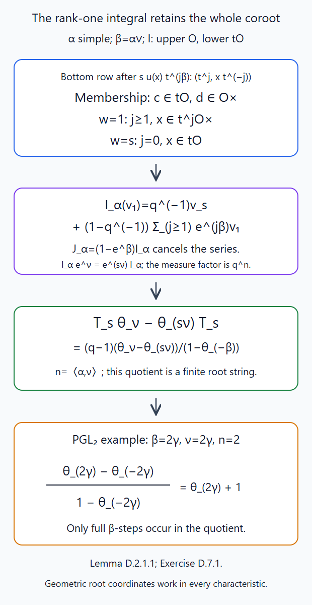
Lemma D.2.1.1 gives the exact additive measures and the normalized torus factor. The displayed \(PGL_2\) quotient has \(\beta=2\gamma\); its two summands are the full-coroot steps. Editable SVG source. The rank-one matrix identities are proved in Lesson 1; compare the free unramified-module exposition cited below.

D.3. The finite spherical symmetrizer
Lemma D.3.1.1. Under \(\mathcal H e_K=E[L]\), the spherical averaging operator is (D.3.2), with \(N_+=|\widehat\Phi^+|\) and \(W(q)=\sum_wq^{\ell(w)}\). It preserves the full lattice group algebra.
Proof. Put \(W(z)=\sum_{w\in W}z^{\ell(w)}\), \(N_+=|\widehat\Phi^+|\). Split finite flag cells give \([K:I]=W(q)\), so \[ e_K=1_K=\frac1{W(q)}\sum_{w\in W}T_w. \] The left module \(\mathcal H e_K\) is freely generated over \(A\) by \(e_K\). Spanning follows from \(T_we_K=q^{\ell(w)}e_K\). Independence follows in \(M\): \(v_1e_K=W(q)^{-1}\sum_wv_w\) is a nonzero vector in a free \(A\)-module. Identify \(\theta_\nu e_K\) with \(e^\nu\). The proved Bernstein relation gives \[ T_sf=q\,s(f)+(q-1)\frac{f-s(f)}{1-e^{-\beta}}. \tag{D.3.1} \] In the fraction field of \(A\), write \(x=e^{-\beta}\). This operator is \(A_s+B_ss\), where \[ A_s=\frac{q-1}{1-x},\qquad B_s=\frac{1-qx}{1-x}. \] For \(\mathsf M=\sum_wT_w\), pair \(w\) with \(sw\); the quadratic and length rules give \(T_s\mathsf M=q\mathsf M\). Since \(q-A_s=B_s\ne0\), this implies \(s\mathsf M=\mathsf M\). All coefficients in its finite crossed-product expression are therefore Weyl translates of the identity coefficient.
Distinct field automorphisms are linearly independent as operators. Otherwise, in a shortest nonzero relation \(\sum c_\sigma\sigma=0\), choose an element separating two automorphisms, apply the relation to its product with an arbitrary argument, and subtract one of its scalar multiples. A shorter nonzero relation results. The same proof applies to their restrictions to \(A\), using a separating monomial and an arbitrary argument in \(A\). The Weyl action on \(L\) is faithful, because \(L\) contains the full coroot lattice spanning the root space. Consequently operator identities known on \(A\) are identities in the finite crossed product over its fraction field; no prior localization of the Hecke action is assumed.
The coefficient of \(w_0\) in \(\mathsf M\) comes only from \(T_{w_0}\): omitting a reflection from a reduced word gives length less than \(N_+\). Its reduced product gives coefficient \[ \prod_{\beta>0}\frac{1-qe^{-\beta}}{1-e^{-\beta}}, \] because the successive inversion roots are exactly the positive roots. Applying \(w_0\) gives the identity coefficient \(\prod_{\beta>0}(q-e^{-\beta})/(1-e^{-\beta})\). Thus \[ e_Kf=\frac{q^{N_+}}{W(q)} \sum_{w\in W}w\left( f\prod_{\beta>0}\frac{1-q^{-1}e^{-\beta}}{1-e^{-\beta}}\right). \tag{D.3.2} \] Its left side preserves \(A\). This is proved from actual finite Hecke operators; neither root primitivity nor a separate formal braid claim is assumed. ∎
D.4. The normalized Satake functional
Lemma D.4.1.1. The finite sum \(\mathcal L(f)=\sum_{zK}f(z)\phi_0(z)\) identifies \(\theta_\nu e_K\) with \(e^\nu\) for every \(\nu\in L\). On spherical functions it is the Satake transform of Appendix B.
Proof. Let \(\phi_0(nt^\nu k)=a^{-h_\nu}e^\nu\), Appendix B's rational induced generator. For compact left-\(I\), right-\(K\) functions put \[ \mathcal L(f)=\sum_{zK}f(z)\phi_0(z). \] For dominant \(\xi\), \(It^\xi K\subset Nt^\xi K\), by negative-root contraction as in D.1.5. All its support has \(\phi_0=a^{-d_\xi}e^\xi\); its integral is \(a^{d_\xi}\). Therefore \[ \mathcal L(\theta_\xi e_K)=e^\xi. \tag{D.4.1} \] To extend this to arbitrary \(\xi\), let \(z\) range over finitely many representatives of the support of a compact \(f\). Choose a congruence subgroup \(K_r\subset zKz^{-1}\) for all of them. A finite pole bound for \(z,z^{-1}\) in a faithful affine matrix realization proves existence: \(z^{-1}(1+t^rA)z\) is integral once \(r\) exceeds the sum of the pole bounds. Closedness of \(G\) in the matrix group then makes it a \(G(O)\)-point. Choose strictly dominant \(\zeta\) large enough that \(t^{-\zeta}N^-(tO)t^\zeta\subset K_r\).
For \(i=n_+t_0n_-\in I\), absorb its contracted last factor on the right of \(t^\zeta z\). The first factors lie in \(N(F)T(O)\), on which \(\phi_0\)'s character is one. Thus \[ \phi_0(it^\zeta z)=a^{-d_\zeta}e^\zeta\phi_0(z). \] Interchange the finite coset sum defining \(\theta_\zeta f\) with the finite sum over \(zK\). Its right \(I\)-factor is absorbed by the left \(I\)-invariance of \(f\). The preceding identity and \(\int\theta_\zeta=a^{d_\zeta}\) give \[ \mathcal L(\theta_\zeta f)=e^\zeta\mathcal L(f). \tag{D.4.2} \] Apply this to \(f=\theta_\xi e_K\), also making \(\zeta+\xi\) dominant. The translation group law and (D.4.1) show \(\mathcal L(\theta_\xi e_K)=e^\xi\) for every \(\xi\). Hence \(\mathcal L\) is exactly the polynomial-module identification. On spherical functions it is the Satake transform, by Appendix B's finite coset formula. ∎
D.5. Every orbit indicator
Theorem D.5.1.1. For every dominant \(\lambda\), \(\mathcal S(c_\lambda)=a^{d_\lambda}H_\lambda(q^{-1})\), where \(H_\lambda\) is the exact dual-root, full-lattice Hall–Littlewood polynomial (6.5). The formula retains every central direction and holds over every finite-field extension.
Proof. For dominant \(\lambda\), the function \(e_K\theta_\lambda e_K\) is bi-\(K\)-invariant and supported exactly on \(Kt^\lambda K\). Positivity under the chosen embedding \(a=\sqrt q>0\) rules out cancellation. Its integral is \(a^{d_\lambda}\). Consequently \[ e_K\theta_\lambda e_K =\frac{a^{d_\lambda}}{\#\mathrm{Gr}^\lambda(\mathbf F_q)}c_\lambda. \tag{D.5.1} \] Let \(W_\lambda\) be the stabilizer, and \(N_\lambda\) the number of positive roots pairing to zero with \(\lambda\). The root subsystem is generated by the simple roots pairing to zero. Finite flag cells and Lesson 1, Theorem 3.1 give \[ \#\mathrm{Gr}^\lambda(\mathbf F_q) =q^{d_\lambda-(N_+-N_\lambda)}\frac{W(q)}{W_\lambda(q)} =q^{d_\lambda}\frac{W(q^{-1})}{W_\lambda(q^{-1})}. \tag{D.5.2} \] The longest-element bijection sends length \(r\) to \(N_+-r\): its action reverses the sign of every positive root, complementing the inversion set. Apply the same argument to \(W_\lambda\) for the second equality. The stabilizer and its coset-length decomposition are the finite chamber argument: walls containing \(\lambda\) generate its stabilizer; the minimal coset representative sends the subsystem's positive roots positively, so multiplication by an element of \(W_\lambda\) adds precisely that element's inversions. Thus the flag-cell count is the displayed quotient, with no divisibility assumption.
Apply \(\mathcal L\) to (D.5.1). The left side is (D.3.2) applied to \(e^\lambda\). Using \(W(q)=q^{N_+}W(q^{-1})\) and (D.5.2), cancel the nonzero rational scalars. This proves \[ \mathcal S(c_\lambda) =a^{d_\lambda}\frac1{W_\lambda(q^{-1})} \sum_{w\in W}w\left( e^\lambda\prod_{\beta>0} \frac{1-q^{-1}e^{-\beta}}{1-e^{-\beta}}\right) =a^{d_\lambda}H_\lambda(q^{-1}). \tag{D.5.3} \] Here \(H_\lambda\) is exactly (6.5). All steps persist over \(\mathbf F_{q^n}\), replacing \(q,a\) by \(q^n,a^n\). ∎
D.6. The graded IC stalk polynomial
Theorem D.6.1.1. In the arithmetic setting of §1, for dominant \(\mu\le\lambda\), the raw IC stalks satisfy (6.3), equivalently (D.6.1). The relevant degrees have the stated parity and vanishing, and the coefficients are nonnegative integers.
Proof. Write \(I_\lambda=\mathrm{IC}^{\mathrm{raw}}_\lambda\). In the arithmetic setting of §1, take dominant \(\mu\le\lambda\) and put \[ g_{\lambda\mu}(u)=\sum_{r\ge0} \dim_E H^{-d_\mu-2r}(i_\mu^*I_\lambda)\,u^r. \] The perverse stalk bound is degree at most \(-d_\mu\); the delivered parity and resolution retraction give the lower bound \(-d_\lambda\). Since \(d_\lambda-d_\mu\) is even in a component, this is a finite polynomial with \(0\le r\le(d_\lambda-d_\mu)/2\). On a strict boundary orbit, intermediate extension gives the strict upper stalk bound, hence \(r\ge1\); on the open orbit \(g_{\lambda\lambda}=1\).
The actual normalized scalar in degree \(-d_\mu-2r\), proved in Theorem C.3.1.1, is \(a^{-d_\mu}q^{-r}\). Every degree has sign \((-1)^{d_\lambda}\), so \[ t_{\mathcal I_\lambda}(t^\mu) =(-1)^{d_\lambda}a^{-d_\mu}g_{\lambda\mu}(q^{-1}). \] Expand the finite-support trace function in the indicators \(c_\mu\), apply (D.5.3), and use Theorem B.2.1.1. The signs cancel, giving \[ \operatorname{ch}V_\lambda =\sum_{\mu\le\lambda}g_{\lambda\mu}(q^{-1})H_\mu(q^{-1}). \] The triangular polynomials \(H_\mu\) remain a basis after specialization: their top coefficient is one and \(W_\mu(q^{-1})\) is a nonzero positive rational number. The proved character transition (6.11) therefore makes \(g_{\lambda\mu}(q^{-1})=m^\mu_\lambda(q^{-1})\).
Repeat over every \(\mathbf F_{q^n}\), with half twist \(a^n\). The geometric IC and stalk dimensions are unchanged, while Frobenius is the \(n\)-th power of the actual scalar operator. Hence equality holds at every \(u=q^{-n}\). These are infinitely many distinct characteristic-zero numbers. A nonzero polynomial has at most its degree many roots, by linear-factor division and induction. It follows that \[ m^\mu_\lambda(u) =\sum_{r\ge0}\dim_E H^{-d_\mu-2r}(i_\mu^*I_\lambda)\,u^r =u^{(d_\lambda-d_\mu)/2} \sum_{j\ge0}\dim_E H^{-d_\lambda+2j}(i_\mu^*I_\lambda)\,u^{-j}. \tag{D.6.1} \] The second equality changes index by \(r=(d_\lambda-d_\mu)/2-j\). This proves (6.3), including parity, vanishing and nonnegative coefficients. The actual algebraic coefficient-extension theorem in Lesson 11, Theorem D.3.1.1 retains these stalks and their dimensions after extending the coefficient field algebraically. ∎
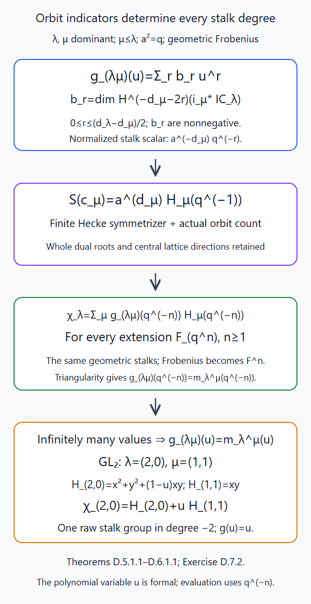
Theorems D.5.1.1–D.6.1.1 retain the full root datum, degree bounds, shift sign and formal variable. The value \(q^{-n}\) comes from geometric Frobenius over \(\mathbf F_{q^n}\); the dimensions stay fixed. Editable SVG source. The actual stalk and compact-trace providers are Appendices B–C; the Hall–Littlewood transition is proved in §6.

D.7. Exercises
Exercise D.7.1 (medium). In \(G=PGL_2\), let \(\gamma\) be the class of \(\operatorname{diag}(t,1)\); then \(\beta=\alpha^\vee=2\gamma\). Compute the Bernstein quotient for \(\nu=\gamma,-\gamma,2\gamma\), and the matrix of \(T_s\) on the span of \(e^\gamma,e^{-\gamma}\). Verify its quadratic relation.
Solution. The root pairings are \(1,-1,2\). The three quotients in D.2.6 are respectively \(e^\gamma,-e^\gamma,e^{2\gamma}+1\). These are obtained by dividing the differences by \(1-e^{-2\gamma}\), using the finite geometric sums. With \(z=e^\gamma\), the polynomial-module formula gives \(T_sz=(q-1)z+qz^{-1}\) and \(T_sz^{-1}=z\). In the ordered basis \((z,z^{-1})\) the matrix is \(\begin{pmatrix}q-1&1\\q&0\end{pmatrix}\). Multiplication gives \(\begin{pmatrix}(q-1)^2+q&q-1\\q(q-1)&q\end{pmatrix}=(q-1)T_s+q\,1\). Replacing the denominator by \(1-e^{-\gamma}\) would give extra odd steps and would change this actual operator. The root-coordinate integral dictates the whole coroot.
Exercise D.7.2 (advanced). For \(GL_2\), \(\lambda=(2,0)\), \(\mu=(1,1)\), compute the Hall–Littlewood transition, the graded central IC stalk and the two spherical normalizations in D.5.1 and D.5.3.
Solution. Write \(x=e^{(1,0)}\), \(y=e^{(0,1)}\). The two Weyl summands in (6.5), with stabilizer denominator one for \((2,0)\), give \(H_{(2,0)}(u)=x^2+y^2+(1-u)xy\). The central polynomial is \(H_{(1,1)}(u)=xy\). Since \(\operatorname{ch}\operatorname{Sym}^2=x^2+xy+y^2\), its transition is \(H_{(2,0)}(u)+uH_{(1,1)}(u)\). Thus \(m^{(1,1)}_{(2,0)}(u)=u\). Here \(d_\lambda=2\), \(d_\mu=0\), so the stalk has one raw group in degree \(-2\), no others. Its raw Frobenius is one and its normalized Frobenius is \(a^{-2}=q^{-1}\). This agrees with the direct quadratic-cone IC proof of §2.
The open orbit has \(q(q+1)\) points by Lesson 1, Theorem 3.1. Hence \(e_K\theta_\lambda e_K=(q+1)^{-1}c_\lambda\), while \(\mathcal S(c_\lambda)=qH_\lambda(q^{-1})\). The polynomial-module image of the first expression is \(q(q+1)^{-1}H_\lambda(q^{-1})\), equal to the finite symmetrizer. Finally \(t_{\mathcal I_\lambda}=q^{-1}(c_\lambda+c_\mu)\) has transform \(H_\lambda(q^{-1})+q^{-1}xy=\operatorname{ch}\operatorname{Sym}^2\), retaining its positive shift sign.
Appendix E. Geometric character vanishing and top Whittaker cohomology
Work over an algebraically closed field of characteristic \(p>0\), with \(\ell\ne p\), and an algebraic characteristic-zero coefficient field containing the values of \(\psi:\mathbf F_p\to E^\times\). Keep \(I_\lambda=\mathrm{IC}^{\mathrm{raw}}_\lambda\), \(Z_\lambda=\mathrm{Gr}^{\le\lambda}\), \(h_\nu=\langle2\rho,\nu\rangle\), and the characters of (7.1). The free Whittaker patterns in the geometry of moduli spaces of bundles on curves, Theorem 1 and §7, by Frenkel, Gaitsgory and Vilonen, is comparison material for the conductor and top-degree statements. The proofs below supply the character vanishing and the actual cohomology maps.
Proper-support base change, projection, structural duality and affine trace are proved in Lesson 5, Theorems O.4.2.1, O.4.3.1, P.3.3.1, P.3.4.1 and Lemma Q.1.2.1. Algebraic coefficient extension retains them by Lesson 11, Theorem D.3.1.1.
E.1. The Artin–Schreier line and its affine vanishing
Lemma E.1.1.1. The unit-normalized Artin–Schreier line has the additive comparison (E.1.1), the affine vanishing (E.1.2), and the vector-space calculation (E.1.3).
Proof. The polynomial map \(a:\mathbf A^1_z\to\mathbf A^1_x\), \(x=z^p-z\), is a finite étale \(\mathbf F_p\)-torsor. Its algebra is free on \(1,z,\ldots,z^{p-1}\), its derivative is \(-1\), and two roots differ by an element of \(\mathbf F_p\). The translations \(z\mapsto z+c\) are its deck transformations. The character projectors \[ \frac1p\sum_{c\in\mathbf F_p}\eta(c)^{-1}[c] \] split \(a_*E\) into rank-one lisse summands. Let the deck operator [c] act by pullback under z↦z+c. Denote its ψ-eigensummand by \(\mathcal L_\psi\); its fibre sections satisfy f(z+c)=ψ(c)f(z). At zero choose the unit with f(0)=1. This fixes the trace convention: over \(\mathbf F_q\), a root over b satisfies z^q=z+Tr_{q/p}(b). Geometric Frobenius acts on fibre sections by precomposition with arithmetic Frobenius, so its scalar is \(\psi(\operatorname{Tr}_{q/p}b)\). The geometric cover is connected, since its total space is an affine line. Its monodromy therefore surjects onto the deck group, so this nontrivial summand is not constant.
The addition map has the actual character-line comparison \[ m^*\mathcal L_\psi \simeq \mathcal L_\psi\boxtimes\mathcal L_\psi. \tag{E.1.1} \] Indeed add roots \(z_1,z_2\) of \(z_i^p-z_i=x_i\). Their sum is a root over \(x_1+x_2\). Quotienting the product torsor by \((c,-c)\) makes this map an isomorphism of \(\mathbf F_p\)-torsors: both sides are finite étale of degree \(p\), and on each geometric fibre it is the bijection of root sums. The product of the two characters is \(\psi(c_1+c_2)\). Taking its associated line gives (E.1.1). Associativity, the zero unit and the two unit identities are induced by the corresponding identities for root addition, so are comparisons of actual maps.
There is an actual vanishing \[ R\Gamma_c(\mathbf A^1,\mathcal L_\psi)=0. \tag{E.1.2} \] Finite proper-support composition identifies \[ R\Gamma_c(\mathbf A^1_x,a_*E) =R\Gamma_c(\mathbf A^1_z,E)=E(-1)[-2]. \] The last equality, including its trace orientation, is Lesson 5, Lemma Q.1.2.1. Every deck translation acts as the identity on it. To check the map, compactify to \(\mathbf P^1\). Translation fixes infinity and pulls the degree-one line bundle to itself, so preserves the positive Kummer class and the infinity-section localization triangle used in that lemma. It therefore preserves its compact trace generator. Only the trivial character projector can act nontrivially on this one-dimensional group. The nontrivial projector's derived summand is zero, proving (E.1.2).
For an \(m\)-dimensional vector space and a linear form \(b\), it follows that \[ R\Gamma_c(\mathbf A^m,b^*\mathcal L_\psi)= \begin{cases}E(-m)[-2m],&b=0,\\0,&b\ne0.\end{cases} \tag{E.1.3} \] For \(b\ne0\), choose coordinates making \(b\) the first projection. The product calculation follows from the actual proper-support base-change and projection maps, not a dimension count. For \(b=0\), the chosen zero unit makes the line constant and one iterates the affine trace. The same argument after a local splitting proves relative vanishing for a vector bundle with a fibrewise nonzero linear form. ∎
E.2. A character-equivariant compact complex vanishes
Lemma E.2.1.1. If a separated finite-type \(\mathbf G_a\)-scheme carries a bounded complex with nontrivial additive-character equivariance, its entire compact complex vanishes.
Proof. Let \(X\) be separated of finite type and let \(\mathbf G_a\) act by \(b:\mathbf A^1\times X\to X\). If a bounded constructible \(F\) has an actual comparison \[ b^*F\simeq\mathcal L_\psi\boxtimes F, \tag{E.2.1} \] then \(R\Gamma_c(X,F)=0\).
Here is a proof retaining the map and all degrees. The morphism \[ (c,x)\longmapsto(c,c\cdot x) \] is an automorphism of \(\mathbf A^1\times X\), with inverse \((c,y)\mapsto(c,(-c)\cdot y)\); its second projection is \(b\). Thus the compact complex of \(b^*F\) equals that of the pullback of \(F\) under the ordinary projection. The latter is \[ E(-1)[-2]\otimes R\Gamma_c(X,F). \] On the other hand (E.2.1) and (E.1.2) make it zero. Both product identities are the counit-defined projection comparison of Lesson 5, Theorem O.4.3.1 and the product square in Lesson 5, Theorem O.4.2.1. Tensoring with the invertible Tate line and reversing the shift proves the assertion. No assertion that a connected group acts trivially on arbitrary cohomology is needed.
In particular a complex on a fixed point with nontrivial character equivariance is zero: apply this argument to the trivial action on that point. ∎
E.3. Every nondominant conductor in (7.2)
Proposition E.3.1.1. For \(\mu+\nu\) dominant and \(\mu\) nondominant, every group in (7.2) vanishes. A conductor-zero twisted-equivariant object also vanishes on every nondominant semi-infinite orbit.
Proof. Fix dominant \(\lambda\), and \(\mu,\nu\) with \(\mu+\nu\) dominant. Put \[ X_{\lambda\nu}=Z_\lambda\cap S_\nu,\qquad F_{\lambda\mu\nu} =i^*I_\lambda\otimes(\chi_\mu^\nu)^*\mathcal L_\psi . \] All schemes and operations are on this bounded finite-type intersection. If \(\mu\) is not dominant, every compact group of \(F_{\lambda\mu\nu}\) is zero.
Choose a simple root \(\alpha_i\) with \(n=\langle\alpha_i,\mu\rangle<0\), and put \(m=-n-1\ge0\). The morphism \[ c\longmapsto u_i(c\,t^m) \tag{E.3.1} \] is an additive subgroup of \(N(O)\). It preserves \(Z_\lambda\), by the \(G(O)\)-action, and preserves \(S_\nu\), by the \(N(F)\)-action. Its action on the bounded support is algebraic: the displayed root coordinate is polynomial in \(c\), and the positive-loop action factors through a finite jet on that support. Its character is exactly \[ \chi_\mu(u_i(c\,t^m)) =\operatorname{Res}(c\,t^{m+n}dt)=c. \] The other simple-root coordinates are zero. The descended character consequently satisfies \(\chi_\mu^\nu(c\cdot x)=c+\chi_\mu^\nu(x)\). The actual \(G(O)\)-equivariance of \(I_\lambda\), proved in Lesson 6, Theorem B.2.3.1, together with (E.1.1), gives (E.2.1) on this subgroup. Lemma E.2.1.1 proves vanishing in all degrees. This proves the entire nondominant-\(\mu\) branch of (7.2), without a semisimplicity or cleanness premise.
There is also the required local relevance obstruction for a character-equivariant object on the semi-infinite orbit \(S_\eta\) with conductor zero. If \(\eta\) is nondominant, choose \(i\) with \(\langle\alpha_i,\eta\rangle\le-1\). The subgroup \(u_i(c\,t^{-1})\) fixes \(t^\eta\), since conjugation by \(t^{-\eta}\) gives exponent \(-1-\langle\alpha_i,\eta\rangle\ge0\), but \(\chi_0=c\) on it. Restricting twisted equivariance to this fixed point and using Lemma E.2.1.1 forces the stalk to be zero. Translation to other points of the orbit forces every stalk there to vanish. ∎
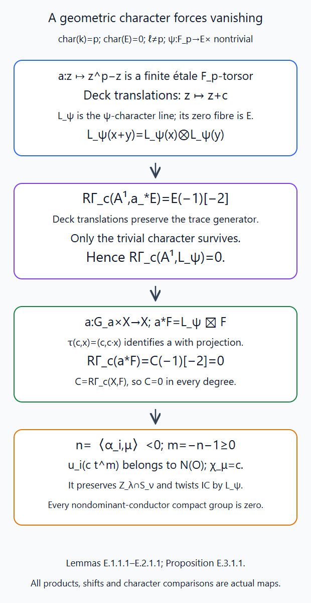
Lemmas E.1.1.1–E.2.1.1 and Proposition E.3.1.1 retain the actual character line, subgroup, shifts and compact-support maps. Editable SVG source. The affine trace and proper-support comparisons are proved in Lesson 5, Appendices O–Q.

E.4. The full upper-degree bound and its actual top group
Theorem E.4.1.1. For \(X_{\lambda\nu}=Z_\lambda\cap S_\nu\), raw \(I_\lambda\), and the descended character line, compact degrees above \(h_\nu\) vanish. Its top group has the canonical open-orbit comparison (E.4.2).
Proof. For arbitrary \(\mu,\nu\) with descent, one has \[ H_c^r(X_{\lambda\nu},F_{\lambda\mu\nu})=0 \quad(r>h_\nu), \tag{E.4.1} \] and a canonical comparison \[ H_c^{h_\nu}(X_{\lambda\nu},F_{\lambda\mu\nu}) \simeq H_c^{d_\lambda+h_\nu} (\operatorname{Gr}^{\lambda}\cap S_\nu, (\chi_\mu^\nu)^*\mathcal L_\psi). \tag{E.4.2} \]
Stratify \(X_{\lambda\nu}\) by the finitely many \(\operatorname{Gr}^{\kappa}\cap S_\nu\), \(\kappa\le\lambda\). The dimension proof in Lesson 5, §§8–10 gives dimension at most \((d_\kappa+h_\nu)/2\). The perverse stalk bound gives ordinary degrees at most \(-d_\kappa\) for \(I_\lambda\) on this orbit. Twisting by a lisse line does not change that bound. Lesson 5, Lemma Q.4.1.1 applied to its ordinary cohomology sheaves, with the finite hypercohomology filtration, therefore bounds the total compact degree by \(h_\nu\). A finite sequence of open–closed triangles proves (E.4.1).
On a strict boundary orbit the intermediate extension bound is strictly less than \(-d_\kappa\). The actual parity theorem of Lesson 11, Theorem C.4.1.1 makes it at most \(-d_\kappa-2\): \(d_\lambda\) and \(d_\kappa\) have the same component parity. The boundary compact complex is thus zero above \(h_\nu-2\). The open–closed triangle for \(\operatorname{Gr}^{\lambda}\cap S_\nu\subset X_{\lambda\nu}\) consequently induces an isomorphism in degree \(h_\nu\). On that open orbit \(I_\lambda=E[d_\lambda]\), giving (E.4.2). This checks the possible connecting group as well as the upper-degree vanishing. ∎
E.5. Which top components survive the character
Theorem E.5.1.1. The top Whittaker group is (E.5.2), with one trace-oriented line for each top component on which the character is zero. Its raw Frobenius is \(q^{(d_\lambda+h_\nu)/2}\operatorname{id}\); after the half twist it is \(a^{h_\nu}\operatorname{id}\).
Proof. Let \(Y=\operatorname{Gr}^{\lambda}\cap S_\nu\), and \(D=(d_\lambda+h_\nu)/2\). If \(Y\) is nonempty, its top components have dimension \(D\), by Lesson 5's dimension proof. Each is stable under the constant torus: the closure of the image of the irreducible variety \(T\times K\) is irreducible and contains the component \(K\), so stays in that maximal irreducible component. Write \(f=\chi_\mu^\nu=\sum_i f_i\). On the orbit these regular functions have the distinct simple-root characters \[ f_i(t\cdot x)=\alpha_i(t)f_i(x). \tag{E.5.1} \] The coweight conjugation commutes with this constant torus. Each \(f_i\) descends by the same stabilizer test as (7.1).
On a connected smooth dense torus-stable open \(U\) of a reduced component \(K\), the line \(f^*\mathcal L_\psi\) is geometrically trivial if and only if \(f|_K=0\).
The nontrivial implication deserves a proof in every characteristic. The nontrivial character of \(\mathbf F_p\) is faithful. Trivial monodromy of its associated line therefore makes the pulled-back \(\mathbf F_p\)-torsor trivial. A section supplies a regular function \(g\) on \(U\) with \(g^p-g=f\). The action makes every regular function a finite sum of torus weights. To verify this also for nonaffine \(U\), use a finite affine cover. Since \(U\) is separated its pairwise intersections are affine. Flat tensoring with \(k[T]\) commutes with the equalizer computing global sections, so the action pullback of \(g\) lies in \(k[T]\otimes\Gamma(U,\mathcal O_U)\). Expansion in the torus characters, followed by the action's associativity, gives the finite weight decomposition.
In any nonzero \(p\)-chain of weights of \(g\), let \(p^a\gamma\) and \(p^b\gamma\) be the lowest and highest weights occurring. In \(g^p-g\) the first has nonzero coefficient \(-g_{p^a\gamma}\), and \(p^{b+1}\gamma\) has nonzero coefficient \(g_{p^b\gamma}^{p}\). The latter is nonzero because \(U\) is integral. Thus \(f\) would have two distinct weights related by a positive power of \(p\). But its nonzero weights are simple roots, and two distinct simple roots are not rational multiples of each other. A multiple \(p^r\alpha_i\), \(r>0\), is not a simple root either. This is a contradiction. All nonzero weights of \(g\) vanish; its zero-weight contribution gives \(f=0\), since \(f\) has no zero weight. Vanishing on the dense open is vanishing on the reduced component. Conversely \(f=0\) gives the unit-trivialized line. This argument retains nonprimitive roots in the full character lattice; it never divides a root character by \(p\).
Structural duality on the smooth \(D\)-dimensional open gives \[ H_c^{2D}(U,L) =H^0(U,L^{-1})^*\otimes E(-D). \] For a rank-one lisse line the right side vanishes unless its monodromy is trivial. The complement has dimension at most \(D-1\), so Lesson 5, Lemma Q.4.1.1 and localization identify this group with the top group of the component. Remove intersections between components and their singular loci; these are torus-stable lower-dimensional sets. Consequently \[ H_c^{h_\nu}(X_{\lambda\nu},F_{\lambda\mu\nu}) \simeq\bigoplus_{\substack{K\text{ a top component of }Y\\f|_K=0}} E(-D) \tag{E.5.2} \] as geometric coefficient lines, with their positive trace orientations. Smaller-dimensional components contribute no top group. If \(Y\) is empty, that group is zero. This assertion concerns the top degree only.
When the data are split over \(\mathbf F_q\), these selected zero-character component lines inject into the untwisted top group by their fundamental-class basis. The injection is independent of the dense open: deleting a lower-dimensional subset leaves the same top group and trace orientations. It is Frobenius-compatible, because the character-zero condition, its unit trivialization and the component permutation are all defined by the same data. Theorem A.3.1.1 says that the actual untwisted raw weight operator is \(q^D\operatorname{id}\). Its restriction to the selected subspace is therefore also \(q^D\operatorname{id}\), with no Jordan part. For normalized IC the operator is \(a^{h_\nu}\operatorname{id}\). A numerical trace vanishing in lower degrees is not used. ∎
E.6. Every highest-slice case, including its Weil line
Theorem E.6.1.1. For every dominant \(\mu,\lambda\) and \(\nu=\lambda\), the raw compact complex is \(E(-d_\lambda)[-d_\lambda]\). Its only degree is \(h_\lambda=d_\lambda\), and its multiplicity in (7.2) is one.
Proof. For dominant \(\mu\) and \(\nu=\lambda\), the whole intersection is the split extremal chart of Lesson 11, Lemma B.1.1.1: \[ Z_\lambda\cap S_\lambda\simeq\mathbf A^{d_\lambda}. \] Its representatives are ordered \(u_\alpha(\sum_{0\le j<\langle\alpha,\lambda\rangle}x_{\alpha,j}t^j)t^\lambda\) with positive \(\alpha\), all in \(N(O)t^\lambda\). The simple-root residues of \(\chi_\mu\) vanish because \(\langle\alpha_i,\mu\rangle\ge0\); nonsimple root factors have no abelianized coordinate. Thus \(f=0\). The raw IC is constant with shift \([d_\lambda]\) on this entire chart, and \[ R\Gamma_c(X_{\lambda,\lambda},F_{\lambda,\mu,\lambda}) =E(-d_\lambda)[-d_\lambda]. \tag{E.6.1} \] Its one geometric group lies in degree \(h_\lambda=d_\lambda\). Its raw Frobenius is \(q^{d_\lambda}\), and the normalized half twist changes it to \(a^{d_\lambda}\). This agrees with (7.2): the largest weight in \(V_\lambda\otimes V_\mu\) is \(\lambda+\mu\), and its line is the tensor of the two highest lines. All other weights are lower by a nonzero positive-root combination. Semisimplicity and the highest-weight classification already proved in Lesson 11, Theorem B.4.1.1 therefore give \(\dim\operatorname{Hom}(V_\lambda\otimes V_\mu,V_{\lambda+\mu})=1\). Choosing generators of those highest lines identifies the geometric line with this multiplicity line; no unspecified raw Tate line is discarded. ∎
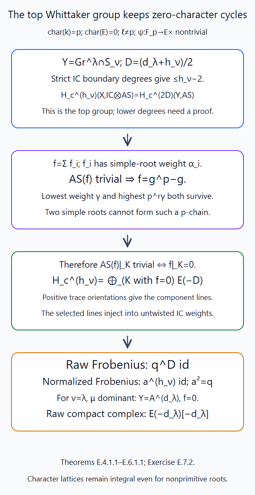
Theorems E.4.1.1–E.6.1.1 determine the top degree and every highest-slice case. Lower-degree concentration for all dominant conductors is a further assertion. Editable SVG source. The compact dimension, parity and extremal-chart providers are proved in Lessons 5 and 11.

E.7. Exercises
Exercise E.7.1 (medium). For \(GL_2\), \(\lambda=\nu=(1,0)\), compare \(\mu=0\) with \(\mu=(-1,0)\). Verify character descent, compute the character on the highest affine chart, and calculate the entire raw compact complex.
Solution. The simple root pairs as the difference of the two entries. Both \(\nu\) and \(\mu+\nu\) are dominant; for the second choice \(\mu+\nu=(0,0)\). The chart is \(u_\alpha(x)t^\lambda\), \(x\in k\), by the coefficient range \(0\le j<1\) in Lesson 11, Lemma B.1.1.1. A lattice in this minuscule orbit satisfies \(tO^2\subset L\subset O^2\), and \(L/tO^2\) is a line in \(O^2/tO^2\). Conversely the inverse image of such a line is a lattice of this position. The same construction over parameter schemes is the rank-one subbundle functor, represented by \(\mathbf P^1\). The integral group acts transitively locally on the base, and this proper line functor is already the orbit closure. Thus the raw IC is \(E[1]\).
For \(\mu=0\), the residue of \(x\,dt\) is zero. Thus the raw compact complex is \(E(-1)[-1]\); its one group is in degree one with Frobenius \(q\). The half twist changes its scalar to \(a\). For \(\mu=(-1,0)\), conjugation changes the simple-root coefficient to \(x t^{-1}\), so the residue character is \(x\). Lemma E.1.1.1 gives \(R\Gamma_c(\mathbf A^1,\mathcal L_\psi[1])=0\). Equivalently (E.3.1) has \(n=-1,m=0\). This checks the complete nondominant-conductor vanishing on an actual Schubert slice.
Exercise E.7.2 (advanced). In characteristic two let \(T=\mathbf G_m\) act on \(U=\mathbf G_m\) with coordinate \(z\) of weight \(\gamma\). Let \(f=z^2\), of nonprimitive weight \(2\gamma\), and let \(\psi:\mathbf F_2\to E^\times\) be nontrivial. Show that \(f^*\mathcal L_\psi\) is geometrically nonconstant. Compute its entire compact complex on \(U\), and its Frobenius when the data are over \(\mathbf F_2\).
Solution. A trivial character line would give \(f=g^2-g\) with \(g\) a finite Laurent polynomial. Any nonzero weight chain of \(g\) produces both its lowest weight and twice its highest weight in \(g^2-g\). These cannot both equal the sole weight \(2\gamma\) of \(f\). The zero-weight part cannot produce \(z^2\). Thus the line is nonconstant. In particular \(g=z\) gives \(z^2-z\), retaining the extra weight \(\gamma\); dividing the character \(2\gamma\) by the characteristic would change the problem.
There is nevertheless a cover comparison with the usual Artin–Schreier line on \(\mathbf A^1_z\). If \(u^2-u=z^2\), set \(v=u-z\). Then \(v^2-v=z\). This is an isomorphism of \(\mathbf F_2\)-torsors, equivariant for the same deck translations and preserving the chosen zero unit. Its affine compact complex is therefore zero by Lemma E.1.1.1. Localization at zero gives \[ R\Gamma_c(\mathbf G_m,f^*\mathcal L_\psi) \longrightarrow0\longrightarrow E \longrightarrow R\Gamma_c(\mathbf G_m,f^*\mathcal L_\psi)[1]. \] Hence that compact complex is \(E[-1]\): degree one is \(E\), while degree two vanishes. Over \(\mathbf F_2\) all maps and the zero unit are defined over the base field, so its Frobenius scalar is one. Its alternating trace is \(-1\), agreeing with the sum over the single nonzero field point. The same scalar persists over finite extensions. Vanishing of the top group alone therefore cannot prove lower-degree vanishing; (7.2)'s general concentration needs its geometric Whittaker argument.
Appendix F. Levi projections and the last-residue obstruction
Keep raw \(I_\lambda\), \(d_\lambda=\langle2\rho_G,\lambda\rangle\), \(h_\nu=\langle2\rho_G,\nu\rangle\), and \(Y_{\lambda\nu}=\mathrm{Gr}_G^\lambda\cap S^G_\nu\). A top component has dimension \(D=(d_\lambda+h_\nu)/2\). Theorems E.4.1.1–E.5.1.1 with the trivial coefficient line identify its positive trace class \(v_K\) with a member of a basis of the actual weight space \(F_\nu(I_\lambda)\). We prove the required compatibility of these axes with simple Levi restriction.
Free comparison material is Braverman–Gaitsgory's Crystals via the affine Grassmannian, §§3–4, and Frenkel–Gaitsgory–Vilonen's Whittaker patterns, §6. The first is written over \(\mathbf C\). Our proofs use the actual coefficient operations and root charts of Lessons 5 and 11 over every algebraically closed geometric field with \(\ell\) invertible. For character lines assume \(\operatorname{char}k=p>0\) and the coefficient field contains a nontrivial \(\psi:\mathbf F_p\to E^\times\). The algebraic coefficient extension of Lesson 11, Theorem D.3.1.1 retains these comparisons.
F.1. The relative fibre bound
Proposition F.1.1.1. For a standard parabolic \(P=MU\) and a component \(\theta\) of \(\mathrm{Gr}_M\), set \(\delta=\langle2\rho_G-2\rho_M,\theta\rangle\). Let \(q:\mathrm{Gr}_P\to\mathrm{Gr}_M\) be the Levi projection. For an \(M\)-dominant \(\eta\) in that component, every nonempty fibre \(F_y\) of \(\mathrm{Gr}_G^\lambda\cap q^{-1}(\mathrm{Gr}_M^\eta)\to\mathrm{Gr}_M^\eta\) satisfies \[ 2\dim F_y\le d_\lambda+\delta-d_\eta^M. \tag{F.1.1} \]
Proof. All maps are on the represented bounded supports of Lesson 11, Lemma A.3.1.1. Put \(P_\lambda=j_!E[d_\lambda]\) for the open immersion \(j:\mathrm{Gr}_G^\lambda\to Z_\lambda\). This bounded genuine equivariant complex has perverse degrees at most zero. Indeed \(j^*\) is perverse exact; adjunction gives \(\operatorname{Hom}(j_!E[d_\lambda],A)=0\) for every \(A\) of perverse degrees at least one. This is the defining orthogonality condition. The proper-support base-change squares retain finite-jet equivariance.
The actual \(C=Rq_!i^*P_\lambda[\delta]\) also has perverse degrees at most zero. Lesson 11, Theorem A.3.2.1 proves heart exactness; induction through its bounded perverse truncation filtration proves this bound. On the \(M\)-orbit of dimension \(d_\eta^M\), its ordinary degree is at most \(-d_\eta^M\). To see the bound directly, equivariance makes any nonzero cohomology support contain the entire orbit, and the perverse support condition bounds that support dimension by the negative of its degree; apply this to each truncation piece.
Actual proper-support base change gives \(C_y=R\Gamma_c(F_y,E)[d_\lambda+\delta]\), by Lesson 5, Theorem O.4.2.1. If \(f=\dim F_y\), then \(H_c^{2f}(F_y,E)\ne0\): delete intersections and singular loci of its maximal components and use their structural trace lines and the compact dimension bound, exactly as in E.5.1.1. Thus \(2f-d_\lambda-\delta\le-d_\eta^M\), proving (F.1.1), also for nonpure fibres. ∎
F.2. Rank-one coordinates and the last residue
Lemma F.2.1.1. Let \(M\) have roots \(\{\pm\alpha\}\), and retain its original torus lattice. For dominant \(\eta\) put \(m=\langle\alpha,\eta\rangle\), \(n=\langle\alpha,\nu\rangle\). In the component \(\eta+\mathbf Z\alpha^\vee\), the reduced slice is nonempty exactly when \(m\ge|n|\). Its coordinates are \[ s={n-m\over2},\quad r={m+n\over2},\qquad u_\alpha\!\left(\sum_{j=s}^{n-1}a_jt^j\right)t^\nu, \qquad Z_\eta^M\cap S_\nu^M=\mathbf A^r. \tag{F.2.1} \] The open-orbit slice is \(\mathbf G_m\times\mathbf A^{r-1}\) if \(|n|<m\), all \(\mathbf A^m\) if \(n=m\), and a point if \(n=-m\). The character with conductor \(-\nu\) is the last coefficient \(a_{n-1}\) when \(r>0\), and zero when \(r=0\). It is nonconstant on every positive-dimensional open-orbit slice.
Proof. Root Laurent parameters modulo \(t^nO\) represent \(S_\nu^M\), since conjugation gives that exact stabilizer. Lesson 11, Theorem A.2.1.1 preserves these reduced coordinates under the adjoint rank-one map, with the original component and integral coroot step. In its \(PGL_2\)-coordinates the lattice matrix is \[ \begin{pmatrix}t^n&x(t)\\0&1\end{pmatrix}, \qquad a=\min(n,0,\operatorname{val}x),\qquad m'=n-2a. \tag{F.2.2} \] The minimum valuation of its entries is its smaller elementary divisor; determinant \(t^n\) then gives the other. These are the two-by-two integral row and column reductions of Lessons 2–4. Membership in \(Z_m\) is \(m'\le m\), equivalently \(s\le\min(n,0)\) and all coefficients below \(s\) zero. The remaining coefficients give (F.2.1). Membership in the open orbit is \(m'=m\). For \(|n|<m\) this requires \(a_s\ne0\); at the two endpoints it gives the stated affine space or point.
The calculation identifies reduced finite schemes. The polynomial root map lands in the original \(M\)-support: the proper universal homeomorphism and orbit-label calculation just cited identify its geometric points, so the support ideal pulls back to zero on the reduced polynomial scheme. Conversely the reduced slice lies in a bounded Laurent-root chart. The matrix inequalities kill its excluded coefficients on every geometric point and hence in its reduced coordinate ring. Its included coefficients give the inverse root map. The adjoint map preserves root parameters, so both compositions are the identity. No integral torus frame is lifted through an inseparable centre.
Conjugation by \(t^{-\nu}\) multiplies \(x\) by \(t^{-n}\). Its \(t^{-1}\) residue is \(a_{n-1}\). For \(r>1\) that last coordinate is unrestricted; for \(r=1\) it is the nonconstant coordinate of \(\mathbf A^1\) or \(\mathbf G_m\); for \(r=0\) the root sum is empty. This retains nonprimitive roots and coroots in the full lattices. ∎
F.3. Dominant simple-Levi projections
Proposition F.3.1.1. Let \(M_i\) be the rank-one Levi for \(\alpha_i\), with projection \(q_i\). Every top \(K\subset Y_{\lambda\nu}\) has a unique generic \(M_i\)-dominant orbit label \(\eta_i\). A dense open of \(K\) projects dominantly onto \(\mathrm{Gr}_{M_i}^{\eta_i}\cap S^{M_i}_\nu\).
Proof. There are finitely many orbits on the bounded target; irreducibility singles out the unique label meeting \(K\) densely. Let \(B\) be the closure of that projected image inside its orbit slice. The Cartesian Borel reduction of Lesson 11, Theorem A.3.2.1 places it in \(S^{M_i}_\nu\). Write \(m=d_{\eta_i}^{M_i}\), \(n=h_{M_i}(\nu)\), \(\delta=h_G(\nu)-h_{M_i}(\nu)\). The finite-type dimension formula and (F.1.1) give \[ \dim B\ge {d_\lambda+h_G(\nu)\over2} -{d_\lambda+\delta-m\over2}={m+n\over2}. \tag{F.3.1} \] Lemma F.2.1.1 makes the target irreducible of exactly this dimension. A proper closed subset has smaller dimension by Krull dimension and Noether normalization, §6. Therefore \(B\) is the entire target. This proves dominance for each \(i\); positivity for at least one \(i\) follows next. ∎
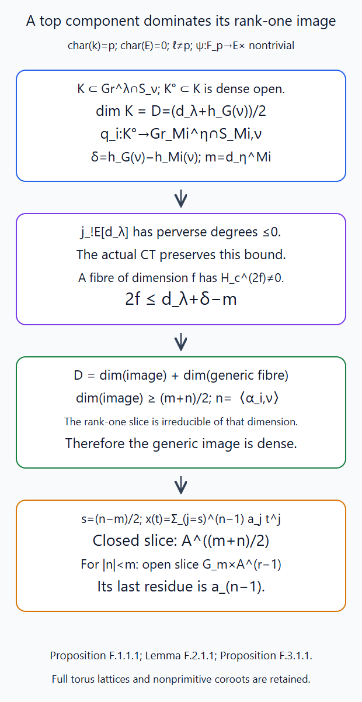
Proposition F.1.1.1 supplies the fibre bound, Lemma F.2.1.1 the complete reduced chart, and Proposition F.3.1.1 the dominant projection. Editable SVG source.

F.4. Upper opens and raising-operator images
Theorem F.4.1.1. Put \(n_i=\langle\alpha_i,\nu\rangle\le0\), \(\eta_0=s_i\nu\), and let \(U_i\) be the complement of \(Z_{\eta_0}^{M_i}\) in the bounded Levi component. Under the actual Satake weight comparison, the image \[ H_c^{h_G(\nu)}(Y_{\lambda\nu}\cap q_i^{-1}U_i,E[d_\lambda]) \longrightarrow F_\nu(I_\lambda) \tag{F.4.1} \] is \(e_i(V_\lambda)_{\nu-\alpha_i^\vee}\). It is the span of precisely the component axes \(v_K\) with \(d_{\eta_i}^{M_i}+n_i>0\). The image is independent of rescaling the positive simple-root operator \(e_i\) of the dual group.
Proof. The subset in (F.4.1) is open in \(Y\). Its top classes are exactly the trace classes of top components meeting it. Delete component intersections and singular loci in both spaces; their dimension is at most \(D-1\), so localization leaves top groups unchanged. The remaining disjoint smooth component opens have their structural trace lines. Extension by zero sends each to its corresponding nonzero line. This proves the asserted component-axis description of its image.
Put \(C_i=\operatorname{CT}_{M_i}^G(I_\lambda)\). Actual proper-support base change and composition identify the analogous image for the full IC coefficient with \[ \operatorname{im}\bigl( H_c^{n_i}(S^{M_i}_\nu\cap U_i,C_i) \longrightarrow F_\nu^{M_i}(C_i)\bigr). \tag{F.4.2} \] The shift is \(\delta=h_G(\nu)-n_i\), exactly as in Lesson 11, Theorem A.3.2.1. Passage from the open \(G\)-orbit coefficient commutes with this map. Indeed on its strict boundary the ordinary raw-IC degree is at most \(-d_\kappa-2\), by intermediate extension and Lesson 11, Theorem C.4.1.1. Restricting further to \(q_i^{-1}U_i\) leaves the compact dimension bound unchanged. Its compact degrees remain at most \(h_G(\nu)-2\), as in Theorem E.4.1.1. Localization thus gives the same top isomorphism with the open-orbit coefficient on both sides, compatibly with extension by zero.
The actual Satake equivalence and Levi tensor comparison of Lesson 11, Theorems A.4.1.1 and B.4.1.1 give a semisimple decomposition \(C_i=\bigoplus_\eta I_\eta^{M_i}\otimes M_\eta\). It corresponds to restriction of \(V_\lambda\) to the dual Levi with the specified weight torus and simple root groups. In this component the dominant labels are ordered by nonnegative integral multiples of \(\alpha_i^\vee\). A string contains \(\nu\) exactly when its pairing \(m\ge|n_i|\) and the integral coroot difference is allowed. Its smallest such label is \(\eta_0=s_i\nu\).
For \(\eta\le\eta_0\) the summand vanishes on \(U_i\). For \(\eta>\eta_0\), its boundary in \(Z_{\eta_0}\) has compact degrees at most \(n_i-2\), by the same strict perverse/parity calculation for \(M_i\). Localization is an isomorphism in degree \(n_i\) from its open restriction to its full weight group. Thus (F.4.2) is exactly the sum of the \(\nu\)-weight spaces in the \(\eta>\eta_0\) summands.
In an irreducible rank-one module of highest pairing \(m\), weights go from \(m\) to \(-m\) in steps of two. The image of \(e_i\) from weight \(n_i-2\) is zero exactly at \(n_i=-m\), and the entire line otherwise. The nonzero consecutive symmetric-power coefficients of Lesson 11, Theorem A.2.1.1 prove this over the characteristic-zero coefficient field. Precisely \(\eta>\eta_0\) contribute. Finally dominant projection and Lemma F.2.1.1 say that \(K\) meets \(U_i\) exactly when \(m+n_i>0\). This proves (F.4.1) without an assumed compatibility of crystal bases. ∎
F.5. Generation from the lowest line
Lemma F.5.1.1. For \(\nu\ne w_0\lambda\), \[ (V_\lambda)_\nu=\sum_i e_i(V_\lambda)_{\nu-\alpha_i^\vee}. \tag{F.5.1} \]
Proof. Choose \(v_-\ne0\) in the one-dimensional lowest line, proved in Lesson 11, Lemma B.1.1.1 and Theorem B.4.1.1. Let \(W\) span all words in the \(e_i\) applied to \(v_-\), including the empty word. It is torus-stable because the words have specified weights, and stable under every \(e_i\). It is stable under each negative simple \(f_i\) as well. Commute \(f_i\) through a word using \([f_i,e_j]=0\) for \(j\ne i\) and \([f_i,e_i]=-h_i\); then commute \(h_i\) through the remaining letters by their weights. The first identity follows since the difference of two distinct simple roots is not a root; the second is the rank-one matrix identity, with its root frames normalized. These root decompositions and rank-one groups are proved in Roots and reductive groups of rank one and Root data and Bruhat decomposition. Induction gives shorter words; the final \(f_iv_-\) is zero because no lower weight exists.
A characteristic-zero root-subgroup action is \(\exp(ce_i)\), or \(\exp(cf_i)\). Indeed its polynomial matrix \(A(c)\) satisfies \(A(c+d)=A(c)A(d)\). Differentiating in \(d\) gives \(A'(c)=A(c)A'(0)\), with \(A(0)=1\). Comparing coefficients gives \(A(c)=\sum_r c^rA'(0)^r/r!\); polynomiality forces nilpotence. Thus \(W\) is stable under both simple root subgroups. Their rank-one Weyl representatives generate the Weyl group. Every root is Weyl-conjugate to a simple root of its length, by the height-reduction proof in the root-data lesson. Hence these subgroups contain every root subgroup. Together with the torus they generate the dual group by Bruhat decomposition. The nonzero \(W\) is therefore the entire irreducible module.
Every nonempty word begins with an \(e_i\) and raises weight by a nonzero positive-coroot sum. Only the empty word has the lowest weight. Take the \(\nu\)-weight component to obtain (F.5.1). This asserts a sum of images. ∎
F.6. The general top-character obstruction
Theorem F.6.1.1. If \(\nu\ne w_0\lambda\), every top component of \(Y_{\lambda\nu}\) has a positive-dimensional simple-Levi image. Its character \(\chi_{-\nu}\) is nonconstant and its Artin–Schreier line has nontrivial monodromy. Consequently \[ H_c^{h_\nu}(Z_\lambda\cap S_\nu, I_\lambda\otimes(\chi_{-\nu}^{\nu})^*\mathcal L_\psi)=0. \tag{F.6.1} \] At \(\nu=w_0\lambda\) the entire raw compact complex is \(E[d_\lambda]\), with Frobenius \(1\); its normalized Frobenius is \(a^{-d_\lambda}\).
Proof. If some \(n_i=\langle\alpha_i,\nu\rangle>0\), every nonempty rank-one slice has \(m\ge|n_i|\), hence positive dimension \((m+n_i)/2\). Proposition F.3.1.1 supplies its dominant image.
Otherwise every \(n_i\le0\). Theorem F.4.1.1 identifies each \(e_i\)-image with the span of the independent component axes having positive-dimensional \(i\)-image. Their sum is the whole weight space by Lemma F.5.1.1. The union of these basis subsets must contain every \(v_K\); otherwise its span would omit that independent vector. Thus every \(K\) has the required positive image.
Ordered roots give \(N_G=U_i\rtimes N_{M_i}\). Projection keeps the simple \(\alpha_i\)-coordinate \(x_i(t)\); the other radical factors have no such term in the simple-root abelianization. Therefore the \(i\)-th summand \(f_i\) of \(\chi_{-\nu}\) is the last-residue function of Lemma F.2.1.1 composed with \(q_i\). Dominance makes it nonconstant on \(K\).
The constant torus preserves \(K\), since it is connected and the component set finite. The \(f_j\) have distinct simple-root weights \(\alpha_j\). Their sum cannot cancel its nonzero \(f_i\), or become a constant of weight zero. The finite-weight and integral \(p\)-chain argument of Theorem E.5.1.1 says that its character line on a dense smooth component open is trivial exactly when that sum is zero. Thus it is nontrivial here. Theorems E.4.1.1–E.5.1.1 identify the top group with zero-character component lines; none survive, proving (F.6.1).
At \(w_0\lambda\), Lesson 11, Lemma B.1.1.1 makes the whole extremal slice \(\mathbf A^0\) inside the open orbit. Its character is zero and raw IC is \(E[d_\lambda]\). This is its compact complex. No Tate twist occurs at the point, so raw Frobenius is \(1\); the half twist contributes \(a^{-d_\lambda}\), agreeing with \(h_\nu=-d_\lambda\). The argument retains every central direction and includes the torus case. ∎
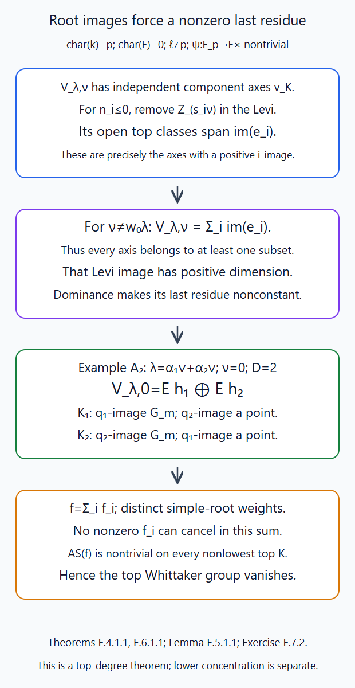
Theorem F.4.1.1 and Lemma F.5.1.1 prove the basis argument used in Theorem F.6.1.1. The \(A_2\) example is computed in Exercise F.7.2. Editable SVG source. This top theorem does not alone prove vanishing of lower compact degrees.

F.7. Exercises
Exercise F.7.1 (medium). For \(GL_2\), \(\eta=(3,0)\), \(\nu=(1,2)\), find the open rank-one slice and its conductor \(-\nu\) character. Compute the entire compact complex of the raw open-orbit coefficient. Explain its relation to the top theorem.
Solution. Here \(m=3\), \(n=-1\), \(s=-2\), \(r=1\). Thus \(x(t)=a_{-2}t^{-2}\), with \(a_{-2}\ne0\), gives \(\mathbf G_m\). The conductor \(-\nu=(-1,-2)\) is dominant and its residue is \(a_{-2}\). The raw IC restriction on the orbit is \(E[3]\). Lemma E.1.1.1 gives \(R\Gamma_c(\mathbf A^1,\mathcal L_\psi)=0\), while its zero fibre is the unit \(E\). Localization yields \(R\Gamma_c(\mathbf G_m,\mathcal L_\psi)=E[-1]\). Hence the raw open-slice complex is \(E[2]\): its only group is in degree \(-2\), while the top degree \(h_\nu=-1\) vanishes. The full-IC top theorem does not determine the lower groups or their boundary attaching maps.
Exercise F.7.2 (advanced). In type \(A_2\), take \(\lambda=\alpha_1^\vee+\alpha_2^\vee\) and \(\nu=0\). Determine the number of top components, their generic simple-Levi images and fibre dimensions, and the consequence for \(\chi_0\).
Solution. The dual highest weight is its highest root, so its module is the adjoint module. To verify this identification, the root decomposition has highest-root line; simplicity of the type \(A_2\) Lie algebra follows directly from its matrix units. A nonzero ideal is stable under the diagonal adjoint operators, so their weight projections give either a matrix unit \(E_{ab}\) or a nonzero trace-zero diagonal matrix \(H\). In the latter case some diagonal entries differ, and \([H,E_{ab}]\) gives a matrix unit. From \(E_{ab}\), its bracket with \(E_{ba}\) gives a diagonal difference; brackets with the remaining matrix units then give every off-diagonal unit and both diagonal differences. Thus the ideal is the whole algebra. Its zero-weight space is \(E h_1\oplus E h_2\), and \(e_i\) from the negative-simple-root line has image \(E h_i\). These two lines are independent in characteristic-zero coefficients. Thus there are exactly two top component axes. Theorem F.4.1.1 assigns one to each raising image, and they are distinct. In the matching Levi the label is \(\eta_i=\alpha_i^\vee\), with \(m=2,n=0\), so its generic image is \(\mathbf G_m\). In the other Levi the label is zero and the image a point. There are no other labels in this component: the adjoint weights on its simple-coroot line are \(-\alpha_i^\vee,0,\alpha_i^\vee\).
Since \(d_\lambda=4\) and \(D=2\), the dimension formula gives generic fibres of dimensions one and two respectively. The trace vector of each component is a nonzero multiple of its \(h_i\); that multiple depends on the root frame. On each component its matching last residue is nonconstant. Distinct simple-root weights prevent cancellation in their sum \(\chi_0\), and Theorem F.6.1.1 gives zero top Whittaker group. No raw trace normalization is identified with a chosen Lie-algebra basis scalar.
Appendix G. Actual Whittaker strata and finite Hecke coefficients
Work on \(X=\mathbf P^1\), with \(x=0\), coordinate \(t\) there and \(u=t^{-1}\) on the complementary affine chart. This global model supplies the actual relevant strata, evaluation and finite Hecke coefficients used in the local Whittaker proof. We retain the original torus lattice and the coefficient operations of Lessons 5 and 11. The free Whittaker patterns, §§3.3, 4.1 and 6 is comparison material. Every construction and coefficient comparison used below is proved here or in the indicated earlier lesson.
G.1. Torus bundles, Laurent normal forms and represented strata
Theorem G.1.1.1. Set \(\gamma=2\rho^\vee=\sum_{\alpha>0}\alpha^\vee\in X_*(T)\). Let \(\mathcal T_0\) be the T-torsor induced from \(\mathcal O(-1)^\times\) by \(\gamma\), and \(\mathcal T_\mu=\mathcal T_0(-\mu x)\). Thus for a positive root \(\beta\), \[ a_\beta=\langle\beta,\gamma\rangle=2\operatorname{ht}(\beta),\quad b_\beta=\langle\beta,\mu\rangle,\quad \mathcal L_{\beta,\mu}=\mathcal O(-a_\beta-b_\beta). \tag{G.1.1} \] No half-coweight is required to belong to the original lattice. For dominant \(\mu\), the functor \(\mathcal B_\mu\) of B-bundles with a specified identification of their T-quotient with \(\mathcal T_\mu\) is an affine scheme \[ \mathcal B_\mu\simeq M_\mu\simeq\mathbf A^{m_\mu},\qquad m_\mu=\sum_{\beta>0}(a_\beta+b_\beta-1)=m_0+h_\mu. \tag{G.1.2} \] Here \(M_\mu\) is the ordered root-parameter space with coefficient range \(-a_\beta<j<b_\beta\) in its \(\beta\)-coordinate.
Proof. The root products and their triangular multiplication are those of Root data, Weyl chambers and the Bruhat decomposition, §5. Order positive roots by height. On the two affine opens the T-torsor has fixed frames. The outside frame in the local \(\mathcal T_0\)-frame gives root coefficients \(t^{-a_\beta}R[t^{-1}]\); the disc frame for \(\mathcal T_\mu\) gives \(t^{b_\beta}R[[t]]\). Define \[ H_-(R)=\operatorname{Ad}(t^{-\gamma})N(R[t^{-1}]),\qquad H_{+,\mu}(R)=\operatorname{Ad}(t^\mu)N(R[[t]]). \tag{G.1.3} \] For every ring \(R\), multiplication gives the natural bijection \[ H_-(R)\times M_\mu(R)\times H_{+,\mu}(R) \xrightarrow{\sim}N(R((t))). \tag{G.1.4} \] To prove it, begin at height one. Each Laurent series splits uniquely into powers \(j\le-a_\beta\), \(-a_\beta<j<b_\beta\), and \(j\ge b_\beta\). The ranges are disjoint since \(a_\beta\ge2\), \(b_\beta\ge0\). At each later root the product coordinate is its three unknown coordinates plus a polynomial in the already determined lower-height coordinates. Subtract that known polynomial and split by the same three ranges. This proves existence and uniqueness inductively. The global part is a finite Laurent polynomial and the local part a power series. Every output coefficient depends on finitely many input coefficients on any specified pole bound. Thus these are actual morphisms of the bounded root-coordinate schemes and their inverse limits. No commutator constant is divided out, so the argument retains every geometric characteristic and parameter nilpotent.
The identical argument with \(R[t]\) on the right gives algebraic Laurent-polynomial gluing on \(U_0\cap U_\infty\). A torsor for a vector-group bundle on an affine scheme is trivial: its additive transition cocycle glues an extension \(0\to L\to V\to\mathcal O\to0\) by upper triangular matrices, and projectivity of the quotient \(\mathcal O\) splits that extension. A central root-height series then proves that every torsor for the twisted N is trivial on each of these affine opens. Indeed trivialize its quotient by the last central vector subgroup by induction; the inverse image of that trivialization is a vector-group torsor and has a section. This proof applies over arbitrary affine parameter rings and commutes with flat descent.
Such B-bundles with fixed T-quotient are the torsors for the N twisted by that T-bundle: twisting the split \(T\subset B\) frame gives this equivalence directly on gluing functions and their isomorphisms. Their transition functions therefore reduce uniquely to \(M_\mu\) by the polynomial version of (G.1.4). An automorphism would give two different global/local factorizations of the same middle representative, so it is the identity. This proves the groupoid equivalence with the represented affine scheme on every affine parameter base; descent proves it for all bases. Its dimension is the coefficient count (G.1.2). Central characters of \(\mathcal T_\mu\) are retained even though they act trivially on N.
Finally the formal quotient \(S_\mu=N((t))/H_{+,\mu}\) is \(H_-\times M_\mu\) by (G.1.4), and its map to \(\mathcal B_\mu\) is projection. It is the actual forgetful map from a formal modification to its global B-bundle: the middle representative algebraizes that bundle, and global and disc changes of frames are precisely its two factors. For finite approximations take the root coefficients of \(H_-\) in \(-c\operatorname{ht}(\beta)\le j\le-2\operatorname{ht}(\beta)\), \(c\ge2\). These form a finite-dimensional unipotent group \(H_{-,c}\): commutator exponents add within the bounds. Their union is \(H_-\). Thus each approximation is the actual trivial smooth \(H_{-,c}\)-torsor \(H_{-,c}\times M_\mu\to M_\mu\). ∎
G.2. The global evaluation is the actual residue
Lemma G.2.1.1. The inclusion \(\mathcal L_{\alpha_i,\mu}=\Omega_X(-b_i x)\hookrightarrow\Omega_X\) and the simple-root quotient define a global evaluation \(e_\mu:\mathcal B_\mu\to\mathbf A^1\). In the preceding coordinates, \[ e_\mu(m)=\sum_i a_{i,-1}=\chi_0(m). \tag{G.2.1} \] Its pullback to \(S_\mu\) is the descended conductor-zero character, normalized to zero at \(t^\mu\).
Proof. The simple-root coordinates add under root multiplication: every nontrivial commutator term has higher height. Hence they give a homomorphism \(N\to\prod_i\mathbf G_a\), without needing a statement about the full abelianization in small characteristic. A twisted N-torsor gives an additive cocycle for each \(\mathcal L_{\alpha_i,\mu}\). Its first-cohomology class is its Laurent coordinate modulo outside and local sections. In the \(\mathcal T_0\)-frame these are powers \(j\le-2\) and \(j\ge b_i\). Inclusion into \(\Omega_X\) changes the latter bound to \(j\ge0\). Its remaining class is exactly \(a_{i,-1}t^{-1}dt\), so its trace is \(a_{i,-1}\). Explicitly the two-open Čech quotient is \[ R[t,t^{-1}]dt\big/(R[t]dt+t^{-2}R[t^{-1}]dt)=R\,t^{-1}dt. \tag{G.2.2} \] Take the positive trace that sends that generator to one. The frames \(dt\) on \(U_0\) and \(-du\) on \(U_\infty\) give the displayed outside bound and this sign.
Residue is coordinate independent. For \(u=t a(t)\), with \(a\) a unit, the residue of \(u^rdu\) is one at \(r=-1\) and zero otherwise. At \(r=-1\) use \(du/u=dt/t+da/a\); at \(r\ge0\) it is regular. For \(r\le-2\) the required coefficient is a polynomial over \(\mathbf Z[a_0^{\pm1},a_1,\ldots]\); over its characteristic-zero fraction field it is the zero residue of \(d(u^{r+1})/(r+1)\). The integer polynomial is therefore zero and remains zero under every specialization. This proves the assertion also when the actual characteristic divides \(r+1\), without dividing by it there.
Summing the simple classes gives (G.2.1), an equality of morphisms on parameter rings. The character vanishes on \(H_-\) since its simple coefficients have powers \(\le-2\); it vanishes on \(H_{+,\mu}\) since \(b_i\ge0\). Thus its descent is exactly \(e_\mu\) under the normal form. ∎
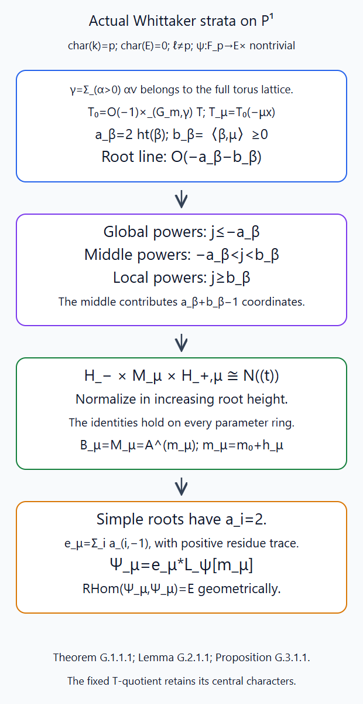
Theorem G.1.1.1 and Lemma G.2.1.1 prove the factorization on all parameter rings and its positive residue sign. Proposition G.3.1.1 retains the actual geometric endomorphism complex. Editable SVG source.

G.3. The stratum character object and its self-maps
Proposition G.3.1.1. Assume characteristic \(p>0\) and the same coefficient field and additive character as Appendix E. Define \[ \Psi_\mu=e_\mu^*\mathcal L_\psi[m_\mu],\qquad \Psi_\mu^{\mathrm n}=\Psi_\mu(m_\mu/2). \tag{G.3.1} \] These are simple perverse objects on \(\mathcal B_\mu\), and their geometric derived endomorphism complex is \(E\) concentrated in degree zero, with its actual identity Frobenius. If G has positive semisimple rank, their entire compact complexes on the stratum vanish.
Proof. The affine scheme is smooth and connected of dimension \(m_\mu\). Its rank-one line is lisse by the finite étale Artin–Schreier construction in E.1.1.1. A shifted rank-one local system on a connected smooth scheme is simple perverse. On any proper smooth closed stratum of codimension \(c>0\), its ordinary restriction has perverse degree \(-c\). Structural duality gives exceptional restriction in perverse degree \(c\). The strict closed restriction criterion therefore excludes a closed-supported subobject or quotient. On a dense smooth open a nonzero sub-local system of a rank-one line is the entire line. Stratifying a proposed proper support and applying these two statements proves simplicity, using the actual duality and perverse localization of Lesson 5, Theorems P.3.3.1 and P.3.4.1 and Lesson 6, Appendix A. The half twist does not change its geometric simplicity.
The tensor dual of that line times the line is the unit with its actual evaluation. Thus its derived endomorphisms are \(R\Gamma(\mathbf A^{m_\mu},E)\). Iterating the affine compact trace of Lesson 5, Lemma Q.1.2.1 gives \(R\Gamma_c(\mathbf A^{m_\mu},E)=E(-m_\mu)[-2m_\mu]\); structural duality and the smooth dualizing comparison give \(R\Gamma(\mathbf A^{m_\mu},E)=E\). Its generator is the identity, and Frobenius fixes it. Shifts and twists cancel in this endomorphism calculation. This is an equality of actual complexes, not merely an Ext-dimension count.
When the root set is nonempty, \(e_\mu\) is a nonzero linear form in the affine coordinates: every simple root has its -1 coefficient. Lemma E.1.1.1 computes compact cohomology of that linear-character pullback as zero in all degrees. For a torus there are no root coordinates, the stratum is a point and its character object is E. These are assertions on the represented stratum; cleanness across its compactified boundary remains a further theorem. ∎
G.4. The actual finite Hecke chart and evaluation comparison
Theorem G.4.1.1. Let \(\mu\) and \(\eta\) be dominant, put \(\nu=\eta-\mu\), and fix dominant \(\lambda\). Set \[ X_{\lambda\nu}=Z_\lambda\cap S_\nu,\qquad Z_{\mu,\eta}^{\lambda}=\mathcal B_\mu\times X_{\lambda\nu},\qquad l:Z_{\mu,\eta}^{\lambda}\to\mathcal B_\mu. \tag{G.4.1} \] There is an actual target morphism \(r\) to \(\mathcal B_\eta\) classifying the compatible B-reduction after the bounded G-modification, and \[ e_\eta\circ r=e_\mu\circ l+\chi_\mu^\nu\circ\operatorname{pr}_X. \tag{G.4.2} \]
Proof. In the universal middle representative \(m\) over \(\mathcal B_\mu\), write a point of \(S_\nu\) as \(n t^\nu G(O)\). Its modified lattice relative to the background bundle is \[ m t^\mu n t^\nu=p t^\eta, \qquad p=m\,\operatorname{Ad}(t^\mu)n\in N((t)). \tag{G.4.3} \] Normalize \(p\) by (G.1.4) for \(\eta\), writing \(p=h_-m'h_{+,\eta}\). Its middle part \(m'\) defines \(r\). Changing \(n\) by the stabilizer of \(t^\nu\) changes \(p\) on the right by \(H_{+,\eta}\), so \(m'\) is unchanged. On a fixed pole bound the normal-form coefficients are finite polynomial expressions. Therefore \(r\) is a scheme morphism on the actual finite intersection, with all its defining coefficient ideals; reduction and its actual coefficient equivalence can be used if that intersection has nilpotents.
This also proves its moduli interpretation. The universal B-bundle is trivialized on the disc by its Čech presentation. Extending its structure group and applying the displayed finite modification gives the G-bundle lattice in (G.4.3). The same meromorphic N-reduction away from x acquires T-quotient \(\mathcal T_\eta\) because its semi-infinite label is \(\eta\). The normal form supplies precisely its global B-bundle. A change of disc \(N\)-frame produces the usual \(N(O)\)-twisted correspondence and the same descent; our universal trivialization gives the actual product chart (G.4.1). All constructions recover the modification and both reductions, so there is no replacement of a correspondence by its dimensions.
Since \(\chi_0\) is additive on products of \(N\) and zero on both outside and \(\eta\)-disc factors, applying it to (G.4.3) gives \(e_\eta(m')=e_\mu(m)+\chi_0(\operatorname{Ad}(t^\mu)n)\). This is (G.4.2), with the positive residue sign. Its function descends since \(\mu+\nu=\eta\) is dominant. All maps are defined over the split finite field, when the data are, so this equality and the additive character-line comparison retain Frobenius. ∎
G.5. Actual compact images, shifts and normalized Weil lines
Theorem G.5.1.1. Put \(C_{\lambda\mu\nu}=R\Gamma_c(X_{\lambda\nu},I_\lambda\otimes(\chi_\mu^\nu)^*\mathcal L_\psi)\). On the finite chart one has the actual comparisons \[ Rl_!(r^*\Psi_\eta\otimes\operatorname{pr}_X^*I_\lambda) =\Psi_\mu\otimes C_{\lambda\mu\nu}[h_\nu], \tag{G.5.1} \] \[ Rl_!(r^*\Psi_\eta^{\mathrm n}\otimes\operatorname{pr}_X^*I_\lambda(d_\lambda/2)) =\Psi_\mu^{\mathrm n}\otimes C_{\lambda\mu\nu}(D)[h_\nu], \qquad D={d_\lambda+h_\nu\over2}. \tag{G.5.2} \] Both retain the actual coefficient transitions, base change, projection, units and Frobenius. The degree-zero coefficient in the normalized formula has Frobenius the identity.
Proof. Pull back the additive character-line comparison of E.1.1.1 along (G.4.2). It identifies \(r^*e_\eta^*\mathcal L_\psi\) with the product of \(l^*e_\mu^*\mathcal L_\psi\) and the \(X\) character line, preserving the zero units. The stratum shifts differ by \(m_\eta-m_\mu=h_\eta-h_\mu=h_\nu\). Apply the actual proper-support projection formula Lesson 5, Theorems O.4.3.1 and O.4.2.1. They give (G.5.1) as a comparison of complexes and specified maps on all parameter bases.
The half twists on the left of (G.5.2) add to \((m_\eta+d_\lambda)/2\). Removing the source half twist \(m_\mu/2\) leaves exactly \((d_\lambda+h_\nu)/2=D\). This gives (G.5.2); negative or odd shifts are kept, with the previously chosen square root \(a\) of \(q\). The top group of the raw \(C\) has actual scalar \(q^D\) by E.5.1.1. Its extra twist \((D)\) changes that operator to the identity, and its shift \([h_\nu]\) places it in degree zero. No assertion about lower coefficient groups is used here. ∎
G.6. The relevant-stratum Hecke bound for the zero label
Theorem G.6.1.1. For \(\eta=0\) and dominant \(\mu\), the normalized complex in (G.5.2) has perverse degrees \(\le0\) on \(\mathcal B_\mu\). They are strictly negative unless \(\mu=-w_0\lambda\). In that extremal case the entire complex is \(\Psi_\mu^{\mathrm n}\), by its actual unit/trace comparison.
Proof. Here \(\nu=-\mu\). E.4.1.1 says that \(C\) has ordinary degrees \(\le h_\nu\). Hence \(C(D)[h_\nu]\) has ordinary degrees \(\le0\). Tensoring that point complex with the lisse perverse \(\Psi_\mu^{\mathrm n}\) converts its ordinary degrees into the same perverse degrees on the smooth stratum. If \(\nu\ne w_0\lambda\), F.6.1.1 kills its degree zero, so the bound is strictly negative. If \(\nu=w_0\lambda\), the entire slice is a point in the open orbit and \(C=E[d_\lambda]\). Now \(h_\nu=-d_\lambda\) and \(D=0\), so the coefficient complex in (G.5.2) is exactly \(E\) in degree zero with the actual zero-character unit. This identifies the compact image with \(\Psi_\mu^{\mathrm n}\), including Frobenius and the central label. These are the actual relevant-stratum bounds needed in the Hecke calculation. They do not yet construct the proper compactified Hecke morphism or prove its exceptional boundary bounds. ∎
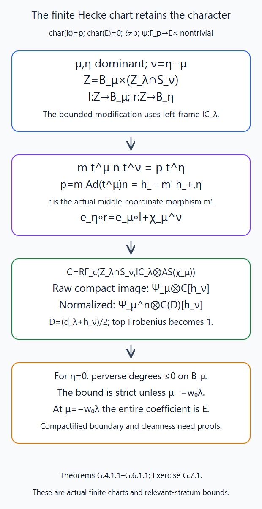
Theorems G.4.1.1–G.6.1.1 prove the finite kernel comparisons and the relevant-stratum bounds. Proper compactification and exceptional boundary bounds are further requirements. Editable SVG source.

G.7. Exercises
Exercise G.7.1 (medium). For \(GL_2\), take \(\mu=0\), \(\eta=\lambda=(1,0)\). Compute the torus bundles, the two relevant strata, the actual target map of (G.4.1), and both compact images in (G.5.1)–(G.5.2).
Solution. Here \(\gamma=(1,-1)\), so \(\mathcal T_0\) is the pair \((\mathcal O(-1),\mathcal O(1))\), and \(\mathcal T_\eta\) is \((\mathcal O(-2),\mathcal O(1))\). Their root lines are \(\mathcal O(-2)\) and \(\mathcal O(-3)\). The middle representatives are \(u_\alpha(a t^{-1})\) and \(u_\alpha(a t^{-1}+b)\), giving \(\mathcal B_0=\mathbf A^1\), \(\mathcal B_\eta=\mathbf A^2\), with evaluations \(a\) in both. The highest slice has representative \(u_\alpha(z)t^\lambda\), by Lesson 11, Lemma B.1.1.1. Thus (G.4.3) has \(p=u_\alpha(a t^{-1}+z)\), already in its target middle form. The actual morphism is \(r(a,z)=(a,z)\); its conductor-zero character on \(z\) is zero.
The raw IC restriction is \(E[1]\), with compact complex \(E(-1)[-1]\). Here \(h_\nu=1\) and \(D=1\), so (G.5.1) gives \(\Psi_0\otimes E(-1)\), with the actual affine trace. In (G.5.2) the extra twist \((1)\) and shift \([1]\) turn that coefficient into the unit. The normalized compact image is exactly \(\Psi_0^{\mathrm n}\). This verifies the target morphism, positive evaluation comparison, shifts and Weil normalization.
Exercise G.7.2 (advanced). For \(SL_3\) and \(\mu=0\), calculate the full middle scheme, its evaluation and its character-object self-maps. Explain why a model keeping only simple-root coordinates loses data, and check characteristic two.
Solution. The positive root heights are \(1,1,2\), so \(m_0=1+1+3=5\). An ordered representative is \[ u_{12}(a t^{-1})u_{23}(b t^{-1}) u_{13}(c_{-3}t^{-3}+c_{-2}t^{-2}+c_{-1}t^{-1}). \] Its matrix entry \((1,3)\) is \(c_{-3}t^{-3}+(c_{-2}+ab)t^{-2}+c_{-1}t^{-1}\). Thus the represented stratum is the entire \(\mathbf A^5\), including three higher-root coordinates, and its evaluation is \(a+b\). Keeping only \(a,b\) would discard the actual bundle parameters and change the perverse shift from five to two.
The change between the ordered coordinate \(c_{-2}\) and the matrix coefficient is the polynomial addition of \(ab\), with polynomial inverse subtraction. Both remain inverse in characteristic two; no coefficient is divided out. Proposition G.3.1.1 gives the lisse perverse character object \((a+b)^*\mathcal L_\psi[5]\), geometric derived endomorphism complex \(E\) in degree zero, and zero entire stratum compact complex. The other three coordinates contribute ordinary affine parameters and do not change its nontrivial linear character.
Appendix H. Projective Hecke transport and a full-centre Whittaker reduction
Keep \(X=\mathbf P^1\), \(x=0\), the specified \(T\)-bundle and the coefficient conventions of Appendix G. We first construct actual projective modification maps and their action on meromorphic decorations. We then pass to a group with simply connected derived subgroup while retaining the original torus characters, cocharacters, slice labels and Weil maps. Whittaker patterns, §§5.1–5.3 supplies free comparison material. The constructions and coefficient comparisons used here are proved below or in the linked earlier programme lessons. The finite algebraic compactification and its boundary estimates remain further requirements.
H.1. Relative projective modifications, bounds and inversion
Theorem H.1.1.1. Let \(S\) be a parameter scheme, \(\mathcal E\) a \(G\)-bundle on \(X\times S\), and \(\lambda\) dominant in the original \(X_*(T)\). The modification functor \(\mathcal H_\lambda(\mathcal E)\) classifies a bundle \(\mathcal E'\) and an isomorphism \(\beta:\mathcal E|_{X-x}\simeq\mathcal E'|_{X-x}\), of relative type in the actual Schubert scheme \(Z_\lambda\). It is projective over \(S\) and compatible with arbitrary base change. At a sufficient finite jet level it is \[ \mathcal H_\lambda(\mathcal E)=\mathcal P_j(\mathcal E)\times^{G_j}Z_\lambda, \qquad G_j(R)=G(R[t]/t^j), \tag{H.1.1} \] where \(\mathcal P_j(\mathcal E)\) is the actual torsor of disc frames modulo \(t^j\). For a representation \(V\), its weight decomposition gives \[ c(V,\lambda)=\max_{\xi\in\operatorname{Wt}(V)}|\langle\xi,\lambda\rangle|, \qquad t^cV[[t]]\subset V_{\mathcal E'}|_{\mathcal D_x}\subset t^{-c}V[[t]]. \tag{H.1.2} \] The inverse modification has the same bounds. Exchanging the bundles gives dominant type \[ \lambda^*=-w_0\lambda. \tag{H.1.3} \] All assertions retain the full centre and parameter nilpotents.
Proof. Loop groups and the affine Grassmannian, Lemma 4.1, trivializes the formal bundle after an étale cover of an affine parameter base. Its proved successive lifting through the smooth jets gives the actual frame torsors. In a frame, Beauville–Laszlo gluing and the moduli interpretation, §§1–3 and 7–8 identifies the modification with its point in \(Z_\lambda\); changing that frame acts by \(G[[t]]\). Choose the faithful closed representation and the actual finite closed lattice stages of Loop groups and the affine Grassmannian, §§5–7 and Lemma 7.12. A finite stage containing \(Z_\lambda\) embeds into the ordinary Grassmannian of \(t^{-N}V[[t]]/t^NV[[t]]\). The action on this finite module factors through \(G_j\) for \(j\ge2N\), so its restriction to the closed Schubert scheme factors through that same group, with the defining ideals preserved.
Descend the finite module representation along \(\mathcal P_j\) to a vector bundle on \(S\). Its relative ordinary Grassmannian and the equivariant closed equations of \(Z_\lambda\) descend as well. This realizes (H.1.1) as an actual closed subscheme of that Grassmannian. Its Plücker immersion into the projective bundle of the corresponding exterior power proves projectivity over \(S\). This supplies the linearized ample construction; it does not presume that an arbitrary torsor twist of an arbitrary projective scheme is projective. These equations and frame torsors commute with every base change.
For \(V\), the \(t^\lambda\) weight decomposition gives the inclusions in (H.1.2). Multiplication on either side by a \(G[[t]]\)-element preserves the standard lattice and its scalar bounds, so they hold on the open orbit. Both inclusions are closed incidence conditions in the actual finite module of Loop groups and the affine Grassmannian, Lemma 2.1, and hence on its schematic orbit closure. They hold on every parameter-ring point of that scheme. If \(\Lambda=gV[[t]]\) has these inclusions, applying \(g^{-1}\) gives \(t^cV[[t]]\subset g^{-1}V[[t]]\subset t^{-c}V[[t]]\), proving the inverse bounds on local frame covers and then by descent.
The inverse of \(a t^\lambda b\) is \(b^{-1}t^{-\lambda}a^{-1}\). The dominant member of the orbit of \(-\lambda\) is \(-w_0\lambda\), retaining its original central coordinate. Inverting the punctured-curve isomorphism defines inverse morphisms of the actual bundle-modification functors; these exchange the two bundles and send the open types, and therefore their schematic closures, to the stated inverse types. This is inversion on the modification correspondence, not a supposed map sending a right coset \(gG[[t]]\) to another right coset \(g^{-1}G[[t]]\). Thus the maps and bounds retain nilpotents and the original lattice. ∎
H.2. Meromorphic decoration transport and both Cartesian squares
Proposition H.2.1.1. Fix the actual \(T\)-bundle \(\mathcal T_0\). A meromorphic decoration is a specified family of maps in actual algebraic \(G\)-representations, \[ \kappa^\chi:\mathcal L^\chi_{\mathcal T_0}\longrightarrow V^\chi_{\mathcal E}(*x), \tag{H.2.1} \] with specified \(G\)-equivariant tensor relations and highest-line conditions away from \(x\). If degeneracies away from \(x\) are allowed, impose sheaf injectivity and a finitely presented, parameter-flat quotient there. These quotients are coherent over Noetherian parameter schemes. Central-character isomorphisms and their inverses are included. Let \(\mathcal Y_x\) be this fibre category, with arrows preserving every map. Its definition here does not assume a finite algebraic presentation.
Let \(\mathcal Z_\lambda\) classify a decorated source, a bounded modification and its transported decorated target. Both squares in \[ \begin{array}{ccccc} \mathcal Y_x&\xleftarrow{\ l\ }&\mathcal Z_\lambda&\xrightarrow{\ r\ }&\mathcal Y_x\\ \downarrow&&\downarrow&&\downarrow\\ \operatorname{Bun}_G&\xleftarrow{\ h_l\ }&\mathcal H_\lambda&\xrightarrow{\ h_r\ }&\operatorname{Bun}_G \end{array} \tag{H.2.2} \] are Cartesian as fibre categories. The target-fibre interpretation uses inverse type \(\lambda^*\). Both \(l,r\) are representable by projective schemes: every base change by a parameter scheme is the actual projective scheme of Theorem H.1.1.1.
Proof. The associated punctured-curve isomorphism defines the actual transported map \[ (\kappa')^\chi=\beta_{V^\chi}\kappa^\chi. \tag{H.2.3} \] Allowing poles makes both associated bundles isomorphic. A finite pole bound for a chosen map increases by at most \(c(V^\chi,\lambda)\), by (H.1.2), so this remains a genuine meromorphic section in families. Tensor relations are preserved because \(\beta\) commutes with every equivariant tensor map, including central multiplication and inverse maps. Away from \(x\) it is an isomorphism of bundles, preserving the highest-line, injection and flat-quotient conditions. All these are equalities of maps on parameter rings.
Conversely \(\beta^{-1}\) recovers the unique source decoration from the target. Therefore a modification of a decorated source requires no extra target decoration choice or equation; its transported decoration is determined. This proves the source Cartesian square by the full groupoid-valued functor of points, including its arrows and stabilizers. The inverse construction proves the target square. Both commute with all base changes. Their pullbacks by a parameter scheme are exactly (H.1.1), with type \(\lambda\) or \(\lambda^*\), respectively. That theorem proves the stated representable projectivity. This statement does not by itself prove that \(\mathcal Y_x\) is an algebraic stack. ∎
H.3. Actual coefficient action and coherent composition
Theorem H.3.1.1. A coefficient object on \(\mathcal Y_x\) means a cartesian family of complexes \(F_S\) for every parameter scheme \(S\to\mathcal Y_x\), with specified coherent derived pullback comparisons. On existing algebraic charts these are the usual scheme complexes. An equivariant Satake complex \(A\) on a fixed finite Schubert support descends along (H.1.1) to its vertical complex \(A_{\lambda,S}\). For a normalized simple object it is \(I_\lambda(d_\lambda/2)\). Ordinary descent introduces no shift equal to the dimension of the frame group.
The left-frame action is the actual proper image \[ (\mathsf H_A F)_S=Rl_!(r^*F\otimes A_{\lambda,S}) =Rl_*(r^*F\otimes A_{\lambda,S}). \tag{H.3.1} \] It defines a cartesian family, commutes with base change, has its actual unit, and has the coherent comparisons \[ \mathsf H_A\mathsf H_B\simeq\mathsf H_{A*B}. \tag{H.3.2} \] The maps preserve coefficient transitions, units and Frobenius. Exchanging the two projections sends the normalized simple vertical object to the one labelled by \(\lambda^*\).
Proof. Trivialize the finite frame torsor on an étale cover of \(S\), as in Theorem H.1.1.1. On that cover the modification scheme is the product with \(Z_\lambda\), and its vertical complex is \(E\boxtimes A\). Changing the trivialization acts through \(G_j\). The actual equivariance of \(A\) gives the comparison on the overlap, with its group-law cocycle. The actual augmented Čech resolution in Hypercoverings, Theorem 3.3 glues these product complexes on the modification scheme. Explicitly, take the coherent complex on every level of the Čech nerve of the frame-trivializing cover, and its derived direct-image totalization on the modification scheme. Its bounded-below model has only finitely many terms contributing to each fixed total degree. Étale base change in Smooth base change and local acyclicity, Theorem 1.1, with its geometric foundations proved in Constructible complexes on algebraic varieties, §§AL–AM, pulls this totalization to the cover. The pulled-back nerve has its diagonal section; the extra degeneracy contracts its augmented complex onto the given complex there. The augmentation is consequently an isomorphism on that cover, and on all geometric stalks. This proves effective descent with the specified coherent cocycle. Apply it first to the finite coefficient reductions; their natural augmentations and uniform bounds give the completed and rational comparisons of Semi-infinite orbits and weight functors, Appendices M–N. At a larger jet level the same datum is pulled back along the jet homomorphism, so its cocycle and descended object are unchanged. Ordinary descent adds no torsor-dimension shift; normalization for a smooth atlas is a separate smooth-pullback operation.
The map \(l\) is proper on the finite support by Proposition H.2.1.1, so the actual \(Rl_!\) of Semi-infinite orbits and weight functors, Theorem O.4.2.1 is \(Rl_*\). Proper base change Theorem O.4.1.1 for the source Cartesian square identifies its pullback along \(S'\to S\) with (H.3.1) on \(S'\). The input target family and the vertical complex already have their coherent pullback comparisons. Composing them gives the required cartesian family. On existing finite algebraic charts the earlier coefficient functors supply the ordinary constructible complexes. This does not claim a completed enhancement for the full ind-stack.
For two kernels form the actual chain of decorated bundles \(\mathcal E_0\to\mathcal E_1\to\mathcal E_2\). Forgetting \(\mathcal E_1\) composes the actual punctured-curve isomorphisms and the decorations in (H.2.3). In disc frames this is the twisted convolution space and proper convolution map proved in Lesson 7 and used in The Mirković–Vilonen theorem: identifying the dual group, Theorem B.4.1.1. The composite finite support is bounded by the sum of the two dominant bounds. Both iterated actions use the same pullback of \(F\) from \(\mathcal E_2\) and the same ordered tensor of the vertical kernels \(A,B\). Proper base change for the intermediate projection, the projection formula Theorem O.4.3.1 and coherent composition Theorem O.4.2.1 identify them with the proper direct image of that common complex to \(\mathcal E_0\). Pushing first along the convolution map replaces the ordered vertical tensor by \(A*B\). This proves (H.3.2) as an actual comparison, not just a class identity.
For three and four kernels use the common full chain before forgetting any bundle. Every bracketing uses the same coherent direct-image composition and tensor associativity on that chain; their proved composition cocycles give the pentagon. The zero modification is the diagonal with its actual unit, so its action is \(F\) with the actual unit comparison. The inversion comparison on coefficient objects uses the actual finite frames of Convolution and rigidity, Lemma B.1.1.1 and Theorem B.2.1.1. On a sufficiently deep frame scheme its source map \(p\) and inverse-endpoint map \(f\) are smooth with connected fibres of the same dimension \(h_n=n\dim G\), in every geometric characteristic. That theorem constructs \(p^*I(Q)[h_n]=f^*Q[h_n]\) with the actual equivariance, involution and chain reversal. Applied to the raw simple kernel it gives \(I(I_\lambda)=I_{\lambda^*}\), with no additional raw Tate twist; the twist \(d_\lambda\) in the contragredient dual involves Verdier duality separately. Therefore applying the same half twist \(d_\lambda/2=d_{\lambda^*}/2\) gives exactly the stated normalized inverse kernel. These common-frame comparisons descend to our local disc-frame charts and agree under frame changes by that theorem's action cocycle. This supplies the actual coefficient comparison rather than inferring it just from inverse labels. Descent, base change, projection and composition are defined over the split finite field when the data are, so they preserve the specified Weil maps. ∎
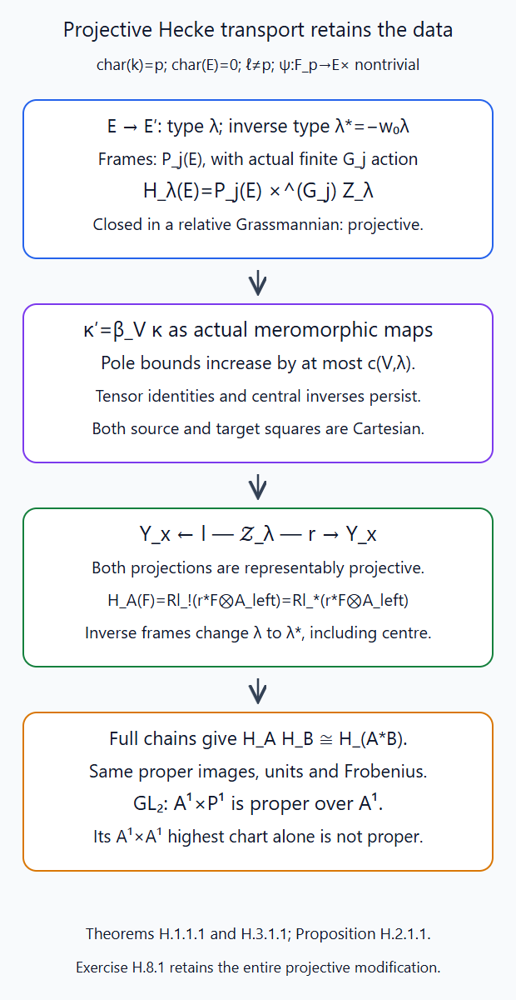
Theorem H.1.1.1 and Proposition H.2.1.1 prove the full projective modification and both Cartesian squares. Theorem H.3.1.1 constructs the actual action on cartesian coefficient families and its common-chain composition. Editable SVG source.

H.4. An explicit smooth central torus cover
Theorem H.4.1.1. For a split connected reductive \(G\), let \(G_{\rm sc}\to G_{\rm der}\) be its actual simply connected central cover from that programme theorem, with torus \(T_{\rm sc}\), weight lattice \(P=X^*(T_{\rm sc})\), and coroot lattice \(P^*=X_*(T_{\rm sc})\). There is a split connected reductive group \[ \widetilde G=G_{\rm sc}\rtimes T,\qquad q(h,t)=\phi(h)t,\qquad \widetilde T=T_{\rm sc}\times T, \tag{H.4.1} \] whose kernel \(S\) is the smooth central torus \(T_{\rm sc}\). The displayed semidirect action is the descended conjugation action of \(T\) on \(G_{\rm sc}\). Its derived subgroup is exactly \(G_{\rm sc}\).
If \(X=X^*(T)\), the torus character map and its dual are \[ q^*:X\hookrightarrow P\oplus X,\quad x\mapsto(\phi_T^*x,x), \qquad q_*:P^*\oplus X_*(T)\to X_*(T),\quad (m,\ell)\mapsto\phi_{T*}m+\ell. \tag{H.4.2} \] The cokernel of \(q^*\) is the free lattice \(P\). A root is \((\alpha_{\rm sc},\alpha)\), and its coroot is \((\alpha^\vee_{\rm sc},0)\). In particular every original cocharacter has the canonical lift \((0,\lambda)\). The root subgroup maps and unipotent radical map \(\widetilde N\to N\) are isomorphisms on all parameter rings.
Proof. Pinnings and the classification of split reductive groups, Theorem 10.1 and its derived-group subsection proves the presentation of \(G\) is \((G_{\rm sc}\times C)/H\), with \(C\) a split torus and \(H\) the actual finite diagonalizable central subgroup, which may be nonreduced. Its torus is \((T_{\rm sc}\times C)/H\). On that finite faithfully flat cover of \(T\), let \((a,c)\) act on \(G_{\rm sc}\) by conjugation with \(a\). Changing the lift by an element of \(H\) changes \(a\) by a central element, so the actions agree as morphisms on the whole fibre product. Effective affine descent of this morphism gives an actual \(T\)-action; multiplication and its action identity descend from the same cover. It fixes \(T_{\rm sc}\), scales the root \(\alpha\) by the actual character \(\alpha(t)\), and satisfies \(\phi(\sigma_t(h))=t\phi(h)t^{-1}\). Thus (H.4.1) is a group homomorphism. The semidirect product is smooth and connected. Its kernel is determined on all test rings: if \(\phi(h)t=1\), then \(h\in T_{\rm sc}\), and \(t=\phi_T(h)^{-1}\). The first assertion follows from the same central quotient presentation, whose inverse image of \(T\) is \(T_{\rm sc}\times C\). Hence \[ S=\{(a,\phi_T(a)^{-1}):a\in T_{\rm sc}\}. \tag{H.4.3} \] For such a pair, \(\sigma_{\phi_T(a)^{-1}}\) is conjugation by \(a^{-1}\). Multiplication in the semidirect product shows that the pair commutes with \(G_{\rm sc}\); it also commutes with \(T\), since the latter fixes \(T_{\rm sc}\). Thus the kernel is central. The map is fppf surjective: the presentation cover \((h,c)\) of \(G\) lifts to \((h,\operatorname{image}(1,c))\). It is the actual torsor under the smooth split \(S\), and therefore is smooth.
The quotient of the semidirect product by \(G_{\rm sc}\) is \(T\). Since the programme theorem proves \(G_{\rm sc}\) perfect as an fppf sheaf, it is exactly the derived subgroup. Reductivity follows by an actual central quotient already covered by the programme theorem. The map \[ G_{\rm sc}\times T_{\rm sc}\times C\longrightarrow\widetilde G,\qquad (h,a,c)\longmapsto(ha^{-1},\operatorname{image}(a,c)) \] is a homomorphism: the descended torus action is \(\operatorname{Ad}(a)\), which gives the product \(h_1h_2(a_1a_2)^{-1}\) in its first coordinate. It is fppf surjective by the same torus cover. Its kernel is \(\{(a,a,c):(a,c)\in H\}\), an actual finite diagonalizable central subgroup. Thus \(\widetilde G\) is the central quotient of this split reductive product. Root data, Weyl chambers and the Bruhat decomposition, Theorem 7.1, proves that quotient reductive, including when its kernel is nonreduced. Its split torus is the displayed one. Conjugation gives the displayed root characters, and the embedded simply connected group gives their coroots. The character map in (H.4.2) is the graph of restriction; its quotient is \(P\) via \((p,x)\mapsto p-\phi_T^*x\). Its dual gives the cocharacter formula. The original root groups are unchanged under the finite central quotient in the programme construction; their ordered products therefore give \(\widetilde N\simeq N\) on all rings. This also proves the root-line and central-coordinate assertions, with no reduced substitute for \(H\). ∎
H.5. Schubert supports map by a universal homeomorphism
Theorem H.5.1.1. Fix dominant \(\lambda\in X_*(T)\), and put \(\widetilde\lambda=(0,\lambda)\). The induced map \[ u:Z_{\widetilde\lambda}(\widetilde G)\longrightarrow Z_\lambda(G) \tag{H.5.1} \] is proper, surjective and universally injective, hence a universal homeomorphism. This assertion does not identify the two schemes as schemes.
Proof. Extension of the structure group gives the actual map of Grassmannian functors, hence of their represented finite supports. The lift is dominant because its root pairings equal those of \(\lambda\). The map sends the open source orbit into the target orbit. The ideal of the target closed Schubert support therefore vanishes on the open source orbit and on its schematic closure. It factors through the displayed target scheme. Both supports are projective by Loop groups and the affine Grassmannian, Theorem 7.1, so the map is proper.
Over any algebraically closed extension \(\Omega\), the maps \(\widetilde G(\Omega[[t]])\to G(\Omega[[t]])\) and \(\widetilde G(\Omega((t)))\to G(\Omega((t)))\) are surjective. Indeed a fibre is an \(S\)-torsor; a split-torus torsor is a tuple of invertible modules, and over a field or a local power-series DVR each is free. The map on open orbit points is therefore surjective. Properness makes its geometric image closed; containing the dense open target orbit makes it all of the target Schubert support.
To prove uniqueness, take two source points \(g_1\widetilde G(O),g_2\widetilde G(O)\) with the same target point. Lift the integral element \(q(g_1)^{-1}q(g_2)\) to \(a\in\widetilde G(O)\). Then \(s=g_2a^{-1}g_1^{-1}\in S(F)\). Let \(A:\widetilde G\to T\) be the semidirect-product projection. On the whole reduced source Schubert scheme its torus-Grassmannian image is the reduced point \(t^\lambda\): this holds on the open orbit, and its closed incidence equations hold on the schematic closure. Thus the torus valuations of \(A(g_1),A(g_2)\) agree, and \(A(a)\) is integral. Write \(s=(b,\phi_T(b)^{-1})\), and let \(m\in P^*\) be the valuation of \(b\). Its projected valuation is \(-\phi_{T*}m=0\). The map \(\phi_{T*}\) identifies the coroot lattice with the original coroot lattice, so is injective. Therefore \(m=0\), whence \(b\in T_{\rm sc}(O)\) and \(s\in S(O)\). The two source right cosets are equal.
This uniqueness holds after every algebraically closed field extension. Each geometric fibre of a finite-type map consequently has exactly one geometric point. It is a zero-dimensional scheme: on an affine finite-type neighbourhood a unique maximal ideal is its nilradical by The Nullstellensatz and Jacobson rings, Theorem 2.2, and finitely many nilpotent algebra generators make its coordinate ring Artinian. Its residue extension is purely inseparable, since two separable embeddings would give two geometric points. These facts also show injectivity after every base change: over any point of the new base, pass to an algebraic closure of its residue field and use that unique geometric fibre. Thus the map is universally injective. A proper surjective map is universally closed, and the resulting universally closed bijection on points after any base change is a homeomorphism. This proves the assertion without assuming normality, separability or an isomorphism of supports. ∎
H.6. Actual coefficient equivalence on these supports
Lemma H.6.1.1. For a proper universal homeomorphism \(u:Y'\to Y\) between finite-type schemes, the actual comparisons are \[ u^*\simeq u^!,\qquad Ru_*=Ru_!,\qquad F\xrightarrow{\sim}Ru_*u^*F,\qquad u^*Ru_*F'\xrightarrow{\sim}F'. \tag{H.6.1} \] They are inverse equivalences of the constructible coefficient categories used here. They preserve tensor units, actual duality, the perverse heart and IC intermediate extensions. In (H.5.1), \[ u^*I_\lambda\simeq I_{\widetilde\lambda},\qquad u^*\bigl(I_\lambda(d_\lambda/2)\bigr) \simeq I_{\widetilde\lambda}(d_{\widetilde\lambda}/2). \tag{H.6.2} \] These are comparisons of actual objects and adjunction maps, preserving Frobenius when the map and data descend to the split finite field.
Proof. A geometric fibre is a finite Artinian scheme with a single point and algebraically closed residue field. Its finite étale algebras are just products of the unique étale lift of that residue field. The finite étale lifting and its algebra maps are proved in Semi-infinite orbits and weight functors, §§A.4.2 and A.5.5. Apply them successively through the nilpotent maximal ideal: for a square-zero step formal étaleness gives the unique lift and its unique maps; the finite nilpotent filtration finishes the argument. Thus its étale coefficient site has the same stalk functor as a point, with no positive cohomology. For a complex pulled from \(Y\) its entire fibre complex is the original geometric stalk, and the restriction adjunction unit is the identity. For a complex on \(Y'\), that same calculation identifies the fibre proper image with its unique stalk and identifies the counit with the identity.
The actual proper base-change theorem of Semi-infinite orbits and weight functors, Theorem O.4.1.1 now makes both the unit and the counit in (H.6.1) isomorphisms on every geometric stalk. Geometric stalks detect isomorphisms of the proved constructible complexes, so they are isomorphisms. Perform this first at the finite coefficient models and reductions of Semi-infinite orbits and weight functors, Appendices M–N; the uniform fibre bound zero retains coherent completion, rationalization and the algebraic scalar extension proved in The Mirković–Vilonen theorem: identifying the dual group, Theorem D.3.1.1. Hence the same actual comparisons hold for our coefficients, with their transition maps.
Properness gives \(u_!=u_*\), including their specified comparisons. An equivalence has the same inverse as its left and right adjoints, so the uniqueness of adjoints identifies \(u^*\) with \(u^!\), using these units and counits. Proper structural duality in Semi-infinite orbits and weight functors, Theorem P.3.3.1 and this identification give \(D_{Y'}u^*=u^*D_Y\). The tensor pullback preserves the unit and tensor comparisons by its actual construction. The map identifies the dimensions of closed supports: geometric fibres have dimension zero, and the ordinary transcendence-degree dimension formula, or chains under this universal homeomorphism, give the same dimension. Thus ordinary support bounds and their duals identify the middle perverse hearts. The functors commute with open restrictions and with closed supports by actual base change. Exactness therefore preserves the image of the canonical map from perverse \(j_!\) to perverse \(j_*\), which is the IC intermediate extension. The open raw IC unit has the same dimension shift and pulls back to the same constant unit, proving the first comparison in (H.6.2). Root pairings give \(d_{\widetilde\lambda}=d_\lambda\), so the identical chosen half twist gives the second.
Every unit, counit, proper base change, completion and duality comparison used is an actual natural map. If defined over the finite field, each commutes with its Weil pullback. The geometric fibre unit is fixed, so no additional Tate line or scalar has been introduced. ∎
H.7. Semi-infinite slices, character maps and Whittaker complexes
Theorem H.7.1.1. If \(X_{\lambda\nu}=Z_\lambda\cap S_\nu\) is nonempty, then \(\lambda-\nu\) belongs to the original coroot lattice. Let \(\theta_{\rm sc}\in P^*\) be its unique lift, and put \[ \widetilde\nu=(-\theta_{\rm sc},\lambda),\quad \widetilde\mu=(0,\mu). \tag{H.7.1} \] The map \(S_{\widetilde\nu}\to S_\nu\) is an isomorphism of the actual orbit functors on all parameter rings. The induced map \[ j:X_{\widetilde\lambda,\widetilde\nu}\hookrightarrow X_{\lambda\nu} \tag{H.7.2} \] is a closed immersion with nilpotent ideal and identical reduced finite slices. Under it the descended conductor characters satisfy \[ j^*\chi_\mu^\nu=\chi_{\widetilde\mu}^{\widetilde\nu},\qquad R\Gamma_c(X_{\lambda\nu},I_\lambda\otimes(\chi_\mu^\nu)^*\mathcal L_\psi) \simeq R\Gamma_c(X_{\widetilde\lambda,\widetilde\nu}, I_{\widetilde\lambda}\otimes (\chi_{\widetilde\mu}^{\widetilde\nu})^*\mathcal L_\psi). \tag{H.7.3} \] The comparison preserves the actual Weil operators, compact-image maps, the raw shifts \(h_\nu\), and the normalization \(D=(d_\lambda+h_\nu)/2\). The relevant global strata also correspond on all parameter bases. Use \(\widetilde{\mathcal T}_0\) induced by the sum of the positive source coroots, which projects to \(\mathcal T_0\); for any dominant lift \(\widetilde\mu\), one has \(\mathcal B_{\widetilde\mu}\simeq\mathcal B_\mu\) and \(\Psi_{\widetilde\mu}^{\mathrm n}\simeq\Psi_\mu^{\mathrm n}\), including the evaluation morphism and its unit.
Proof. A point of \(S_\nu\) has representative \(n t^\nu\). Lift \(n\) through \(\widetilde N\simeq N\), and use the initial lift \(\nu_0=(0,\nu)\). For a point of the source Schubert support lying over this point, lift the integral frame discrepancy as in Theorem H.5.1.1. The remaining discrepancy is a central \(S(F)\)-element of torus valuation \((m,-\phi_{T*}m)\). The semidirect abelianization label of every source point is \(\lambda\). Hence \(\nu-\phi_{T*}m=\lambda\), proving \(\lambda-\nu\) is a coroot and \(m=-\theta_{\rm sc}\). Its source semi-infinite label is exactly (H.7.1).
For arbitrary parameter rings the stabilizer of \(t^\nu\) in \(N((t))\) is \(\operatorname{Ad}(t^\nu)N[[t]]\). To see the scheme assertion, \(N\cap G[[t]]=N[[t]]\) follows from the closed subgroup equations and injectivity of \(R[[t]]\to R((t))\); conjugate by \(t^\nu\). The source root subgroup isomorphism identifies these stabilizers, since every root pairing with \(\widetilde\nu\) equals that with \(\nu\). Thus their actual quotient orbit functors are isomorphic, with the root coordinates and all nilpotents retained.
Both finite intersections are closed subfunctors of this common semi-infinite orbit. The map of Schubert supports sends the source intersection into the target, so it is the closed immersion (H.7.2). The point calculation and universal homeomorphism prove that its underlying sets coincide after all algebraically closed extensions. Its defining coherent ideal is therefore contained in the nilradical of the finite-type target slice, and is nilpotent by Noetherianity. This proves the exact nilpotent-immersion assertion instead of replacing that slice by its set of points.
For the global assertion, \(q\) identifies the source coroot-sum background with the original background. Every root line bundle therefore corresponds, including after twisting by the lifted label. The map \(\widetilde N\simeq N\) is equivariant for \(\widetilde T\to T\), so the two twisted unipotent group bundles are actually isomorphic. Their torsor categories with specified torus quotient are consequently equivalent on every parameter base, by the gluing description proved in Theorem G.1.1.1. The Laurent middle schemes, their dimensions and residue maps are literally the same. Thus the character objects have the same lisse line, perverse shift and half twist; their units and Weil maps correspond. Central data are fixed by the specified torus bundles throughout this comparison.
The simple-root quotient coordinates correspond under \(q\). Conjugation by \(\widetilde\mu\) scales them by the same powers as conjugation by \(\mu\), and the coefficient of \(t^{-1}\) has the same positive residue sign. Their descended functions therefore agree as actual morphisms, proving the first identity in (H.7.3). Dominance of \(\mu+\nu\), when required for descent, is equivalent to dominance of \(\widetilde\mu+\widetilde\nu\), by equality of all simple-root pairings.
Apply Lemma H.6.1.1 to the Schubert map and to the nilpotent closed immersion. Its IC comparison restricts to \(j^*I_\lambda=I_{\widetilde\lambda}\), and the character-line comparison pulls back along the equality of functions. The actual adjunction unit \(F\to Rj_*j^*F\), followed by coherent proper-support composition Theorem O.4.2.1, gives the compact comparison in (H.7.3). Root pairings identify \(d_\lambda,h_\nu\) with their lifted values. Hence the raw shifts and extra twist \(D\) are literally the same. The preceding actual units and residue maps preserve Frobenius, so this transfers concentration, vanishing and multiplicity calculations with their actual operators rather than only their dimensions. ∎
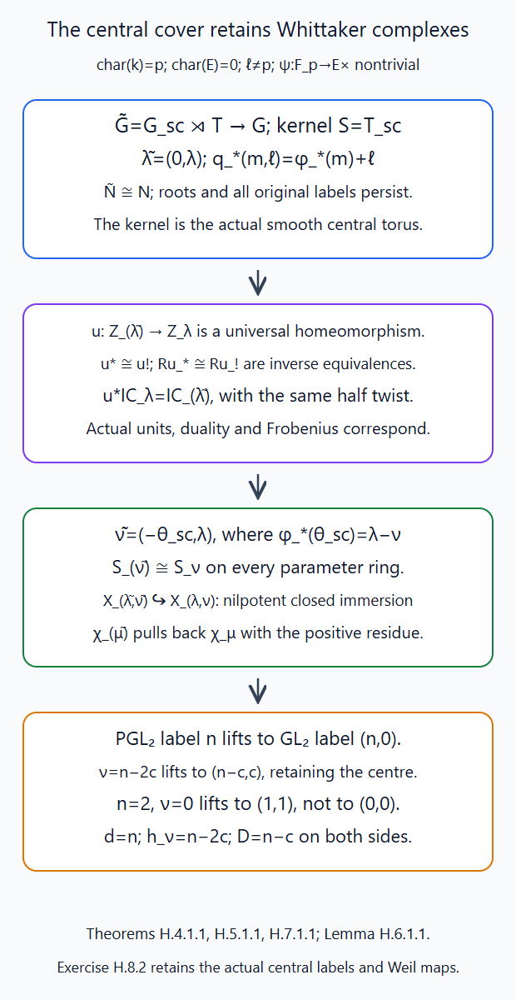
Theorems H.4.1.1, H.5.1.1 and H.7.1.1 and Lemma H.6.1.1 prove the group, support, coefficient and slice comparisons. The cover changes the central lift of a slice, as the \(PGL_2\) example shows. Editable SVG source.

H.8. Exercises
Exercise H.8.1 (medium). For \(GL_2\) and \(\lambda=(1,0)\), identify the full modification scheme over the framed stratum \(\mathcal B_0=\mathbf A^1\), its inverse dominant type, and \(c(V,\lambda)\) for the standard and symmetric-square representations. Compute the fibre of the normalized Hecke action on the constant coefficient family, retaining Frobenius.
Solution. On this Schubert support the actual closed incidence equations are \(tR[[t]]^2\subset\Lambda\subset R[[t]]^2\), with rank-one projective fibre quotient. They hold on the open orbit and its schematic closure. Their entire locus is the projective line of rank-one quotients of \(R^2\); local bases identify that locus with the orbit itself. Thus this is the projective line functor in Loop groups and the affine Grassmannian, §3. The supplied disc frame therefore gives the entire \(\mathbf A^1\times\mathbf P^1\), projective over \(\mathbf A^1\). The chart in Exercise G.7.1 is its open \(\mathbf A^1\times\mathbf A^1\); this chart alone is not proper. The inverse dominant type is \((0,-1)\). Standard weights pair with \(\lambda\) as \(1,0\), so \(c=1\). Symmetric-square weights pair as \(2,1,0\), so \(c=2\); these are the actual two pole bounds.
The normalized vertical kernel on \(\mathbf P^1\) is \(E[1](1/2)\). Its actual compact image is \[ R\Gamma(\mathbf P^1,E[1](1/2)) \simeq E(1/2)[1]\oplus E(-1/2)[-1]. \tag{H.8.1} \] Indeed localization for the affine line and the point at infinity gives the triangle \(R\Gamma_c(\mathbf A^1,E)\to R\Gamma(\mathbf P^1,E)\to E\). The unit \(E\to R\Gamma(\mathbf P^1,E)\) restricts to the identity at infinity, splitting this triangle. The actual affine trace identifies its first term with \(E(-1)[-2]\), by Semi-infinite orbits and weight functors, Theorem Q.1.2.1. These units, restrictions and traces preserve Weil maps. With \(a^2=q\) and the chosen \(E(1/2)\) having Frobenius \(a^{-1}\), the displayed summands have Frobenius \(a^{-1}\) in degree \(-1\) and \(a\) in degree \(1\). Thus a general coefficient-family fibre can have both degrees; the Whittaker concentration theorem requires its additional character and boundary arguments.
Exercise H.8.2 (advanced). For \(G=PGL_2\), write \(\lambda=n\varpi^\vee\), \(\nu=(n-2c)\varpi^\vee\), \(0\le c\le n\), and \(\mu=m\varpi^\vee\), \(m\ge0\). Identify the actual cover in Theorem H.4.1.1 and all lifted labels. Determine when \(\mu+\nu\) is dominant and calculate \(d_\lambda,h_\nu,D\). Explain the zero-slice lift when \(n=2\), and check characteristic two.
Solution. The adjoint torus character is \(\alpha\), with \(\langle\alpha,\varpi^\vee\rangle=1\) and \(\alpha^\vee=2\varpi^\vee\). The cover is \(SL_2\rtimes\mathbf G_m\), where \(z\) acts by conjugation with \(\operatorname{diag}(z,1)\). The actual group isomorphism to \(GL_2\) is \[ (h,z)\longmapsto h\operatorname{diag}(z,1),\qquad g\longmapsto \bigl(g\operatorname{diag}((\det g)^{-1},1),\det g\bigr). \] Both are morphisms on every parameter ring and are mutual inverses; multiplication is exactly the stated semidirect law. The map \(q\) becomes the ordinary \(GL_2\to PGL_2\), with full smooth scalar kernel.
In semidirect torus coordinates \(q_*(r,s)=2r+s\), and the change to the usual \(GL_2\) cocharacter pair is \((r,s)\mapsto(r+s,-r)\). Thus \[ \widetilde\lambda=(n,0),\quad \widetilde\nu=(n-c,c),\quad \widetilde\mu=(m,0),\quad \widetilde\eta=(m+n-c,c). \tag{H.8.2} \] Their images have the original labels \(\lambda,\nu,\mu,\mu+\nu\). The source root pairing of \(\widetilde\eta\) is \(m+n-2c\), so both source and target dominance mean \(m+n-2c\ge0\). The common values are \(d_\lambda=n\), \(h_\nu=n-2c\), \(D=n-c\). For \(n=2,c=1\), the target semi-infinite label is zero and its source label is \((1,1)\). The source support has determinant degree two, so replacing this by \((0,0)\) changes the slice.
The source and target root coordinates and conjugation powers agree. In particular their actual conductor functions take the same coefficient of \(t^{-1}\) with the same positive residue sign. Theorem H.7.1.1 and Lemma H.6.1.1 identify the whole compact complexes, with their actual units, raw shift \([n-2c]\), normalization \((n-c)\), and Weil operators. The group isomorphism, torus exponents and smooth scalar kernel use no division by two in the ground field. They therefore remain valid in characteristic two; the possibly inseparable Schubert map has precisely the coefficient equivalence proved in Lemma H.6.1.1.
Appendix I. Finite bounded decoration schemes and parameter-flat quotients
Here \(R\Gamma\) denotes derived Zariski sections of the indicated algebraic vector bundle. We construct bounded spaces of actual representation maps and polynomial tensor relations, retaining nonflat changes of parameter ring and central inverse maps. The free Whittaker patterns, §§2.1–2.2 describes the global decoration problem. The affine cohomology, projective coherent finiteness and universally exact two-term replacement needed below are fully proved in Constructible complexes on algebraic varieties, §§W.2, W.4 and U.1. The full highest-line generation, affine flag cone and saturation/defect constructions remain further parts of the auxiliary compactification.
I.1. An actual finite two-term section scheme
Proposition I.1.1.1. Let \(R\) be Noetherian and \(\mathcal V\) a finite locally free sheaf on \(\mathbf P^1_R\). There are finite projective \(R\)-modules \(P^0,P^1\), an actual map \(d:P^0\to P^1\), and natural comparisons for every \(R\)-algebra \(A\), \[ R\Gamma(\mathbf P^1_A,\mathcal V_A)\simeq[P^0\otimes_R A\xrightarrow{d\otimes1}P^1\otimes_R A], \qquad \Gamma(\mathbf P^1_A,\mathcal V_A)=\ker(d\otimes1). \tag{I.1.1} \] The displayed complex has degrees zero and one. Consequently the entire section functor, including nonflat parameter changes, is the affine finitely presented scheme \[ \mathscr S(\mathcal V)= \operatorname{Spec}\left( \operatorname{Sym}_R((P^0)^\vee)/ \bigl(\operatorname{image}((P^1)^\vee\xrightarrow{d^\vee}(P^0)^\vee)\bigr) \right). \tag{I.1.2} \] This is a kernel scheme; it need not be a vector bundle.
Proof. Use the two standard affine charts with coordinates \(t,t^{-1}\). Their section modules and the intersection module give \(C=[C^0\xrightarrow{\delta}C^1]\). The actual augmented Čech comparison in the earlier Constructible complexes on algebraic varieties, §W.2 computes the derived sections. Each term is flat over \(R\): on a chart the bundle is a finite projective module over \(R[t]\), and on the overlap over \(R[t,t^{-1}]\); these rings are \(R\)-flat. The same affine calculation identifies the base-changed complex literally with \(C\otimes_R A\). Projective coherent finiteness in Constructible complexes on algebraic varieties, §W.4 makes \(H^0(C),H^1(C)\) finite over \(R\).
For clarity, apply the explicit finite replacement of Constructible complexes on algebraic varieties, §U.1 as follows. Take a finite free module \(P^1\) surjecting onto \(H^1(C)\), and lift its chosen basis to \(g:P^1\to C^1\). The map \((\delta,-g):C^0\oplus P^1\to C^1\) is surjective. Set \(P^0\) equal to its kernel and \(d\) equal to projection to \(P^1\). Since its target and middle term are flat, the kernel is flat and the exact sequence remains exact after every tensor operation, by the elementary exact-tensor proof in Constructible complexes on algebraic varieties, §U.1. The further sequence \[ 0\longrightarrow H^0(C)\longrightarrow P^0 \longrightarrow\ker(P^1\to H^1(C))\longrightarrow0 \tag{I.1.3} \] makes \(P^0\) finite; the right term is finite by Noetherianity. A finite flat module over a Noetherian ring is finite projective. Explicitly localize at a prime, lift a residue-field basis and use Nakayama to obtain a finite free surjection. Flatness makes its reduction left exact; the reduced map is an isomorphism, so Nakayama kills its finite kernel. Clearing denominators spreads these bases to open neighbourhoods.
The maps \(P^0\to C^0\) and \(g:P^1\to C^1\) give the actual complex comparison. Tensoring the universally exact kernel sequence with \(A\) identifies its degree-zero kernel with \(\ker(\delta\otimes1)\). Its degree-one cokernel is \(\operatorname{coker}(\delta\otimes1)\), since \(P^1\otimes A\) surjects onto that module and its kernel is the projection of \(P^0\otimes A\). Thus the complex comparison is a quasi-isomorphism for every \(A\), yielding (I.1.1) with the actual restriction maps and Čech augmentation.
Finite projectivity identifies the \(A\)-points of the affine space of \(P^0\) with \(P^0\otimes_R A\). The equations \(d^\vee((P^1)^\vee)=0\) say exactly \(d\otimes1=0\), proving (I.1.2) by the whole functor of points. Both the coordinate algebra and its ideal are finitely presented. The associated universal point is the actual global section on the universal parameter scheme. At no step was \(H^0(C)\otimes A\) incorrectly substituted for \(H^0(C\otimes A)\). ∎
I.2. Polynomial relations and closed pole-bound transitions
Proposition I.2.1.1. Fix a \(G\)-bundle \(\mathcal E\) and actual source line bundles \(\mathcal L_i\) on \(\mathbf P^1_R\). Fix finitely many actual algebraic \(G\)-representations \(V_i\), pole bounds \(N_i\ge0\), and finitely many polynomial relations in maps \[ \kappa_i:\mathcal L_i\longrightarrow (V_i)_{\mathcal E}(N_i x). \tag{I.2.1} \] Each relation is given by specified equivariant tensor maps and source-line identifications, so that after clearing its finite pole bound it is a section of an actual vector bundle \(\mathcal W_a\). Constant unit terms are allowed. The scheme of all such maps satisfying the relations is affine and finitely presented over \(R\), with its actual universal maps and arbitrary-base-change comparison. In particular the central-character inverse equations are retained as equations of maps.
Increasing any pole bound gives a closed immersion of the corresponding section and relation schemes. Their filtered union classifies the entire finite family of meromorphic maps with those relations, on every parameter algebra.
Proof. Apply Proposition I.1.1.1 to \(\mathcal V_i=\mathcal L_i^{-1}\otimes(V_i)_{\mathcal E}(N_i x)\). The finite product \(\mathscr S=\prod_i\mathscr S(\mathcal V_i)\) has the actual universal sections. Evaluating the specified polynomial tensor maps in these sections yields a global section of \(\mathcal W_a\) on \(\mathbf P^1_{\mathscr S}\). Yoneda and the actual section comparison give a morphism \(\Theta_a:\mathscr S\to\mathscr S(\mathcal W_a)\). The zero section of the target kernel scheme is closed, defined by all its linear coordinates. The common zero fibre of these finitely many morphisms is therefore an affine finitely presented closed subscheme. Its \(A\)-points are exactly the given equations of actual maps, for arbitrary \(A\); this uses the universal sections and (I.1.1), rather than equations merely on geometric points.
For a central character \(\chi\), include \(\kappa^\chi,\kappa^{-\chi}\) and the specified tensor-unit identification. The relation \(\kappa^\chi\kappa^{-\chi}=1\) is a polynomial relation of the stated form, after clearing the sum of the pole bounds. Off \(x\) it makes the two actual line maps inverse isomorphisms. Thus central units are imposed, not discarded by a lattice quotient or replaced by fibrewise scalar choices.
For \(N'\ge N\), the quotient of \(\mathcal V(N'x)\) by \(\mathcal V(Nx)\) is the jet bundle on the fixed Cartier divisor \((N'-N)x\). Its sections are a finite projective \(R\)-module: the divisor is finite locally free over \(R\), and its locally free bundle is consequently finite projective over \(R\). The exact sheaf sequence, including its left injection, remains exact after every base change. Restriction to those jets defines an actual morphism from the larger section scheme to their affine space. Its zero fibre is exactly the smaller section scheme on every algebra \(A\), and hence is a closed immersion. Intersecting with the polynomial relation locus gives the same assertion for the decoration schemes. Vanishing of the larger cleared relation is equivalent to vanishing of the smaller one: all further pole inclusions are injective on these locally free sheaves. The local Cartier equation is a non-zero-divisor even over a nilpotent parameter ring.
Finally \(\mathcal V(*x)=\varinjlim_N\mathcal V(Nx)\). On the two affine charts and their affine overlap, sections commute with this filtered union; its finite Čech equalizer does as well. A finite family of global meromorphic sections therefore has one common finite tuple of pole bounds. Its finitely many relations hold at that bounded stage, because the pole inclusions are injective. This proves the entire claimed filtered functor, with actual transition morphisms and all parameter nilpotents. ∎
I.3. The injection and flat-quotient open locus
Theorem I.3.1.1. For each of the finitely many maps of Proposition I.2.1.1, require that its meromorphic section is nonzero on every geometric curve fibre. This is an open condition on the bounded relation scheme. It is equivalent to sheaf injectivity with finitely presented, parameter-flat quotient away from \(x\), and it remains equivalent after every parameter base change. Over Noetherian parameters the quotients are coherent. These compactified injection conditions give a finitely presented open subscheme of the bounded relation scheme.
Proof. In the section kernel scheme (I.1.2), the zero section is closed. After any residue-field extension, its complement says exactly that the section is not identically zero. The finite intersection of these inverse-image complements is therefore the stated open locus. A nonzero section of a bundle on a geometric \(\mathbf P^1\) is nonzero on its generic point. Since its source is a line, the induced map is injective as a coherent sheaf on that integral curve, including on the complementary affine chart. Clearing poles adds only the fixed \(x\)-twist.
Here is a direct parameter-module proof that these fibre injections imply universal injectivity and a flat quotient. On either affine chart the source and target are finite projective \(R[t]\)-modules \(L,V\). Choose split embeddings into finite free modules, and write the source projector as a polynomial matrix \(e\) and the given map, followed by the target embedding, as a polynomial matrix \(F\). Then its kernel after tensoring by any \(R\)-module \(M\) consists of polynomial columns \(z\in M[t]^b\) with \[ ez=z,\qquad Fz=0. \tag{I.3.1} \] Let \(M_0\subset M\) be the finite \(R\)-submodule generated by the finitely many coefficients of \(z\). Both identities hold already in \(M_0[t]\), since its inclusion in \(M[t]\) is injective. Localize \(R\) at any maximal ideal \(\mathfrak m\). Modulo \(\mathfrak m\), the source image of \(e\) is \(L_{\kappa(\mathfrak m)}\), and \(F\) is injective there by the curve-fibre injection just proved. Tensoring that injective map over the residue field with its vector space \((M_0)_\mathfrak m/\mathfrak m(M_0)_\mathfrak m\) remains injective. Hence every coefficient of \(z\) vanishes in that quotient. Those coefficients generate \((M_0)_\mathfrak m\), so Nakayama gives \((M_0)_\mathfrak m=0\). This holds at every maximal ideal, whence \(M_0=0\) and \(z=0\).
Therefore the source-to-target map remains injective after tensoring by every \(R\)-module. The source and target themselves are \(R\)-flat. The exact tensor sequence, or the free-presentation tensor argument of the earlier Constructible complexes on algebraic varieties, §U.1, now shows that the cokernel is \(R\)-flat. This is a sheaf-local statement on the two charts, so it proves universal sheaf injectivity and finitely presented parameter-flat quotient on the curve. Inverting the fixed Cartier equation gives the assertion away from \(x\) for the original meromorphic maps. The same argument works over an arbitrary base-changed algebra: finiteness of the coefficient-generated module and Nakayama do not require that algebra Noetherian.
Conversely, if the meromorphic source map is injective away from \(x\) and its quotient is parameter-flat there, its exact sequence remains left exact on every curve fibre. A zero map on a geometric curve fibre could not be an injection from its rank-one source on that nonempty affine curve. Thus every section is geometrically nonzero, and the parameter point lies in the stated open locus. The cleared section is nonzero exactly when the meromorphic one is: the pole inclusions are universally injective. This proves the equivalence on all parameters. ∎
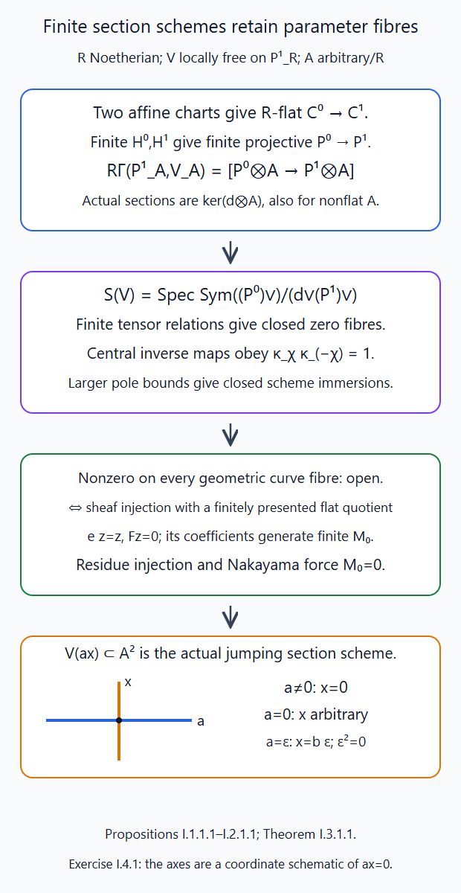
Propositions I.1.1.1–I.2.1.1 and Theorem I.3.1.1 retain the actual section scheme, polynomial relations, closed pole transitions and parameter-flat quotients. The axes are a coordinate schematic of the exact equation \(ax=0\), computed in Exercise I.4.1. Editable SVG source.

I.4. Exercises
Exercise I.4.1 (medium). Over \(R=k[a]\), define a rank-two bundle by the transition matrix \(\begin{pmatrix}t^{-2}&at^{-1}\\0&1\end{pmatrix}\). Compute its entire section scheme and derived coherent sections on every parameter algebra. Determine its injection/flat-quotient open locus and test \(a=\epsilon\) over the dual numbers.
Solution. Set \(R=k[a]\). On the two charts define a rank-two bundle with frames \(e_0,f_0\) and \(e_\infty,f_\infty\), and transitions \[ e_\infty=t^{-2}e_0,\qquad f_\infty=f_0+a t^{-1}e_0. \tag{I.4.1} \] Its transition determinant \(t^{-2}\) is a Laurent unit, so this is an actual bundle over every \(R\)-algebra. It is an extension \(0\to\mathcal O(-2)\to\mathcal V_a\to\mathcal O\to0\). The positive Čech difference of the two lifts of \(1\) is \(a t^{-1}e_0\), whose coefficient is \(a\) in \(H^1(\mathcal O(-2))=R[t,t^{-1}]/(R[t]+t^{-2}R[t^{-1}])=R\cdot[t^{-1}e_0]\).
For every \(A\), a global section has quotient coordinate a constant \(x\in A\). Comparing its two polynomial \(e\)-coordinates gives \(b_0(t)=t^{-2}b_\infty(t^{-1})+a x t^{-1}\). The three disjoint Laurent ranges force \(b_0=b_\infty=0\) and \(ax=0\). Therefore the actual section scheme is \[ \mathscr S(\mathcal V_a)=\operatorname{Spec}k[a,x]/(ax), \qquad R\Gamma(\mathcal V_a)\simeq[R\xrightarrow{a}R]. \tag{I.4.2} \] The Čech differential has components \(t^{-2}b_\infty-b_0+a t^{-1}c_\infty\) and \(c_\infty-c_0\). Polynomial subtraction eliminates the nonconstant quotient-coordinate tails, leaving the constant \(x\); subtraction of \(b_0\) and \(t^{-2}b_\infty\) eliminates the two outer \(e\)-ranges. The sole remaining differential is \(x\mapsto ax\) in the positive \(t^{-1}e_0\) coordinate. These eliminations use only additions and the unit signs, so give the actual two-term comparison on every parameter ring. The nonzero-section open locus is \(x\ne0\), which forces \(a=0\) as an equation over every parameter ring.
Over \(A=k[\epsilon]/\epsilon^2\), with \(a=\epsilon\), the ambient section scheme retains the sections \(x=b\epsilon\). They reduce to zero on the geometric fibre and consequently fail the injection/flat-quotient open condition. In contrast, using the generic \(H^0\) alone would omit all of these ambient nilpotent section parameters before imposing the correct open condition. This tests the actual finite equations, nonflat base change and the two different stages of the construction.
Exercise I.4.2 (advanced). The central target line is \(\mathcal O(-1)\). Give its map pole bound two and its inverse pole bound zero. Compute the entire scheme of inverse pairs on arbitrary parameter rings, the transition from pole bound one, and a nonreduced parameter point in characteristic two.
Solution. Let the central target line be \(\mathcal O(-1)\), with frame \(v_\infty=t^{-1}v_0\). With pole bounds two and zero, its map and inverse have the entire forms \[ \kappa^+=(b t^{-2}+c t^{-1})v_0,\qquad \kappa^-=(e+d t)v_0^\vee. \tag{I.4.3} \] Indeed the first global Laurent range is \(-2,-1\), and the dual line's global range is \(0,1\). Their actual product equals \(1\) exactly when \[ be=0,\qquad bd+ce=0,\qquad cd=1. \tag{I.4.4} \] Every solution on any \(k\)-algebra has \(c\) a unit, \(d=c^{-1}\), \(b=-c^2e\), and \(e^2=0\), and these formulas give every solution. Thus the precise central-inverse scheme is \[ \operatorname{Spec}k[c,c^{-1},e]/e^2. \tag{I.4.5} \] Over the dual numbers, take \(c=1,e=\epsilon\). The actual maps are \((t^{-1}-\epsilon t^{-2})v_0\) and \((t+\epsilon)v_0^\vee\), whose product is literally one. At pole bound one the extra coefficient \(b\) is zero, which forces \(e=0\); the closed transition embeds the reduced \(\mathbf G_m\) into this thickening. This calculation is valid in characteristic two and is a direct reason not to replace the torus meromorphic functor by its reduced integer labels.
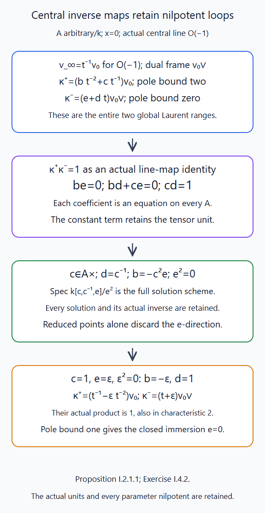
Exercise I.4.2 solves every coefficient equation, retaining the actual tensor unit and inverse maps on all parameter rings. The lower-pole-bound scheme is the closed subscheme \(e=0\), including its scheme structure. Editable SVG source.

11. What this lesson does not prove
Theorem 2.0 proves the actual plane-origin and exceptional-line supported comparisons, including their coefficient-system and Frobenius compatibility. Proposition 2.1 and §4 consequently prove the quadratic-cone étale IC and the Frobenius-compatible exceptional-curve splitting. The \(GL_2\) indicator product follows from lattice-chain counts and the bounded proper-fibre trace calculation, and the torus case is proved directly. General geometric IC stalk and costalk parity over every algebraically closed ground field with \(\ell\) invertible is proved in Identifying the dual group, Appendices C–D. Appendix A proves the actual scalar-Frobenius operator on all IC weight spaces and the canonical normalized symmetric tensor Weil lift. Appendix B proves the actual compact-support trace identity, the full spherical Satake algebra isomorphism, and the convolution identity for normalized IC traces. Appendix C proves split Tate Frobenius on every IC stalk and costalk. Appendix D proves the full orbit-indicator formula and identifies every graded IC stalk multiplicity with the polynomial (6.2). Appendix E proves geometric character vanishing, every nondominant-conductor case of (7.2), its upper-degree bound and zero-character top-component criterion, the actual top Frobenius scalar, and every highest-slice case. Appendix F proves the general last-residue top obstruction and its complete lowest-slice case. Appendix G constructs the relevant global strata and evaluation, their geometric self-maps, the actual finite Hecke chart and normalized coefficient comparisons, and its strict relevant-stratum bound. Appendix H constructs both projective modification projections, coherent Hecke transport on meromorphic decoration families, and a smooth central-torus reduction with actual Schubert, slice, coefficient and Weil comparisons. Appendix I proves actual finite section and polynomial decoration schemes, their arbitrary-base-change comparisons and closed pole transitions, and the open sheaf-injection/parameter-flat-quotient condition.
The algebraic character transition (6.11) is proved for every dual root datum and lattice in §§6.1–6.3. Appendix D proves the general stalk identity (6.3) in the arithmetic setting of §1. Generation of the full highest-line and tensor datum by a finite representation family, the affine flag-cone construction, saturation and all defect strata, intrinsic duality and the ordinary/exceptional boundary bounds are still required to complete the algebraic auxiliary compactification. Lower-degree concentration and the general tensor-multiplicity comparison in the Whittaker cohomology theorem (7.2), the derived D-module factorization equivalence (7.4), and the arithmetic Fargues–Scholze equivalence remain to be proved. Their statements have the displayed hypotheses and free locators. They are not used in the proofs of the rank-one or torus calculations. A full Ran-category construction and a six-functor theory on \(\mathrm{Bun}_G\) also remain unfinished.
References
- Edward Frenkel, Lectures on the Langlands program and conformal field theory, §§5.3–5.6: normalized functions, geometric Satake and Hecke kernels.
- Daniel Juteau, Carl Mautner and Geordie Williamson, Parity sheaves, Corollaries 2.8–2.9: the odd-Hom and open-restriction lifting framework.
- Thomas J. Haines, Robert E. Kottwitz and Amritanshu Prasad, Iwahori-Hecke Algebras, §§1.3–1.15: the universal unramified module and the rank-one intertwiner.
- George Lusztig, Singularities, character formulas, and a q-analogue of weight multiplicities, free author copy, equations (9.3)–(9.4), §11(c), printed pp. 225–227: polynomial and IC conventions.
- Dmitri Panyushev, On Lusztig's q-analogues of all weight multiplicities of a representation, §1, equation (1.1): the positive-power partition formula.
- Edward Frenkel, Dennis Gaitsgory and Kari Vilonen, Whittaker patterns in the geometry of moduli spaces of bundles on curves, Theorem 1, equation (1.7); Definition 4.2.2, Theorems 3–4 and §5.4.4: the twisted cohomology theorem and the globalized abelian Whittaker category.
- Dima Arinkin and collaborators, Proof of the geometric Langlands conjecture II: Kac–Moody localization and the FLE, §§1.3–1.4, especially Theorem 1.4.2 and Remark 1.4.6: the derived half-twisted factorization statement.
- Laurent Fargues and Peter Scholze, Geometrization of the local Langlands correspondence, VI.9–VI.11: relative arithmetic fusion, Weil actions and the reconstructed dual group.